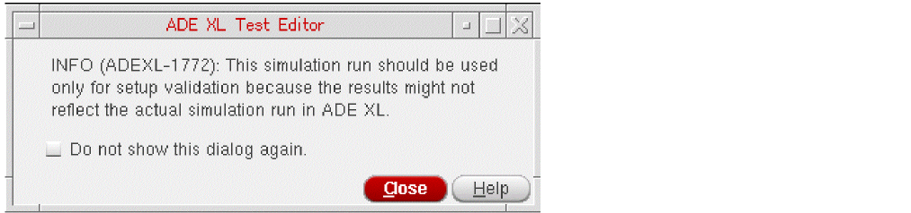
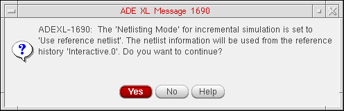
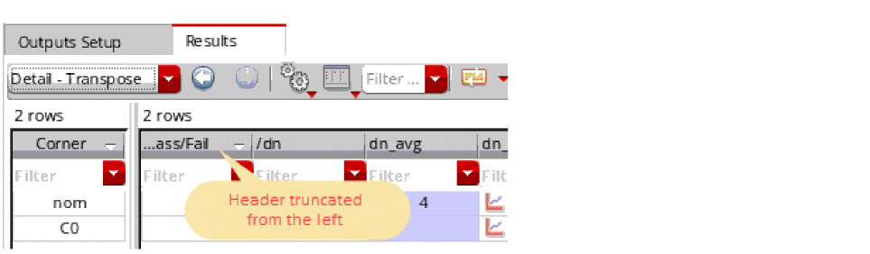
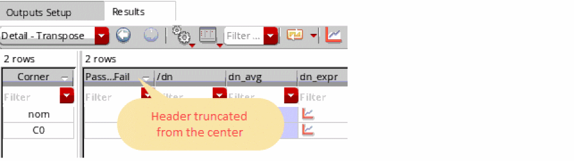
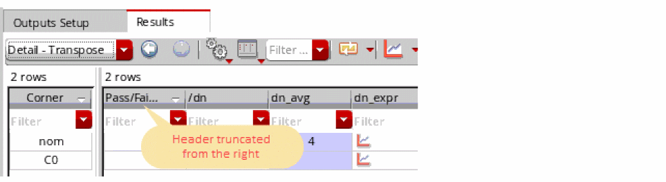

A
Environment Variables
This appendix describes public environment variables that control the characteristics of the Analog Design Environment (ADE). You can customize the operation and behavior of Analog Design Environment products by changing the value of a particular environment variable.
This appendix lists environment variables belonging to the following products:
- adexl.setupdb
- adexl.test
- adexl.testEditor
- adexl.simulation
- adexl.distribute
- adexl.monte
- adexl.historyNamePrefix
- adexl.icrpStartup
- adexl.results
- adexl.gui
- adexl.cpupdtr
- adexl.datasheet
- asimenv
- asimenv
- asimenv.startup
- adexl.plotting
- asimenv.plotting
- ADE Simulation Environment
- ADE XL
- AMS
- ams.envOpts
- Calculator
- Distributed Processing
- Environment Variables for Advanced Run Modes
- HspiceD
- Analysis
- Spectre
- Ultrasim
The appendix also provides you a list of deprecated environment variables.
Licensing Requirements
The license number required for ADE L is Analog_Design_Environment_L. One ADE L feature license is required for one User, Display and Host (UHD) session of ADE L.
You can also set ADE L to be your default application by selecting File - Set Default Application and ensuring that ADE L is set as the default for the listed scenario options. For more information on setting a default application see,
For more information on licensing and related information, see:
- Obtaining Licences in Virtuoso Design Environment User Guide
- Cadence Workspaces in Virtuoso Design Environment User Guide
- Virtuoso Software Licensing and Configuration User Guide
adexl.setupdb
loadSetupToActiveAlsoViewsResults
adexl.setupdb loadSetupToActiveAlsoViewsResults boolean { t | nil }
Description
Specifies if the Load Setup To Active command should display the results in addition to loading the setup details from a history.
-
t: The Load Setup To Active command displays the results in addition to loading the setup details from a history.
This is the default value. -
nil: The Load Setup To Active command only loads the setup details from a history and does not show results.
By default, this tool loads the results of a history while loading the setup details. When the results are large, loading them takes a lot of time. Setting this variable to nil loads only the setup details.
GUI Equivalent
Examples
envGetVal("adexl.setupdb" "loadSetupToActiveAlsoViewsResults")
envSetVal("adexl.setupdb" "loadSetupToActiveAlsoViewsResults" 'boolean nil)
saveDir
adexl.setupdb saveDir string "saveDirpath"
Description
Specifies where you want the program to write the setup database file.
If you do not specify a file path or if the path you specify is not valid, the program writes the setup database file to the maestro view. If your design library is set up as read-only, you can use this environment variable to specify a writable location.
GUI Equivalent
Examples
envGetVal("adexl.setupdb" "saveDir string")
envSetVal("adexl.setupdb" "saveDir string" "")
percentageForNearSpec
adexl.setupdb percentageForNearSpec int percentageValue
Description
Specifies the percentage value based on which the near status is displayed in the Pass/Fail column of the Results table. The status is set to near when one or more measured values for an output are no more than the percentage value outside the target value of the specification.
The valid value is an integer between than 0 and 99.
GUI Equivalent
Examples
envGetVal("adexl.setupdb" "percentageForNearSpec")
envSetVal("adexl.setupdb" "percentageForNearSpec" 'int 20)
useNMPForMapping
adexl.setupdb useNMPForMapping boolean { t | nil }
Description
Specifies whether nmp-based name mapping scheme must be used for naming files created by ADE XL and ADE GXL.
-
t: Uses nmp-based name mapping scheme for naming files.
Only the files in views that were created when this variable is set totwill have names assigned using the nmp-based name mapping scheme. Files in views that were created when this variable is not set or set tonil, will continue to be named using the default name mapping scheme. -
nil: Uses the default name mapping scheme for naming files.
This is the default value.
t if you are using a design management system.GUI Equivalent
Examples
envGetVal("adexl.setupdb" "useNMPForMapping")
envSetVal("adexl.setupdb" "useNMPForMapping" 'boolean t)
adexl.test
- autoCopyCellviewVars
- autoPromoteVarsToGlobal
- checkForUnsavedViewsUponRun
- checkForUnsavedViewsUponRun
- debugDataDir
- initiallyAddNameUniqifier
autoCopyCellviewVars
adexl.test autoCopyCellviewVars boolean { t | nil }
Description
Controls copying of new design variables and new values for existing design variables from the design associated with a test when you open an maestro view or add a test in this tool.
-
t: Automatically copies design variables from the design associated with a test when you open a maestro view or add tests in a maestro view. -
nil: Disables the automatic copying of design variables when you open an maestro view or add tests in an maestro view.
This is the default value.
You can do one of the following to manually copy new design variables and new values for existing design variables from the design associated with a test:
GUI Equivalent
Examples
envGetVal("adexl.test" "autoCopyCellviewVars")
envSetVal("adexl.test" "autoCopyCellviewVars" 'boolean t)
Related Topics
Variables and Parameters
autoPromoteVarsToGlobal
adexl.test autoPromoteVarsToGlobal boolean { t | nil }
Description
Controls whether design variables are automatically added as global variables on the Data View assistant and on the Variables tab of the Variables and Parameters pane.
-
t: All design variables are automatically added as global variables in the Global Variables tree on the Data View assistant and the Variables tab of the Variables and Parameters pane.
This is the default value. -
nil: Disables the automatic addition of design variables as global variables.
GUI Equivalent
Examples
envGetVal("adexl.test" "autoPromoteVarsToGlobal")
envSetVal("adexl.test" "autoPromoteVarsToGlobal" 'boolean nil)
Related Topics
checkForUnsavedViewsUponRun
adexl.test checkForUnsavedViewsUponRun boolean { t | nil }
Description
Specifies whether unsaved design views should be checked before running simulations.
-
t:Checks for unsaved design views before running simulations.
This is the default value. -
nil: Checks for unsaved design views are deferred until netlisting.
GUI Equivalent
Examples
envGetVal("adexl.test" "checkForUnsavedViewsUponRun")
envSetVal("adexl.test" "checkForUnsavedViewsUponRun" 'boolean nil)
checkForNewCellviewVarsUponRun
adexl.test checkForNewCellviewVarsUponRun cyclic { "Full" | "No" | "SimInfoParameters" }
Description
Controls the check for new design variables before running simulations in the schematic hierarchy.
-
Full: Checks for all new design variables before running simulations.
This is the default value. -
No: Checks for new design variables is deferred until netlisting. This helps in reducing the netlisting time when the simulation hierarchy contains large number of instances. -
SimInfoParameters:simInfosection and are related to netlisting or simulation.
GUI Equivalent
Examples
envGetVal("adexl.test" "checkForNewCellviewVarsUponRun")
envSetVal("adexl.test" "checkForNewCellviewVarsUponRun" 'cyclic "No")
envSetVal("adexl.test" "checkForNewCellviewVarsUponRun" 'cyclic "SimInfoParameters")
debugDataDir
adexl.test debugDataDir string "saveResults"
Description
Controls where to save results for the simulations run from ADE XL Test Editor.
GUI Equivalent
Examples
envGetVal("adexl.test" "debugDataDir")
envSetVal("adexl.test" "debugDataDir" 'string "")
initiallyAddNameUniqifier
adexl.test initiallyAddNameUniqifier boolean { t | nil }
Description
Appends a sequence number to the end of test name to make it unique.
When you create a new test, ADE XL provides a name to the test by using a default format. If the initiallyAddNameUniqifier environment variable is set to t, the tool appends a sequence number to it to make it unique.
-
t: Appends a unique number to the test name.
This is the default value. -
nil: Does not append a unique number to the test name.
GUI Equivalent
Examples
envGetVal("adexl.test" "initiallyAddNameUniqifier")
envSetVal("adexl.test" "initiallyAddNameUniqifier" 'boolean nil)
adexl.testEditor
adexlTestEditorSetupValidateMsg
adexl.testEditor adexlTestEditorSetupValidateMsg boolean { t | nil }
Description
Controls whether to display the following message when a debug test run is started from the ADE XL Test Editor.
-
t:Displays the information message when a debug test run is started.
This is the default value. -
nil: Does not display the information message when a debug test run is started.

GUI Equivalent
Examples
envGetVal("adexl.testEditor" "adexlTestEditorSetupValidateMsg")
envSetVal("adexl.testEditor" "adexlTestEditorSetupValidateMsg" 'boolean nil)
showAllMenus
adexl.testEditor showAllMenus boolean { t | nil }
Description
The ADE XL Test Editor window is a customized version of the Virtuoso Analog Design Environment L (ADE L) session window. By default, all ADE L menus, except the custom menus, are displayed in the ADE XL Test Editor window. Set this environment variable to nil to display only the ADE XL specific menus.
-
t:Displays all ADE L menus, except the custom menus, in this tool Test Editor window.
This is the default value. -
nil: Displays only the ADE XL-specific menus in this tool Test Editor window.
GUI Equivalent
Examples
envGetVal("adexl.testEditor " "showAllMenus")
envSetVal("adexl.testEditor" "showAllMenus" 'boolean nil)
Related Topics
adexl.simulation
- autoDetectNetlistProcs
- checkInstanceBindings
- createCompositeSimLogFileWhenSimCountFewerThan
- createRunLogForSweepsCorners
- createRunLogWhenSimsFewerThan
- diskLowWarningInterval
- haltCurrentRunAfterPreRunTrigger
- envSetVal("adexl.simulation" "haltCurrentRunAfterPreRunTrigger" 'boolean t)
- ignoreDesignChangesDuringRun
- ignoredLibsForDUT
- includeStatementForNetlistInSimInputFile
- matlabResultTimeout
- matlabStartTimeout
- moveConfigsToNetlistDir
- overrideNetlistProcDetection
- overwriteHistory
- overwriteHistoryName
- retainNetlistsOverwriteHistory
- saveBestNDesignPoints
- saveBestPointsStrategy
- saveLastNHistoryEntries
- saveNetlistData
- saveRawData
- saveRawDataMode
- setCurrentRunPostSimulation
- showErrorForNonExistingVariables
- showWarningForReferenceNetlist
- singleNetlistForAllPoints
- sortVariableValues
- warnWhenSimsExceed
autoDetectNetlistProcs
adexl.simulation autoDetectNetlistProcs boolean { t | nil }
Description
Controls whether cellviews that use netlist procedures are automatically detected and renetlisted every time the design is netlisted.
-
t:Automatically detects cellviews that use netlist procedures and renetlists these cellviews every time the design is netlisted. -
nil: Disables the automatic-detection of cellviews that use netlist procedures. These cellviews will not be renetlisted every time the design is netlisted.
This is the default value.
GUI Equivalent
Examples
envGetVal("adexl.simulation" "autoDetectNetlistProcs")
envSetVal("adexl.simulation" "autoDetectNetlistProcs" 'boolean t)
Related Topics
checkInstanceBindings
adexl.simulation checkInstanceBindings boolean { t | nil }
Description
If config sweeps are used in the simulation setup, ADE Assembler checks for instance bindings in the Hierarchy Editor. If the instance or occurrence bindings in the config view conflict with the config sweeps, the tool displays a message prompt with a list of those instances and seeking confirmation whether the tool should clear the bindings in the config view. When this variable is set to nil, this check is not run, but the netlist may not be correct in that case.
-
t: Before running a simulation, ADE Assembler runs a check to identify instance or occurrence bindings in the config view that conflict with the config sweeps. -
nil: The check is not run.
This is the default value.
GUI Equivalent
Examples
envGetVal("adexl.simulation" "checkInstanceBindings")
envSetVal("adexl.simulation" "checkInstanceBindings" 'boolean t)
createCompositeSimLogFileWhenSimCountFewerThan
adexl.simulation createCompositeSimLogFileWhenSimCountFewerThan int numberOfSimulations
Description
By default, ADE XL creates a composite output log if there are upto 100 points for which simulations are to be run. However, if the number of data points is notably large, a lot of disk space and time is taken to create and save the composite log. In such cases, you can use this variable to specify the maximum number of simulations up to which ADE XL should save a composite output log file for the outputs.
The specified value must be a positive value between 0 and 100000.
GUI Equivalent
Examples
envGetVal("adexl.simulation" "createCompositeSimLogFileWhenSimCountFewerThan")
envSetVal("adexl.simulation" "createCompositeSimLogFileWhenSimCountFewerThan" 'int 45)
createRunLogForSweepsCorners
adexl.simulation createRunLogForSweepsCorners cyclic { "Always" | "ManualTuningOrSimLimited" | "WhenMultipleDesignPoints" | "SimLimited" | "OnlyInManualTuning" | "Never"}
Description
Specifies if the run log created for the Single Run, Sweeps and Corners run mode needs to include the details about the best design point. Adding this information in the run log takes time. Therefore, by default, ADE XL writes the best design point for this run mode only in the following two scenarios:
- When the Single Run, Sweeps and Corners simulation is run as part of the Manual Tuning run mode that aims at finding the best design point.
-
When the number of points in the Single Run, Sweeps and Corners run mode is less than the limit specified by the
createRunLogWhenSimsFewerThanenvironment variable.
However, if required, you can choose to include this information in other scenarios as well. The valid values are:
-
Always: Always appends the details of the best design point in the run log for Single Run, Sweeps and Corners run mode. -
ManualTuningOrSimLimited: Appends the details of the best design point only when the Single Run, Sweeps and Corners run mode is run as part of the Manual Tuning run mode or when the number of points is less than the count specified bycreateRunLogWhenSimsFewerThanenvironment variable.
This is the default value. -
WhenMultipleDesignPoints: Appends the details of the best design point only when the simulation includes multiple design points. This information is not added to the run log for a simulation with a single design point. -
SimLimited: Appends the details of the best design point if the number of points is less than the count specified bycreateRunLogWhenSimsFewerThanenvironment variable. -
OnlyInManualTuning: Appends the details of the best design point only when the Single Run, Sweeps and Corners run mode is run as part of the Manual Tuning run. -
Never: Never adds the details of the best design point to the run log for the Single Run, Sweeps and Corners run mode.
GUI Equivalent
Examples
envGetVal("adexl.simulation" "createRunLogForSweepsCorners")
envSetVal("adexl.simulation" "createRunLogForSweepsCorners" 'cyclic "Always")
envSetVal("adexl.simulation" "createRunLogForSweepsCorners" 'cyclic "ManualTuningOrSimLimited")
envSetVal("adexl.simulation" "createRunLogForSweepsCorners" 'cyclic "WhenMultipleDesignPoints")
Related Topics
createRunLogWhenSimsFewerThan
adexl.simulation createRunLogWhenSimsFewerThan int maxSimulationPoints
Description
Specifies the maximum number of simulation points up to which the details of the best design point are appended to the run log for the Single Run, Sweeps and Corners run. ADE XL checks for this limit when the createRunLogForSweepsCorners environment variable is set to ManualTuningOrSimLimited or SimLimited.
The valid value is a positive integer value between 0 and 100000.
GUI Equivalent
Examples
envGetVal("adexl.simulation" "createRunLogWhenSimsFewerThan")
envSetVal("adexl.simulation" "createRunLogWhenSimsFewerThan" 'int 50)
Related Topics
diskLowWarningInterval
adexl.simulation diskLowWarningInterval int timeInterval
Description
Sets the time interval, in milliseconds, when ADE XL must display a warning regarding low disk space after it has finished running the first run point.
The valid value is a positive integer value between 0 and 100000.
GUI Equivalent
Examples
envGetVal("adexl.simulation" "diskLowWarningInterval")
envSetVal("adexl.simulation" "diskLowWarningInterval" 'int 45)
haltCurrentRunAfterPreRunTrigger
adexl.simulation haltCurrentRunAfterPreRunTrigger boolean { t | nil }
Description
Halts the current simulation run after the preRun event occurs. When the preRun event is triggered, you can perform some checks before starting a simulation and set this environment variable to stop the simulation, if required.
-
t:Halts the current simulation run after the preRun trigger -
nil:Continues with the current simulation run.
This is the default value.
For example, if you need to ensure that simulations are not run locally. Instead, they should run on remote computers only, you can use this environment variable, as shown in the code below, to halt the simulation if the distribution method is set to Local.
; define a callback function in .cdsinit
(define (RunStopper sessionName sdbHandle modeName testName)
(when ((axlGetAttachedJobPolicy)->distributionmethod == "Local")
(printf "Local distribution method used; terminating simulation\n")
(envSetVal "adexl.simulation" "haltCurrentRunAfterPreRunTrigger" 'boolean t))
)
; Connect the callback with the event (define (connect_handlers session_name) (axlSessionConnect session_name "preRun" 'RunStopper)) ; Register the connected callback to connect the triggers on ADE XL session start (axlSessionRegisterCreationCallback 'connect_handlers)
GUI Equivalent
Examples
envGetVal("adexl.simulation" "haltCurrentRunAfterPreRunTrigger")
envSetVal("adexl.simulation" "haltCurrentRunAfterPreRunTrigger" 'boolean t)
ignoreDesignChangesDuringRun
adexl.simulation ignoreDesignChangesDuringRun boolean { t | nil }
Description
Specifies whether ADE XL needs to ignore any design changes in the simulation run that is already running.
It is recommended not to set this variable in CIW. This ensures that it is consistent in Virtuoso and remote simulation processes.
-
t: Ignores the design changes in the simulation run that is in progress. -
nil:
This is the default value.
GUI Equivalent
Examples
envGetVal("adexl.simulation" "ignoreDesignChangesDuringRun")
envSetVal("adexl.simulation" "ignoreDesignChangesDuringRun" 'boolean t)
Related Topics
ignoredLibsForDUT
adexl.simulation ignoredLibsForDUT string "libraryNameList"
Description
Specifies the list of libraries that should not be displayed in the Library drop-down list in the Design Under Test form. Disabling the display of unnecessary libraries makes it easier to select the correct design under test library for Monte Carlo analysis.
The valid value is a list of library names separated by spaces. For example, specify the following in the .cdsenv file to ignore the libraries named lib5 and lib8:
adexl.simulation ignoredLibsForDUT string "lib5 lib8"
analogLib, cdsDefTechLib, and basic are not displayed in the Library drop-down list.GUI Equivalent
Examples
envGetVal("adexl.simulation" "ignoredLibsForDUT")
envSetVal("adexl.simulation" "ignoredLibsForDUT" 'string "")
Related Topics
includeStatementForNetlistInSimInputFile
adexl.simulation includeStatementForNetlistInSimInputFile boolean { t | nil }
Description
Specifies how to include netlist file in the input.scs file.
This variable is ignored when the ignoreDesignChangesDuringRun environment variable is set to t.
-
t: Includes the netlist file by using the following statement in theinput.scsfile:include "netlist"
This helps in saving space consumed by the netlist directory because the netlist is directly included from the netlist file instead of copying the long netlist in theinput.scsfile. -
nil: Appends the complete netlist toinput.scsfile.
This is the default value.
GUI Equivalent
Examples
envGetVal("adexl.simulation" "includeStatementForNetlistInSimInputFile")
envSetVal("adexl.simulation" "includeStatementForNetlistInSimInputFile" 'boolean t)
Related Topics
matlabResultTimeout
adexl.simulation matlabResultTimeout int timeInterval
Description
The time in seconds, for which ADE XL will wait after issuing a MATLAB command until a prompt is returned.
The valid value is an integer value between 1 and 10000.
GUI Equivalent
Examples
envGetVal("adexl.simulation" "matlabResultTimeout")
envSetVal("adexl.simulation" "matlabResultTimeout" 'int "20")
matlabStartTimeout
adexl.simulation matlabStartTimeout int timeInterval
Description
The time, in seconds, for which ADE XL waits for the script to start evaluation.
The valid value is an integer value between 1 and 10000.
GUI Equivalent
Examples
envGetVal("adexl.simulation" "matlabStartTimeout")
envSetVal("adexl.simulation" "matlabStartTimeout" 'int 80)
moveConfigsToNetlistDir
adexl.simulation moveConfigsToNetlistDir boolean { t | nil }
Description
Specifies if the config views generated when using CONFIG global variables are to be saved in the netlist directory.
-
t: The generated configs are moved to the corresponding netlist directory.
This is the default value. -
nil: The config information generated for every data point is saved in the <library>/<cell>/directory structure. This option is helpful for debugging purposes as the config views saved in the design hierarchy can be viewed in Virtuoso Hierarchy Editor. However, the view list will become notably large as it will include the config view for all the data points.
To ensure that the setting is available on the ICRP, set this variable either in .cdsinit or in .cdsenv. This will not be applied if set from CIW.
GUI Equivalent
Examples
envGetVal("adexl.simulation" "moveConfigsToNetlistDir")
envSetVal("adexl.simulation" "moveConfigsToNetlistDir" 'boolean nil)
Related Topics
overrideNetlistProcDetection
adexl.simulation overrideNetlistProcDetection string "{ "yes" | "no" | " " }"
Description
Controls how messages are displayed when the autoDetectNetlistProcs environment variable is set to t and the netlisting mode for incremental simulation runs is set to Use reference netlist option in the Reference History form.
-
"": Displays a message box that indicates that auto-detection and execution of netlist procedures is disabled because the netlisting mode for incremental simulation runs is set to Use reference netlist, and prompts you to continue or cancel the incremental simulation run.
This is the default value. -
yes: Displays a warning in the CIW that indicates that auto-detection and execution of netlist procedures is disabled because the netlisting mode for incremental simulation runs is set to Use reference netlist, and continues with the incremental simulation run. -
no: Displays a message box that indicates that auto-detection and execution of netlist procedures is disabled because the netlisting mode for incremental simulation runs is set to Use reference netlist option, and requires you to either set the netlisting mode in the Reference History form to New, or set the autoDetectNetlistProcs environment variable tonil.
GUI Equivalent
Examples
envGetVal("adexl.simulation" "overrideNetlistProcDetection")
envSetVal("adexl.simulation" "overrideNetlistProcDetection" 'string "yes")
Related Topics
overwriteHistory
adexl.simulation overwriteHistory boolean { t | nil }
Description
Controls whether a specified history item is overwritten for subsequent simulation runs.
-
t: Enables overwriting the specified history item for subsequent simulation runs.
The value of this variable is automatically set totif you specify1as the value for the saveLastNHistoryEntries environment variable. -
nil: Disables overwriting the specified history item for subsequent simulation runs.
A new history item is created for each simulation run.
This is the default value.
GUI Equivalent
Examples
envGetVal("adexl.simulation" "overwriteHistory")
envSetVal("adexl.simulation" "overwriteHistory" 'boolean t)
Related Topics
retainNetlistsOverwriteHistory
overwriteHistoryName
adexl.simulation overwriteHistoryName string "historyItemName"
Description
Specifies the name of the history item to be overwritten for subsequent simulation runs.
The overwriteHistoryName variable impacts only the newly created adexl views. The existing views will retain the values they have in the active setup.
The default value is Next History Run which indicates that the next history item that is created should be overwritten for subsequent simulation runs. The name of any existing history, for example: Interactive.3
GUI Equivalent
Examples
envGetVal("adexl.simulation" "overwriteHistoryName")
envSetVal("adexl.simulation" "overwriteHistoryName" 'string "Interactive.3")
Related Topics
retainNetlistsOverwriteHistory
retainNetlistsOverwriteHistory
adexl.simulation retainNetlistsOverwriteHistory boolean { t | nil }
Description
Controls whether the netlist information in a history item that is specified to be overwritten is retained for subsequent simulation runs.
-
t: Retains the netlist information in the history item for subsequent simulation runs. -
nil: Deletes the netlist information before each subsequent simulation run.
This is the default value.
GUI Equivalent
Examples
envGetVal("adexl.simulation" "retainNetlistsOverwriteHistory")
envSetVal("adexl.simulation" "retainNetlistsOverwriteHistory" 'boolean t)
Related Topics
saveBestNDesignPoints
adexl.simulation saveBestNDesignPoints int defaultNumber
Description
Specifies the default number of best design points for which to save data when the Save best radio button is selected in the Data Points per Optimization Run group box on the Save Options form that appears when you choose Options – Save in the ADE GXL environment. The valid value is an integer value greater than 10.
GUI Equivalent
envGetVal("adexl.simulation" "saveBestNDesignPoints")
envSetVal("adexl.simulation" "saveBestNDesignPoints" 'int 20)
Related Topics
saveBestPointsStrategy
adexl.simulation saveBestPointsStrategy cyclic { "Save best" | "Save all design points"}
Description
Specifies which radio button is selected in the Design Points per Optimization Run group box on the Save Options form that appears when you choose Options – Save in the ADE GXL environment.
-
Save all design points: Saves data for all design points. -
Save best: Saves data for the specified number of best design points; use saveBestNDesignPoints to specify the number of points.
This is the default value.
GUI Equivalent
Examples
envGetVal("adexl.simulation" "saveBestPointsStrategy")
envSetVal("adexl.simulation" "saveBestPointsStrategy" 'cyclic "Save all design points")
Related Topics
Save Options
saveBestNDesignPoints
saveLastNHistoryEntries
adexl.simulation saveLastNHistoryEntries int numberOfHistoryEnteries
Description
Specifies the number of history entries (checkpoints) to save above and beyond any locked entries.
The valid value is an integer value greater than 0.
GUI Equivalent
Examples
envGetVal("adexl.simulation" "saveLastNHistoryEntries")
envSetVal("adexl.simulation" "saveLastNHistoryEntries" 'int 2)
Related Topics
saveNetlistData
adexl.simulationsaveNetlistDatacyclic {"Save all points"|"Save none"}
Description
Specifies whether to preserve the netlist data generated during a simulation run. This is similar to the Save Netlists check box in the Save Options form that appears when you choose Options – Save in the tool environment.
-
Save all points: Preserves netlist data.
This is the default value. -
Save none: Deletes netlist data after the simulation run is complete.
GUI Equivalent
Examples
envGetVal("adexl.simulation" "saveNetlistData")
envSetVal("adexl.simulation" "saveNetlistData" 'cyclic "Save none")
Related Topics
saveRawData
adexl.simulation saveRawData cyclic { "Save all points" | "Save none" }
Description
Specifies whether to preserve the simulation data generated during a simulation run. This is similar to the Save simulation check box in the Save Options form that appears when you choose Options – Save in the tool environment.
-
Save all points: Preserves simulation data.
This is the default value. -
Save none: Deletes simulation data after the simulation run is complete.
GUI Equivalent
Examples
envGetVal("adexl.simulation" "saveRawData")
envSetVal("adexl.simulation" "saveRawData" 'cyclic "Save all points")
envSetVal("adexl.simulation" "saveRawData" 'cyclic "Save none")
Related Topics
saveRawDataMode
adexl.simulation saveRawDataMode cyclic{ "All" | "Quick Plot Data Only"}
Description
Specifies whether to save all the simulation data or only the quick plot data.
-
All: Preserves all the simulation data.
This is the default value. -
Quick Plot Data Only: Preserves only the quick plot data.
This variable works only if saveRawData is set to save all points.
GUI Equivalent
Examples
envGetVal("adexl.simulation" "saveRawData")
envSetVal("adexl.simulation" "saveRawData" 'cyclic "All")
envSetVal("adexl.simulation" "saveRawData" 'cyclic "Quick Plot Data Only")
Related Topics
setCurrentRunPostSimulation
adexl.simulation setCurrentRunPostSimulation boolean { t | nil }
Description
Specifies if ADE XL should internally open the PSF data for the last run simulation. By default, this variable is set to nil and ADE XL does not open the psf data after running the simulation. The tool explicitly opens it when you perform post processing operations, such as plotting of graphs. This improves the performance in case of large number of sweeps and corners.
If you have any scripts that plot data after running simulation, set this variable to t so that the results are readily available.
-
t: Opens the PSF data for the last run simulation. -
nil: Does not open the PSF data.
This is the default value.
GUI Equivalent
Examples
envGetVal("adexl.simulation" "setCurrentRunPostSimulation")
envSetVal("adexl.simulation" "setCurrentRunPostSimulation" 'boolean t)
showErrorForNonExistingVariables
adexl.simulation showErrorForNonExistingVariables boolean { t | nil }
Description
Checks whether before running a simulation, ADE XL should match the design variables in the Corners Setup form with the list of global variables in the active setup. If the setup for corners uses any design variable that is not present in the active ADE XL setup, simulation is not run and an error is displayed suggesting you to either add that design variable in the active setup or to remove it from the Corners Setup form.
-
t: Checks for the presence of non-existing variables in the setup for corners. -
nil: Does not check for the presence of non-existing variables in the setup for corners. This is the default value.
GUI Equivalent
Examples
envGetVal("adexl.simulation" "showErrorForNonExistingVariables")
envSetVal("adexl.simulation" "showErrorForNonExistingVariables" 'boolean t)
showWarningForReferenceNetlist
adexl.simulation showWarningForReferenceNetlist boolean { t | nil }
Description
Controls whether the following message box is displayed when you run an incremental simulation with the netlisting mode set to Use reference netlist in the Reference History form.
-
t: Enables the display of the message box when you run an incremental simulation.
This is the default value. -
nil: Disables the display of the message box when you run an incremental simulation.

GUI Equivalent
Examples
envGetVal("adexl.simulation" "showWarningForReferenceNetlist")
envSetVal("adexl.simulation" "showWarningForReferenceNetlist" 'boolean nil)
Related Topics
singleNetlistForAllPoints
adexl.simulation singleNetlistForAllPoints boolean { t | nil }
Description
By default, ADE XL creates and saves a separate netlist file in the results directory for every design point. For large designs, this results in consuming huge space with same netlist file being saved in multiple directories.
This variable specifies that a common netlist is to be used for all the design points. When this variable is set, a single netlist file is created and a link to that is created in all the point directories. This helps in minimizing the size of the simulation directory.
-
t: Specifies that only a single netlist will be created for all points. -
nil: Creates a separate netlist for each point.
This is the default value.
GUI Equivalent
Examples
envGetVal("adexl.simulation" "singleNetlistForAllPoints")
envSetVal("adexl.simulation" "singleNetlistForAllPoints" 'boolean t)
Related Topics
sortVariableValues
adexl.simulation sortVariableValues boolean { t | nil }
Description
By default, while running a simulation, the values of variables, parameters, and corner definitions are saved in the order they were specified. It maintains the same order while saving and displaying the results.
To sort these values in ascending order, in the Results tab, set this variable to t.
-
t: Sorts the values of variables, parameters, and corner definitions in ascending order, in the Results tab. -
nil: Displays the values of variables, parameters, and corner definitions in the Results tab, in the user-specified order.
This is the default value.
GUI Equivalent
Examples
envGetVal("adexl.simulation" "sortVariableValues")
envSetVal("adexl.simulation" "sortVariableValues" 'boolean t)
warnWhenSimsExceed
adexl.simulation warnWhenSimsExceed int maxNumberOfSimulations
Description
Specifies the maximum number of simulations after which the tool displays a message informing about the exceeding the limit and seeking confirmation to proceed with the run.
The valid value is a integer value between 0 to 100000. If 0, the warning message will not be displayed irrespective of the number of simulations.
GUI Equivalent
Examples
envGetVal("adexl.simulation" "warnWhenSimsExceed")
envSetVal("adexl.simulation" "warnWhenSimsExceed" 'int 400)
adexl.distribute
- continueICRPRunOnAbruptGUIExit
- createUniqueLogsDirForICRPLogs
- defaultRunInParallel
- defaultPerRunNumJobs
- enableICRPReconnect
- estimateMemoryUnitForFarm
- generateJobFileOnlyOnError
- inferCommandICRPStatusFromProxy
- isLSFMemSwapHostLimit
- jobFileHeader
- jobFileDir
- useAllLingeringJobs
- maxIPCJobsLimit
- maxJobFailPerPolicy
- maxJobFailPerPolicyInBatch
- maxJobsIsHardLimit
- maxNFSSyncWait
- numRetriesOnError
- runTimeoutScalingStartsAfterSimCount
- runTimeoutScaleFactor
- useAllLingeringJobs
- useAsRunTimeout
- useSameProcess
continueICRPRunOnAbruptGUIExit
adexl.distribute continueICRPRunOnAbruptGUIExit boolean { t | nil }
Description
Enables continuation and completion of in-process simulations after the ADE XL GUI exits abruptly.
-
t: If the ADE XL GUI exits abruptly, keeps the in-process simulations active. After completion of these simulations, saves their results in the results database. -
nil: Stops the in-process simulations immediately after the ADE XL GUI exits.
This is the default value.
GUI Equivalent
Examples
envGetVal("adexl.distribute" "continueICRPRunOnAbruptGUIExit")
envSetVal("adexl.distribute" "continueICRPRunOnAbruptGUIExit" 'boolean t)
createUniqueLogsDirForICRPLogs
adexl.distribute createUniqueLogsDirForICRPLogs boolean { t | nil }
Description
Specifies whether a unique log subdirectory must be created under under the logs_<username>_logs<num> directory in the Virtuoso working directory. This subdirectory will be used by all the ICRPs started by that Virtuoso process to write their job log files.
By default, this variable is set to t and a unique subdirectory is created for each Virtuoso process.
-
t: Creates unique subdirectories for each Virtuoso process started from a directory.
This is the default value. -
nil: Specifies that all Virtuoso processes share a common subdirectory under the logs_processID
GUI Equivalent
Examples
envGetVal("adexl.distribute" "createUniqueLogsDirForICRPLogs")
envSetVal("adexl.distribute" "createUniqueLogsDirForICRPLogs" 'boolean nil)
defaultRunInParallel
adexl.distribute defaultRunInParallel boolean { t | nil }
Description
Specifies the default option for the Run in in the Run Options form that appears when you choose Options – Run Options in the ADE XL environment.
-
t: Sets Parallel as the default option for the Run in field in the Run Options form. -
nil: Sets Series as the default option for the Run in field in the Run Options form.
This is the default value.
GUI Equivalent
Examples
envGetVal("adexl.distribute" "defaultRunInParallel")
envSetVal("adexl.distribute" "defaultRunInParallel" 'boolean t)
Related Topics
defaultPerRunNumJobs
adexl.distribute defaultPerRunNumJobs int defaultValue
Description
Specifies a default value for the Specify field in the Run Options form that appears when you choose Options – Run Options in the ADE XL environment.
The valid value is a positive integer value.
GUI Equivalent
Examples
envGetVal("adexl.distribute" "defaultPerRunNumJobs")
envSetVal("adexl.distribute" "defaultPerRunNumJobs" 'int 2)
Related Topics
Run Options
enableICRPReconnect
adexl.distribute enableICRPReconnect boolean { t | nil }
Description
Enables reconnection of an ICRP job with the ADE XL GUI. This variable is useful in scenarios when due to some issues with a remote server running an ICRP job, the DRMS (LSF or SGE) migrates the ICRP to another resource, and reconnects it with the ADE XL GUI using the same job ID.
By default, when the DRMS migrates an ICRP job, the connection between the ADE XL GUI and the ICRP is broken. ADE XL assumes that the ICRP job has exited due to an error. If that job was running a point, ADE XL resubmits that point to another ICRP. In this case, when the original ICRP that was migrated to another resource tries to re-establish the connection, ADE XL ignores it and does not recognize it as a valid ICRP.
When you set the enableICRPReconnect environment variable to t, ADE XL allows the original ICRP to re-establish the connection and to run the same point again. In this case, the ICRP is considered as a new process and goes through all the states, such as starting, configuring, and evaluating. The in-progress simulations that were earlier running for the points submitted to the original ICRP might run on this new ICRP or some other ICRP that might be available at that time.
-
t: Reconnects an ICRP job with the ADE XL GUI. -
nil: Does not reconnect ICRP jobs with the ADE XL GUI. Instead, new ICRP jobs are started to submit the points.
This is the default value.
Examples
envGetVal("adexl.distribute" "enableICRPReconnect")
envSetVal("adexl.distribute" "enableICRPReconnect" 'boolean t)
estimateMemoryUnitForFarm
adexl.distributeestimateMemoryUnitForFarmcyclic { "B" | "K" | "M" | "G" | "T" }
Description
Specifies the unit for displaying the estimated memory usage in a simulation, which will also be an estimation of the memory required for farm machines.
-
B: Units in Byte -
K: Units in Kilobyte -
M: Units in Megabyte.
This is the default value. -
G: Units in Gigabyte -
T: Units in Terabyte
GUI Equivalent
Examples
envGetVal("adexl.distribute" "estimateMemoryUnitForFarm")
envSetVal("adexl.distribute" "estimateMemoryUnitForFarm" 'cyclic "B")
envSetVal("adexl.distribute" "estimateMemoryUnitForFarm" 'cyclic "K")
generateJobFileOnlyOnError
adexl.distribute generateJobFileOnlyOnError boolean { t | nil }
Description
Specifies if the job log is to be saved only for jobs with an error or for all the jobs. By default, the job log is saved only when a point fails due to an error.
-
t: Saves the job log only for the jobs that fail.
This is the default value. -
nil: Saves the job log for all the jobs.
GUI Equivalent
Examples
envGetVal("adexl.distribute" "generateJobFileOnlyOnError")
envSetVal("adexl.distribute" "generateJobFileOnlyOnError" 'boolean nil)
inferCommandICRPStatusFromProxy
adexl.distribute inferCommandICRPStatusFromProxy cyclic { "Always" | "Never" | "GuessFromCommand" }
Description
Specifies whether ADE XL should consider the command jobs to be interactive or not so as to infer the ICRP status from the local shell or proxy process.
-
Always: Specifies that the job is always interactive.
Use this value when you are sure that every job would be interactive because if it is not, the job distribution might not work correctly. -
Never: Specifies that the job is never interactive. -
GuessFromCommand: Specifies that the ADE XL must treat the jobs to be interactive only when interactive flags or commands are given.
This is the default value.
ADE XL guesses the known interactive flags or commands only for LSF, SGE, and Network Computer. If you have any other DRMS, ADE XL will not be able to understand whether the jobs are interactive or not. In such case, set this variable to Always.
Examples
envGetVal("adexl.distribute" "inferCommandICRPStatusFromProxy")
envSetVal("adexl.distribute" "inferCommandICRPStatusFromProxy" 'cyclic "Always")
envSetVal("adexl.distribute" "inferCommandICRPStatusFromProxy" 'cyclic "Never")
Related Topics
isLSFMemSwapHostLimit
adexl.distribute isLSFMemSwapHostLimit boolean { t | nil }
Description
Sets the memory limit specified in the LSF queue for simulation runs by enabling or disabling the Memory Host Limit field on the Job Policy Setup form. The valid value are provided below:
-
t: Enables the memory limit configured with the LSF queue for the jobs submitted for simulation.
The value of this variable is automatically set totif you select the Memory Host Limit check box on the Job Policy Setup form. -
nil: Disables the memory limit configured with the LSF queue for the jobs submitted for simulation.
The value of this variable is automatically set tonilif you deselect the Memory Host Limit check box on the Job Policy Setup form.
This is the default value.
GUI Equivalent
Examples
envGetVal("adexl.distribute" "isLSFMemSwapHostLimit")
envSetVal("adexl.distribute" "isLSFMemSwapHostLimit" 'boolean t)
Related Topics
jobFileHeader
adexl.distribute jobFileHeader cyclic { "None" | "CIWHeader" | "JobInfo" | "CIWHeaderAndJobInfo" | "Custom"}
Description
Specifies what type of header information must be prepended to the Job logs which are saved in the PSF directories for individual points.
The variable adexl.distribute generateJobFileOnlyOnError controls whether these individual Job logs are saved for every point, or only for failed points.
-
None: Does not include any header information in the log. This is the default value. -
CIWHeader: Includes the CIW header. -
JobInfo: -
CIWHeaderAndJobInfo: -
Custom: Calls a user-defined function,axlCustomJobLogHeader(). It accepts a disembodied property list as argument, which has the following properties:
The following example demonstrates how axlCustomJobLogHeader() can be used:
procedure( axlCustomJobLogHeader( myData )
println("Anything written to stdout, such as this text, will appear in the job log header")
foreach( x myData->CIWHeader println(x) )
foreach( x myData->JobInfo println(x) )
)
This example prints the header information similar to what CIWHeaderAndJobInfo will do.
GUI Equivalent
Examples
envGetVal("adexl.distribute" "jobFileHeader")
envSetVal("adexl.distribute" "jobFileHeader" 'cyclic "None")
envSetVal("adexl.distribute" "jobFileHeader" 'cyclic "CIWHeader")
jobFileDir
adexl.distribute jobFileDir string "directoryPath"
Description
Specifies a location where the user logs are saved. By default, the logs are saved in the logs_<user-name> directory in the current run directory. The valid value is the path to the directory where you want to save the user logs.
GUI Equivalent
Examples
envGetVal("adexl.distribute" "jobFileDir")
envSetVal("adexl.distribute" "jobFileDir" 'string "<dir-path>")
useAllLingeringJobs
adexl.distribute useAllLingeringJobs boolean { t | nil }
Description
Specifies whether idle or unconfigured jobs must be used when simulations runs are run in series.
For example, assume that you have specified that a maximum of five jobs must be used when simulation runs are run in series. You then run two runs in series, with the first run requiring five jobs to complete and the second run requiring three jobs to complete. When the first run is complete, there will be five idle jobs, but the second run requires only three jobs. If useAllLingeringJobs is set to nil (the default), the second run will use only three jobs and the remaining two idle jobs will timeout according to the specified linger timeout value. If useAllLingeringJobs is set to t, the second run will use all the five jobs.
-
t: Uses idle or unconfigured jobs when simulations are run in series. -
nil: Does not use idle or unconfigured jobs when simulations are run in series.
This is the default value.
GUI Equivalent
Examples
envGetVal("adexl.distribute" "useAllLingeringJobs")
envSetVal("adexl.distribute" "useAllLingeringJobs" 'boolean t)
Related Topics
maxJobFailPerPolicy
adexl.distribute maxJobFailPerPolicy int maxJobRestartTime
Description
Specifies the maximum number of times the application should restart an ICRP job if it fails to start.
An ICRP job may fail to start due to system slowness or long queue for job distribution and as a result, an error message may appear. In such a case, set this environment variable to a large number, say 1000.
The valid value is an integer between 1 to 100000.
GUI Equivalent
Examples
envGetVal("adexl.distribute" "maxJobFailPerPolicy")
envSetVal("adexl.distribute" "maxJobFailPerPolicy" 'int 2)
maxJobFailPerPolicyInBatch
adexl.distribute maxJobFailPerPolicyInBatch int maxTimesICRPRestarts
Description
Specifies the maximum number of times the application should restart an ICRP job if it fails to start. This variable is used in batch mode to ensure that the job retries do not go into an infinite loop.
The valid value is an integer between 1 to 100000.
GUI Equivalent
Examples
envGetVal("adexl.distribute" "maxJobFailPerPolicyInBatch")
envSetVal("adexl.distribute" "maxJobFailPerPolicyInBatch" 'int 30)
maxIPCJobsLimit
adexl.distribute maxIPCJobsLimit int maxTimesJobRun
Description
Specifies the maximum number of jobs that can be run at any time during your ADE XL session when the distribution method specified in your job policy is Command, Local or Remote-Host (uses SKILL-IPC
The valid value is an integer between 1 to 1000000.
LBS or Interface. Therefore, if you want to run more than the number of jobs specified using this variable, use the axlAddJobPolicy or axlAttachJobPolicy SKILL function to set the distribution method to LBS or Interface. In the later case, you also need to provide a custom job interface derived from the axlJobIntfC class.GUI Equivalent
Examples
envGetVal("adexl.distribute" "maxIPCJobsLimit")
envSetVal("adexl.distribute" "maxIPCJobsLimit" 'int 10)
Related Topics
Setting Up Job Policies
SKILL-IPC
axlAddJobPolicy
axlAttachJobPolicy
maxJobsIsHardLimit
adexl.distribute maxJobsIsHardLimit boolean { t | nil }
Description
Controls the interaction between the maximum number of jobs specified for simulation runs, and the number of jobs specified in the Max Jobs field on the Job Policy Setup
-
t: Launches only the number of jobs specified in the Max Jobs field on the Job Policy Setup form, even if you have specified a greater number of jobs to be used for simulation runs. This is the default value. -
nil: Launches the maximum number of jobs specified to be used for simulation runs, even if you have specified a lesser number of jobs in the Max Jobs field on the Job Policy Setup form.
GUI Equivalent
Examples
envGetVal("adexl.distribute" "maxJobsIsHardLimit")
envSetVal("adexl.distribute" "maxJobsIsHardLimit" 'boolean nil)
Related Topics
maxNFSSyncWait
adexl.distribute maxNFSSyncWait int maxWaitingTime
Description
Specifies the maximum time (in seconds) for which ADE Explorer or ADE Assembler must wait for the synchronization of files and directories to complete over a network file system (NFS) before returning an error for expression evaluation or data plotting. This wait time allows the local host, where ADE Explorer or ADE Assembler is running, to get time to view any changes done at the remote host, where the simulation is running, to save a netlist file or to create a new directory for simulation results. The tool checks regularly after a gap of one second until the required file or directory is visible or the maximum time is reached. Specify an integer between 1 and 300.
GUI Equivalent
Example
envGetVal("adexl.distribute" "maxNFSSyncWait")
envSetVal("adexl.distribute" "maxNFSSyncWait" 'int 30)
numRetriesOnError
adexl.distribute numRetriesOnError int maxTimesSimulationSubmit
Description
Specifies the maximum number of times ADE XL should retry to submit a simulation in case a job fails. By default, ADE XL resubmits a failed simulation once. If it fails again, ADE XL prints the output as error.
The valid value is an integer between 0 to 100.
There will be no retry in case of a partially successful simulation.
GUI Equivalent
Examples
envGetVal("adexl.distribute" "numRetriesOnError")
envSetVal("adexl.distribute" "numRetriesOnError" 'int 2)
runTimeoutScaleFactor
adexl.distribute runTimeoutScaleFactor int scaleFactor
Description
Specifies the scale factor to be used to calculate a scaled run timeout value if the environment variable is set to ScaledFromAvgSimTime or ScaledFromMaxSimTime.
The valid value is an integer between 1 to 1000.
GUI Equivalent
Examples
envGetVal("adexl.distribute" "runTimeoutScaleFactor")
envSetVal("adexl.distribute" "runTimeoutScaleFactor" 'int 2)
Related Topics
runTimeoutScalingStartsAfterSimCount
adexl.distribute runTimeoutScalingStartsAfterSimCount int maxSimulationNumber
Description
Specifies the maximum number of simulations after which the run timeout value is to be scaled. The scale factor specified by runTimeoutScaleFactor is used to calculate the scaled timeout value.
The valid value is an integer between 1 to 1000.
GUI Equivalent
Examples
envGetVal("adexl.distribute" "runTimeoutScalingStartsAfterSimCount")
envSetVal("adexl.distribute" "runTimeoutScalingStartsAfterSimCount" 'int 30)
Related Topics
useAsRunTimeout
adexl.distributeuseAsRunTimeout cyclic{ "JobPolicyRunTimeoutValue" | "ScaledfromAvgSimTime" | "ScaledfromMaxSimTime" }
Description
Specifies the method to be used to calculate the run timeout value for a non-responsive ICRP job. By default, ADE XL uses the run timeout value specified in the job policy. You can use this variable to use an alternate value. The valid values are:
-
JobPolicyRunTimeoutValue:ADE XL uses the run timeout value from the job policy. If that value is set toNULL, ADE XL waits for an indefinite time for the ICRP job to confirm that the simulation is complete. In case of a large number of simulations, this can affect the completion of all the pending simulations. This is the default value. -
ScaledFromAvgSimTime:If the simulation count is less than the limit specified by runTimeoutScalingStartsAfterSimCount, ADE XL uses the run timeout value from the job policy. If the simulation count is more than this limit, ADE XL calculates the run timeout value as:
Average sim time *runTimeoutScaleFactor -
ScaledFromMaxSimTime:If the simulation count is less than the limit specified by runTimeoutScalingStartsAfterSimCount, ADE XL uses the run timeout value from the job policy. If the simulation count is more than this limit, ADE XL calculates the run timeout value as:
Max sim time *runTimeoutScaleFactor
GUI Equivalent
Examples
envGetVal("adexl.distribute" "useAsRunTimeout")
envSetVal("adexl.distribute" "useAsRunTimeout" 'cyclic "JobPolicyRunTimeoutValue")
envSetVal("adexl.distribute" "useAsRunTimeout" 'cyclic "ScaledfromAvgSimTime")
Related Topics
useSameProcess
adexl.distribute useSameProcess boolean { t | nil }
Description
Specifies whether the simulation for a single point must be optimized by completing the netlist generation and expression evaluation tasks inside the ADE Assembler process and running the simulation as per the distribution method specified by the job policy. If optimization is not done, new processes are started for netlist generation and expression evaluation.
useSameProcess variable is set to t.-
t: The simulation with a single point is optimized by using a single process to complete all the tasks.
This is the default value. -
nil: The simulation with a single point is not optimized. A new process is started to complete the tasks.
GUI Equivalent
Examples
envGetVal("adexl.distribute" "useSameProcess")
envSetVal("adexl.distribute" "useSameProcess" 'boolean nil)
adexl.monte
- additionalNetlistOptions
- applySaveOptionsToNetlist
- createStatisticalCornerType
- enableMonteCarloOverStatisticalCorners
- incrementalUpdate
- iterationUpdates
- minGroupSizeSplitAcrossIdleJobs
- numberOfPointsToView
- samplingMethod
- saveProcessOptionDefaultValue
- saveProcessOptionDefaultValue
- saveMismatchOptionDefaultValue
- warnWhenSimsExceed
additionalNetlistOptions
adexl.monte additionalNetlistOptions string "analysisOptions"
Description
Specifies the additional analysis options to be generated in the netlist.
The valid value can be any string. For example, "nullmfactorcorrelation=yes".
The default value is an empty string.
GUI Equivalent
Examples
envGetVal("adexl.monte" "additionalNetlistOptions")
envSetVal("adexl.monte" "additionalNetlistOptions" 'string "")
applySaveOptionsToNetlist
adexl.monte applySaveOptionsToNetlist boolean { t | nil }
Description
Controls the writing of process and mismatch parameter information in the netlist.
-
t: Applies thesaveprocessparamsandsavemismatchparamsoptions in the netlist depending on the settings for the Save Process Data and Save Mismatch Data check boxes in the Monte Carlo form.
For example, if the Save Process Data and Save Mismatch Data check boxes are not selected in the Monte Carlo form, thesaveprocessparamsandsavemismatchparamsoptions are set to no in the netlist and Spectre will not write process and mismatch parameter information to the disk. This is the default value. -
nil: Writes process and mismatch parameter information in the netlist. Whennil, the settings for the Save Process Data and Save Mismatch Data check boxes in the Monte Carlo form are not passed to the netlist.
GUI Equivalent
Examples
envGetVal("adexl.monte" "applySaveOptionsToNetlist")
envSetVal("adexl.monte" "applySaveOptionsToNetlist" 'boolean nil)
createStatisticalCornerType
adexl.monte createStatisticalCornerType cyclic{ "sequence" | "values" | "prompt"| "promptValues" | "auto" }
Description
Specifies which method is to be used to create a statistical corner from the Monte Carlo results. The valid values are provided below:
-
sequence: Create a statistical corner by using a sequence ID of a sample. -
values: Create a statistical corner by using the statistical parameter values of a sample. -
prompt: Displays the Create Statistical Corner form in which you can confirm which one of the two types mentioned above is to be used to create a statistical corner. The default choice selected in the form is to create the sequence ID-based corner. -
promptValues: Displays the Create Statistical Corner form in which you can confirm which one of the two types mentioned above is to be used to create a statistical corner. The default choice selected in the form is to create the statistical parameter-based corner. -
auto: Allows ADE Assembler to automatically choose the type of statistical corner, values-based or sequence-based, to be created after the Monte Carlo simulation is complete. To make this decision, ADE Assembler considers the status of the Create Statistical Corners check box in the Guided Mode section of the Monte Carlo options form. This is the default value.
For more details, refer to the
GUI Equivalent
Examples
envGetVal("adexl.monte" "createStatisticalCornerType")
envSetVal("adexl.monte" "createStatisticalCornerType" 'cyclic "sequence")
envSetVal("adexl.monte" "createStatisticalCornerType" 'cyclic "values")
Related Topics
enableMonteCarloOverStatisticalCorners
adexl.monte enableMonteCarloOverStatisticalCorners boolean { t | nil }
Description
Lets you run Monte Carlo analysis (mismatch variation) over parameter-based statistical corners, consisting of process variation.
-
t: Monte Carlo analysis can be run over parameter-based statistical corners. -
nil: Monte Carlo analysis cannot be run with statistical corners. This is the default value.
GUI Equivalent
Examples
envGetVal("adexl.monte" "enableMonteCarloOverStatisticalCorners")
envSetVal("adexl.monte" "enableMonteCarloOverStatisticalCorners" 'boolean t)
incrementalUpdate
adexl.monte incrementalUpdate boolean { t | nil }
Description
Controls the update of Monte Carlo simulation results in the Results tab of the Outputs pane.
The valid values are given below:
-
t: Monte Carlo simulation results are updated after each iteration of the Monte Carlo run.
Use the iterationUpdates environment variable to specify the number of iterations of the Monte Carlo run after which the simulation results are updated in the Results tab of the Outputs pane. -
nil: Monte Carlo simulation results are displayed only after all iterations of the Monte Carlo run are over.
This is the default value.
GUI Equivalent
Examples
envGetVal("adexl.monte" "incrementalUpdate")
envSetVal("adexl.monte" "incrementalUpdate" 'boolean nil)
iterationUpdates
adexl.monte iterationUpdates int numberOfRunIterations
Description
Controls the number of iterations of the Monte Carlo run after which simulation results are updated in the Results tab of the Outputs Setup tab.
The valid value is a positive integer value.
GUI Equivalent
Examples
envGetVal("adexl.monte" "iterationUpdates")
envSetVal("adexl.monte" "iterationUpdates" 'int 2)
minGroupSizeSplitAcrossIdleJobs
adexl.monte minGroupSizeSplitAcrossIdleJobs int numberOfRunIterations
Description
Specifies the minimum group size to be considered while splitting or distributing the Monte Carlo simulation points to the available idle jobs. By default, this variable is set to 0 and the points are not reallocated after an initial assignment to jobs. However, if there are multiple jobs, you can set this variable to a value greater than 1 to enable reallocation of points. In this case, the tool identifies the busy or idle jobs, and if the number of pending points on a busy job is more than the specified group size, it reallocates some of the points to the idle jobs, thereby helping in optimum utilization of the available resources.
For example, if a Monte Carlo simulation has 100 points and the Max Jobs field on the Job Policy Setup form is set to 2, a set of 50 simulation points are allocated to each one of job1 and job2. If the simulations running on job1 are completed faster than those running on job2, job1 becomes idle. If you have specified the minimum size for a group of simulations to be considered for the reallocation of points to 5 and the number of points pending with job2 is greater than 5, some of the points are reallocated to job1. This can improve the overall run time for Monte Carlo simulations.
The valid value is a positive integer value greater than 1.
GUI Equivalent
Examples
envGetVal("adexl.monte" "minGroupSizeSplitAcrossIdleJobs")
envSetVal("adexl.monte" "minGroupSizeSplitAcrossIdleJobs" 'int 2)
numberOfPointsToView
adexl.monte numberOfPointsToView int noOfPoints
Description
Specifies the number of points to be displayed in the Detail view results view for the Monte Carlo Sampling run mode. By default, the Detail view shows all the points of a Monte Carlo run. By setting this variable, you can choose to view only a selected number of worst points.
When this environment variable is set to a zero, all the points are displayed in both Detail and Detail - Transpose results views. When it is set to a non-zero value, the Detail - Transpose results view is disabled for the Monte Carlo Sampling run mode.
The valid value is a positive integer value.
GUI Equivalent
Examples
envGetVal("adexl.monte" "numberOfPointsToView")
envSetVal("adexl.monte" "numberOfPointsToView" 'int 2)
Related Topics
samplingMethod
adexl.monte samplingMethod string "defaultSamplingMethod"
Description
Sets the default sampling method for the Monte Carlo Sampling run mode.
-
"
random": Random -
"
lhs": Latin Hypercube Sampling -
"
lds": Low-Discrepancy Sequence
This is the default value.
GUI Equivalent
Examples
envGetVal("adexl.monte" "samplingMethod")
envSetVal("adexl.monte" "samplingMethod" 'string "lhs")
saveProcessOptionDefaultValue
adexl.monte saveProcessOptionDefaultValue boolean { t | nil }
Description
Controls the default setting for the Save Process Data check box in the form.
-
t: The Save Process Data check box in the Monte Carlo form is selected by default (if the settings for this option is not there in the setup database). -
nil: The Save Process Data check box in the Monte Carlo form is deselected by default (if the settings for this option is not there in the setup database).
This is the default value.
GUI Equivalent
Examples
envGetVal("adexl.monte" "saveProcessOptionDefaultValue")
envSetVal("adexl.monte" "saveProcessOptionDefaultValue" 'boolean t)
saveSimulationData
adexl.monte saveSimulationData boolean { t | nil }
Description
Specifies if the simulation data is to be saved so that it can be used for plotting. This environment variable sets the default value of the Save Data To Allow Family Plots check box in the Monte Carlo form.
-
t: The Save Data To Allow Family Plots check box in the Monte Carlo form is selected by default. -
nil: The Save Data To Allow Family Plots check box in the Monte Carlo form is deselected by default.
This is the default value.
GUI Equivalent
Examples
envGetVal("adexl.monte" "saveSimulationData")
envSetVal("adexl.monte" "saveSimulationData" 'boolean t)
saveMismatchOptionDefaultValue
adexl.monte saveMismatchOptionDefaultValue boolean { t | nil }
Description
Controls the default setting for the Save Mismatch Data check box in the Monte Carlo form. By default, this check box is cleared and the tool does not save the mismatch parameters and their values in the associated Monte Carlo results files.
Even if the Save Mismatch Data check box is cleared, the mismatch parameters do have an effect on Monte Carlo simulation.
-
t: The Save Mismatch Data check box in the Monte Carlo form is selected by default (if the setting for this option is not there in the setup database). -
nil: Clears the Save Mismatch Data check box in the Monte Carlo form (if the setting for this option is not there in the setup database).
This is the default value.
GUI Equivalent
Examples
envGetVal("adexl.monte" "saveMismatchOptionDefaultValue")
envSetVal("adexl.monte" "saveMismatchOptionDefaultValue" 'boolean t)
warnWhenSimsExceed
adexl.monte warnWhenSimsExceed int simulationsThresholdLimit
Description
Specifies a threshold limit for the number of simulations to be run for Monte Carlo. When the number of simulations to be run for Monte Carlo exceeds the specified limit, the tool shows a warning message to indicate that you have run the specified number of simulations and whether you want to continue further.
By default, the warning threshold is 8000. The warning will appear when the total number of simulations is greater than 8000.
The tool does not apply this check when you use the auto stop feature to stop Monte Carlo run based on a specific criteria.
The valid value is an integer value between 8000 and 1000000.
GUI Equivalent
Examples
envGetVal("adexl.monte" "warnWhenSimsExceed")
envSetVal("adexl.monte" "warnWhenSimsExceed" 'int 9000)
adexl.historyNamePrefix
- showNameHistoryForm
- initiallyAddHistoryNameUniquifier
- singleRunSweepsAndCorners
- monteCarloSampling
- WorstCaseCorners
- globalOptimization
- localOptimization
- improveYield
- highYieldEstimation
- sensitivityAnalysis
- feasibilityAnalysis
- manualTuning
- sizeOverCorners
showNameHistoryForm
adexl.historyNamePrefix showNameHistoryForm boolean { t | nil }
Description
Controls the display of the Specify History Name form before a simulation run is started. The Specify History Name form is used to specify the history name to be set for the current run.
-
t: Displays the Specify History Name form before the simulation run. -
nil: The Specify History Name form is not displayed before the simulation run.
This is the default value.
GUI Equivalent
Examples
envGetVal("adexl.historyNamePrefix" "showNameHistoryForm")
envSetVal("adexl.historyNamePrefix" "showNameHistoryForm" 'boolean t)
initiallyAddHistoryNameUniquifier
adexl.historyNamePrefix initiallyAddHistoryNameUniquifier boolean { t | nil }
Description
Specifies if a unique incremental number is to be suffixed to the history name to keep each history name unique.
-
t: Uses a unique incremental number as a suffix for the history names. -
nil: Does not add any suffix to the history name. Only the history name is used for the first time. In subsequent runs that use the same history name, a unique number will be suffixed.
This is the default value.
GUI Equivalent
Examples
envGetVal("adexl.historyNamePrefix" "initiallyAddHistoryNameUniquifier")
envSetVal("adexl.historyNamePrefix" "initiallyAddHistoryNameUniquifier" 'boolean t)
singleRunSweepsAndCorners
adexl.historyNamePrefix singleRunSweepsAndCorners string "defaultHistoryName"
Description
Specifies the default history name to be used for the Single Run, Sweeps, and Corners run mode.
The valid value is a string value specifying the history name.
The default value is "Interactive".
GUI Equivalent
Examples
envGetVal("adexl.historyNamePrefix" "singleRunSweepsAndCorners")
envSetVal("adexl.historyNamePrefix" "singleRunSweepsAndCorners" 'string "singleRun")
monteCarloSampling
adexl.historyNamePrefix monteCarloSampling string "defaultMonteCarlo"
Description
Specifies the default history name to be used for the Monte Carlo Sampling run mode.
The valid value is a string value specifying the history name.
The default value is "MonteCarlo".
GUI Equivalent
Examples
envGetVal("adexl.historyNamePrefix" "monteCarloSampling")
envSetVal("adexl.historyNamePrefix" "monteCarloSampling" 'string "")
WorstCaseCorners
adexl.historyNamePrefix WorstCaseCorners string "defaultHistoryName"
Description
Specifies the default history name to be used for the Worst Case Corners run mode.
The valid value is a string value specifying the history name.
The default value is "WorstCaseCorners".
GUI Equivalent
Examples
envGetVal("adexl.historyNamePrefix" "WorstCaseCorners")
envSetVal("adexl.historyNamePrefix" "WorstCaseCorners" 'string "")
globalOptimization
adexl.historyNamePrefix globalOptimization string "defaultHistoryName"
Description
Specifies the default history name to be used for the Global Optimization run mode.
The valid value is a string value specifying the history name.
The default value is "GlobalOpt".
GUI Equivalent
Examples
envGetVal("adexl.historyNamePrefix" "globalOptimization")
envSetVal("adexl.historyNamePrefix" "globalOptimization" 'string "")
localOptimization
adexl.historyNamePrefix localOptimization string "defaultHistoryName"
Description
Specifies the default history name to be used for the Local Optimization run mode.
The valid value is a string value specifying the history name.
The default value is "LocalOpt".
GUI Equivalent
Examples
envGetVal("adexl.historyNamePrefix" "localOptimization")
envSetVal("adexl.historyNamePrefix" "localOptimization" 'string "")
improveYield
adexl.historyNamePrefix improveYield string "defaultHistoryName"
Description
Specifies the default history name to be used for the Improve Yield run mode.
The valid value is a string value specifying the history name.
The default value is "ImproveYield".
GUI Equivalent
Examples
envGetVal("adexl.historyNamePrefix" "improveYield")
envSetVal("adexl.historyNamePrefix" "improveYield" 'string "")
highYieldEstimation
adexl.historyNamePrefix highYieldEstimation string "defaultHistoryName"
Description
Specifies the default history name to be used for the High Yield Estimation run mode.
The valid value is a string value specifying the history name.
The default value is "HighYieldEstimation".
GUI Equivalent
Examples
envGetVal("adexl.historyNamePrefix" "highYieldEstimation")
envSetVal("adexl.historyNamePrefix" "highYieldEstimation" 'string "")
sensitivityAnalysis
adexl.historyNamePrefix sensitivityAnalysis string "defaultHistoryName"
Description
Specifies the default history name to be used for the Sensitivity Analysis run mode.
The valid value is a string value specifying the history name.
The default value is "SensitivityAnalysis".
GUI Equivalent
Examples
envGetVal("adexl.historyNamePrefix" "sensitivityAnalysis")
envSetVal("adexl.historyNamePrefix" "sensitivityAnalysis" 'string "")
feasibilityAnalysis
adexl.historyNamePrefix feasibilityAnalysis string "defaultHistoryName"
Description
Specifies the default history name to be used for the Feasibility Analysis run mode.
The valid value is a string value specifying the history name.
The default value is "FeasibilityAnalysis".
GUI Equivalent
Examples
envGetVal("adexl.historyNamePrefix" "feasibilityAnalysis")
envSetVal("adexl.historyNamePrefix" "feasibilityAnalysis" 'string "")
manualTuning
adexl.historyNamePrefix manualTuning string "defaultHistoryName"
Description
Specifies the default history name to be used for the Manual Tuning run mode.
The valid value is a string value specifying the history name.
The default value is "ManualTuning".
GUI Equivalent
Examples
envGetVal("adexl.historyNamePrefix" "ManualTuning")
envSetVal("adexl.historyNamePrefix" "manualTuning" 'string "")
sizeOverCorners
adexl.historyNamePrefix sizeOverCorners string "defaultHistoryName"
Description
Specifies the default history name to be used for the Size Over Corners run mode.
The valid value is a string value specifying the history name.
The default value is "SizeOverCorners".
GUI Equivalent
Examples
envGetVal("adexl.historyNamePrefix" "sizeOverCorners")
envSetVal("adexl.historyNamePrefix" "sizeOverCorners" 'string "")
adexl.icrpStartup
- binaryName
- defaultJobPolicy
- enableOutdir
- refreshCDF
- refreshCDF
- showJobStdout
- showJobStderr
- showOutputLogOnError
binaryName
adexl.icrpStartup binaryName string "binaryName"
Description
Specifies the name of the binary to run on the remote host.
The valid value is a binary value that is valid on the remote host (such as virtuoso).
The default value is virtuoso.
GUI Equivalent
Examples
envGetVal("adexl.icrpStartup" "binaryName")
envSetVal("adexl.icrpStartup" "binaryName" 'string "")
defaultJobPolicy
adexl.icrpStartup defaultJobPolicy string "jobPolicyName"
Description
Specifies the name of the job policy to be used if no job policy is specified in the Job Policy Setup form.
- If no job policy is specified in the Job Policy Setup form or using this variable, the program uses the default job policy settings.
-
The job policy settings are overlaid in the following order. A setting from a previous policy is preserved in the final result if not overridden by a subsequent policy.
- The default job policy settings.
- The settings in the job policy specified using this variable.
- The settings in the job policy specified in the Job Policy Setup form.
For more information, see the following examples:
Example 1
If the job policy specified using this variable has a Max. Jobs value of5and the job policy specified in the Job Policy Setup form has a Max. Jobs value of10, the tool uses a Max. Jobs value of10for simulation runs.
Example 2
If the job policy specified using this variable has a Simulation Run Timeout value of600and the job policy specified in the Job Policy Setup form does not have a Simulation Run Timeout value, the tool uses a Simulation Run Timeout value of600for simulation runs.
The valid value is any valid policy name.
-
Do not use the
.jpjob policy file extension when specifying the policy name. For example, specifymyPolicyinstead ofmyPolicy.jp. - If the job policy name you specify is not defined, setting this environment variable does nothing and the program reverts to the default job policy settings or whatever you select on the Job Policy Setup form in the environment.
GUI Equivalent
Examples
envGetVal("adexl.icrpStartup" "defaultJobPolicy")
envSetVal("adexl.icrpStartup" "defaultJobPolicy" 'string "")
Related Topics
enableOutdir
adexl.icrpStartup enableOutdir boolean { t | nil }
Description
Enables or disables the -outdir option, which refers to compiled verilogA module, in the APS or Spectre run script. By default, -outdir is included in the script.
-
t: Includes the-outdiroption, which refers to compiled verilogA module, in the APS or Spectre run script.
The default ist. -
nil: Removes the-outdiroption, which refers to compiled verilogA module, from the APS or Spectre run script.
GUI Equivalent
Examples
envGetVal("adexl.icrpStartup" "enableOutdir")
envSetVal("adexl.icrpStartup" "enableOutdir" 'boolean nil)
refreshCDF
adexl.icrpStartup refreshCDF cyclic { "Always" | "UnlessUserCDF" | "Never" }
Description
Specifies when to refresh CDF to consider the base-level CDF values for netlist generation and to ignore the user-level CDF changes.
Any user-level modification in the CDF must be included in.cdsinit, so that ICRP picks it for correct netlisting. For example:
CDF is modified using the SKILL file modify_siminfo.il:
cdf=cdfGetCellCDF(ddGetObj("analogLib" "pmos"))
cdf->simInfo->spectre->instParameters=list('w 'l 'as)
cdfSaveCDF(cdf)
After the modification, include the modify_siminfo.il file in .cdsinit:
envSetVal("adexl.icrpStartup" "refreshCDF" 'cyclic "UnlessUserCDF")
;envSetVal("adexl.icrpStartup" "refreshCDF" 'cyclic "Always")
;envSetVal("adexl.icrpStartup" "refreshCDF" 'cyclic "Never")
load("modify_siminfo.il")
-
Always: Always refreshes the CDF to consider the base values.
This is the default value. -
Never: Never refreshes the CDF. Set this value to use user-level CDF settings for netlisting. -
UnlessUserCDF: Refreshes the CDF only if user-level CDF is not available.
GUI Equivalent
Examples
envGetVal("adexl.icrpStartup" "refreshCDF")
envSetVal("adexl.icrpStartup" "refreshCDF" 'cyclic "Always")
envSetVal("adexl.icrpStartup" "refreshCDF" 'cyclic "Never")
showJobStdout
adexl.icrpStartup showJobStdout boolean { t | nil }
Description
Specifies whether you want standard output messages from the job submit command (those that the program writes to standard output) to appear in the output area of the Command Interpreter Window (CIW).
You can use this setting to debug problems that might occur while running jobs in Local, Remote-Host or Command mode.
-
t: Write standard output messages from the job submit command to the CIW. -
nil: Do not write standard output messages from the job submit command to the CIW. This is the default value.
GUI Equivalent
Examples
envGetVal("adexl.icrpStartup" "showJobStdout")
envSetVal("adexl.icrpStartup" "showJobStdout" 'boolean t)
Related Topics
showJobStderr
adexl.icrpStartup showJobStderr boolean { t | nil }
Description
Specifies whether you want standard error messages from the job submit command (those that the program writes to standard error) to appear in the output area of the Command Interpreter Window (CIW).
You can use this setting to debug problems that might occur while running jobs in Local, Remote-Host or Command mode.
-
t: Write standard error messages from the job submit command to the CIW.
This is the default value. -
nil: Do not write standard error messages from the job submit command to the CIW.
GUI Equivalent
Examples
envGetVal("adexl.icrpStartup" "showJobStderr")
envSetVal("adexl.icrpStartup" "showJobStderr" 'boolean nil)
Related Topics
output area
showOutputLogOnError
adexl.icrpStartup showOutputLogOnError boolean { t | nil }
Description
This variable is obsolete from the IC6.1.2 release and will be removed in a future release. Instead of specifying this variable, do one of the following:
- Select the Show output log on error check box in the Job Policy Setup form.
-
Use the
axlSetJobPolicyPropertySKILL function to specify the default behavior.
For example, use the following function to display the simulation log file when the program encounters a simulation error:
axlSetJobPolicyProperty (<policy_name> "showoutputlogerror" "1")
Where the boolean value"1"specifies that the simulation log file must be displayed when the program encounters a simulation error. Use the value"0"to specify that the simulation log file must not be displayed.
It also specifies whether you want the program to display the simulation log file when it encounters a simulation error. Equivalent to selecting (t) or deselecting (nil) the Show output log on error check box in the Job Policy Setup form.
-
t: Display the simulation log file when there is a simulation error.
This is the default value. -
nil: Do not display the simulation log file.
GUI Equivalent
Examples
envGetVal("adexl.icrpStartup" "showOutputLogOnError")
envSetVal("adexl.icrpStartup" "showOutputLogOnError" 'boolean nil)
Related Topics
adexl.results
- checksAssertsFiltersPath
- checksAssertsViewTool
- defaultBackAnnotationOption
- defaultResultsViewForMonteCarlo
- defaultResultsViewForSweepsCorners
- exportPreserveScalingFactors
- retainReferenceSimResults
- saveDir
- saveLocalPsfDir
- saveResDir
- saveResultsFromHistoryDir
- useLocalPsfDir
- useLocalPsfDir
checksAssertsFiltersPath
adexl.results checksAssertsFilterPath string "listOfDirectories"
Description
Specifies a colon-separated list of directories containing Check/Asserts filter definitions (XML files).
The valid value is a directory path containing filter definitions.
GUI Equivalent
Examples
envGetVal("adexl.results" "checksAssertsFilterPath")
envSetVal("adexl.results" "checksAssertsFilterPath" 'string "/myPath/myDir:/myPath1/myDir1")
checksAssertsViewTool
adexl.results checksAssertsViewTool string "browserExecutable"
Description
Specifies the browser in which you want to view the following two violation filter reports for Checks/Asserts:
The valid value is the name of the browser executable in which you want to view the violation filter reports for Checks/Asserts.
GUI Equivalent
Examples
envGetVal("adexl.results" "checksAssertsViewTool")
envSetVal("adexl.results" "checksAssertsViewTool" 'string "")
defaultBackAnnotationOption
adexl.results defaultBackAnnotationOption cyclic { "All variables and parameters" | "Only design variables" | "Only device parameters" | "None" }
Description
Specifies the default option to be used while backannotating the values from the results to the design schematic and maestro setup.
-
All variables and parameters: Backannotates all the global variables and device parameters.
This is the default value. -
Only design variables: Backannotates only the global variables. -
Only device parameters:Backannotates only the device parameters. -
None: Does not backannotate any value.
GUI Equivalent
Examples
envGetVal("adexl.results" "defaultBackAnnotationOption")
envSetVal("adexl.results" "defaultBackAnnotationOption" 'cyclic "All variables and parameters")
envSetVal("adexl.results" "defaultBackAnnotationOption" 'cyclic "Only device parameters")
defaultResultsViewForMonteCarlo
adexl.results defaultResultsViewForMonteCarlo cyclic { "Detail" | "Detail - Transpose" | "Status" | "Summary" }
Description
Specifies the default results view for the Monte Carlo Sampling run mode.
GUI Equivalent
Examples
envGetVal("adexl.results" "defaultResultsViewForMonteCarlo")
envSetVal("adexl.results" "defaultResultsViewForMonteCarlo" 'cyclic "Detail")
envSetVal("adexl.results" "defaultResultsViewForMonteCarlo" 'cyclic "Detail - Transpose")
defaultResultsViewForSweepsCorners
adexl.results defaultResultsViewForSweepsCorners cyclic { "Checks/Asserts" | "Fault" | "Detail - Transpose" | "Status" | "Summary" | "Optimization" | "Yield" }
Description
Specifies the default results view for the Single Run, Sweeps, and Corners run mode.
GUI Equivalent
Examples
envGetVal("adexl.results" "defaultResultsViewForSweepsCorners")
envSetVal("adexl.results" "defaultResultsViewForSweepsCorners" 'cyclic "Checks/Asserts")
envSetVal("adexl.results" "defaultResultsViewForSweepsCorners" 'cyclic "Fault")
evalOutputsOnSimFailure
adexl.results evalOutputsOnSimFailure cyclic { "SkipFailedAnalyses" | "None" | "All" }
Description
Controls the evaluation of outputs if an analysis fails. The setup for a particular test can contain more than one analysis. This variable controls how to display outputs for measurements in situations where the simulation for a particular analysis fails.
When this variable is set to SkipFailedAnalyses and the simulation for a particular analysis fails, then the expressions tied to the failed analysis are skipped. Their status is displayed as sim err.
The other outputs that are not dependent on the failing analysis will display the output value if the expression has been successfully evaluated, otherwise it will display eval_error.
-
SkipFailedAnalyses: Skips the expressions that are tied to failed analysis and calculates the results of other expressions.
For the outputs that are tied to the failed analyses, the tool showssim err. You can hover over the cell to display the tooltip with more details on the failed analysis.
For the other outputs, which are not tied to a failed analysis, the tool shows the output value in case of successful evaluation. In case of an evaluation error, it displayseval err.
This is the default value. -
None: In case of a failed analysis, reportssim errfor all the expressions. -
All:All the expressions are evaluated irrespective of whether simulation has passed or failed.
If any analysis fails, evaluation is done on partial data that is available in the simulation results directory.
GUI Equivalent
Examples
envGetVal("adexl.results" "evalOutputsOnSimFailure")
envSetVal("adexl.results" "evalOutputsOnSimFailure" 'cyclic "SkipFailedAnalyses")
envSetVal("adexl.results" "evalOutputsOnSimFailure" 'cyclic "None")
exportPreserveScalingFactors
adexl.results exportPreserveScalingFactors boolean { t | nil }
Description
By default, results are exported to CSV files in the scientific notation format. Set this environment variable to export results in the same format as they are displayed in the Results tab to the CSV file.
-
t: Export results as they are displayed in the Results tab to the CSV file. -
nil: Export results to CSV files in the scientific notation format. This is the default value.
GUI Equivalent
Examples
envGetVal("adexl.results" "exportPreserveScalingFactors")
envSetVal("adexl.results" "exportPreserveScalingFactors" 'boolean t)
retainReferenceSimResults
adexl.results retainReferenceSimResults boolean { t | nil }
Description
Controls whether the simulation results of the history item for unfinished or erroneous points
are retained in that history item or not.
-
t: Retains the simulation results and related netlists of the history item for unfinished or erroneous points. -
nil: Does not retain the simulation results of the history item for unfinished or erroneous points. As a result, you will not be able to perform postprocessing operations (like plotting, printing, annotation, reevaluation, and so on) on the history item.
This is the default value.
GUI Equivalent
Examples
envGetVal("adexl.results" "retainReferenceSimResults")
envSetVal("adexl.results" "retainReferenceSimResults" 'boolean t)
Related Topics
saveDir
adexl.results saveDir string "writableLocation"
Description
Specifies where you want the program to write results database information and run log files for an ADE session. When you set this environment variable, the program writes results database information and run log files to libraryName/cellName/viewName/results in the specified saveDir location.
If your design library is set up as read-only, you can use this environment variable to specify a writable location. See also the Simulation Results Database Location field on the Save Options form that appears when you choose Options – Save command.
-
In case of ADE Explorer and ADE Assembler If you do not specify a
saveDir, the program writes results database information and run log files in the libraryName/cellName/viewName/results/maestro directory. If you do not specify asaveDir, and you open the cellview in read-only mode or do not have write permissions, the program writes results database information and run log files to libraryName/cellName/viewName/results/maestro/<history_item> in the location specified using theasimenv.startup projectDirenvironment variable. -
In case of ADE XL (IC6.1.8 only), if you do not specify a
saveDir, the program writes results database information and run log files in the libraryName/cellName/adexl/results/data directory. If you do not specify asaveDir, and you open the cellview in read-only mode or do not have write permissions, the program writes results database information and run log files to libraryName/cellName/viewName/results/maestro/<history_item> in the location specified using theasimenv.startup projectDirenvironment variable.
The valid value is any valid directory path.
GUI Equivalent
Examples
envGetVal("adexl.results" "saveDir")
envSetVal("adexl.results" "saveDir" 'string "")
Related Topics
saveLocalPsfDir
adexl.results saveLocalPsfDir string "localDirectoryPath"
Description
If the useLocalPsfDir environment variable is set, use this environment variable to specify the path to the local directory on remote systems where the results for distributed simulation jobs run on each remote system must be saved.
Ensure that the specified local directory path exists on all the remote systems on which a distributed simulation is run. The valid value is any directory path.
GUI Equivalent
Examples
envGetVal("adexl.results" "saveLocalPsfDir")
envSetVal("adexl.results" "saveLocalPsfDir" 'string "")
saveResDir
adexl.results saveResDir string "simulationResults"
Description
Specifies where you want ADE to write simulation results generated during a run.
When you set this environment variable:
-
ADE Explorer and ADE Assembler write simulation results to libraryName/cellName/
viewName/results/data/<history_item> in the specifiedsaveResDirlocation -
ADE XL (IC 6.1.8 Only) writes simulation results to libraryName/cellName/
adexl/results/data/<history_item> in the specifiedsaveResDirlocation.
If your design library is set up as read-only, you can use this environment variable to specify a writable location. See also the Simulation Results Directory Location field on the Save Options form that appears when you choose the Options – Save command.
When you do not set this environment variable:
If a results database location is specified by saveDir, the program writes simulation results in that location. If saveDir is also not specified, the program writes simulation results in the location specified using the asimenv.startup projectDir environment variable.
-
In case of ADE XL (IC 6.1.8 Only), the directory structure is libraryName/cellName/
adexl/results/data/<history_item>.
In case of ADE Explorer and ADE Assembler, the directory structure is libraryName/cellName/viewName/results/data/<history_item>.
The valid value is any valid directory path.
GUI Equivalent
Examples
envGetVal("adexl.results" "saveResDir")
envSetVal("adexl.results" "saveResDir" 'string "")
Related Topics
saveResultsFromHistoryDir
adexl.results saveResultsFromHistoryDir string "defaultValueForSaveDirectoryField"
Description
Specifies a default value for the Save Directory field in the Save Results form that appears when you right-click a history item in the Data View assistant, and choose Save Results.
The valid value is any valid directory path.
GUI Equivalent
Examples
envGetVal("adexl.results" "saveResultsFromHistoryDir")
envSetVal("adexl.results" "saveResultsFromHistoryDir" 'string "")
Related Topics
useLocalPsfDir
adexl.results useLocalPsfDir boolean { t | nil }
Description
By default, the results for distributed simulation runs are saved in the location specified using the asimenv.startup projectDir environment variable. Set this environment variable to save the results for distributed simulation jobs run on a remote system in a local directory on that system. Specify the local directory path using the saveLocalPsfDir environment variable.
-
t: Saves the results for distributed simulation jobs run on a remote system in a local directory on that system. -
nil: Saves the results for distributed simulation runs are saved in the location specified using theasimenv.startup projectDirenvironment variable. This is the default value.
GUI Equivalent
Examples
envGetVal("adexl.results" "useLocalPsfDir")
envSetVal("adexl.results" "useLocalPsfDir" 'boolean t)
Related Topics
adexl.gui
- autoCornerUpdate
- continueJobsOnExitQuery
- copyMeasurementScripts
- copyPreRunScripts
- confirmReEvaluationWhen
- continueJobsOnExitQuery
- defaultCorners
- defaultCornerExportFileFormat
- defaultCornerImportFileFormat
- defaultParametersAssistantFilter
- defaultParametersViewBy
- descendIntoSubcktForShowingInstOrNet
- detailtransposeViewShowDefault
- detailViewShowDefault
- disableConstraintsRead
- disableNominalSimulation
- disableRunInReadOnly
- disableSimulationsDefault
- enableAutoRefreshSetupSummary
- enableAutoRefreshPointsTable
- enableMonteCarloForRunPreview
- enableMonteCarloForRunPreview
- forceShowAutomaticExpressions
- formatSpecValues
- filterCDFParamsWithZeroOrNegativeOneDefValue
- headerAlignmentSide
- headerTruncationDirection
- headerTruncationDirection
- LimitModelSections
- mismatchPairs
- modelSectionFilterFunction
- numberOfBestPointsToView
- omitUndefinedVarsAndParamsInCornersCSV
- openDesignAccessMode
- openDesignInNewTab
- openSchInWin
- openTerminalCommand
- optimizationViewShowDefault
- outputTabsShowDefault
- pcfPrependBasePath
- reEvalOnlyMostRecentHistory
- reEvaluationAgeHoursThreshold
- reEvaluationMode
- reEvaluationRemovingOutputsThreshold
- reEvaluationWhenActiveAndHistoryTestsDiffer
- saveStateQuery
- sendOutputsToEEFilter
- setHistoryPrefixToSetupStateNameOnLoad
- setupFormDefaultLoadOperation
- significantDigits
- specComparisonMode
- statusViewShowDefault
- summaryViewShowDefault
- testsShownInOutputsSetup
- toolbarButtonStyle
- yieldViewShowDefault
- zoomToProbedInstOrNet
autoCornerUpdate
adexl.gui autoCornerUpdate boolean { t | nil }
Description
Specifies if any changes related to corners or tests in the setup database should be automatically reflected in the Corners Setup form that is already open. When set to t, the already open Corners Setup form is automatically updated to show the changes.
When this variable is set to nil, the details are not automatically updated in the Corners Setup form. You need to close and re-open the form to view the updated details.
-
t: Automatically updates the Corners Setup form with the changes in corner and test details. -
nil: Does not automatically update the Corners Setup form with the changes in corner and test details. You need to close and re-open the form to view the updated details.
This is the default value.
GUI Equivalent
Examples
envGetVal("adexl.gui" "autoCornerUpdate")
envSetVal("adexl.gui" "autoCornerUpdate" 'boolean t)
continueJobsOnExitQuery
adexl.results defaultBackAnnotationOption cyclic { "Stop" | "Ask" | "Continue" }
Description
Specifies whether to continue running the in-progress simulations before exiting an ADE Explorer or ADE Assembler. This variable overrides the value of the continueICRPRunOnAbruptGUIExit environment variable.
-
Ask: If any simulation is in progress when a session is being exited, the tool prompts you to confirm if the in-progress simulations are to be continued.
This is the default value. -
Stop: Stops all the in-progress simulations before exiting the session. Even if thecontinueICRPRunOnAbruptGUIExitvariable is set tot, the simulations are stopped. -
Continue: Continues to run and complete the in-progress simulations after exiting the session. Even if thecontinueICRPRunOnAbruptGUIExitvariable is set tonil, the simulations are completed.
GUI Equivalent
Examples
envGetVal("adexl.gui" "continueJobsOnExitQuery")
envSetVal("adexl.gui" "continueJobsOnExitQuery" 'cyclic "Stop")
envSetVal("adexl.gui" "continueJobsOnExitQuery" 'cyclic "Ask")
Related Topics
continueICRPRunOnAbruptGUIExit
copyMeasurementScripts
adexl.gui copyMeasurementScripts boolean { t | nil }
Description
Controls whether the OCEAN script file specified for an output of type MATLAB script or OCEAN script in the Outputs Setup tab is copied to the maestro view or used from the original location.
-
t: Copies the MATLAB or OCEAN script file to the maestro L view. Only the file in the maestro view is used for simulation runs. As a result, any changes in the original file will not be applied for subsequent simulation runs.
This is the default value. -
nil: Does not copy the MATLAB or OCEAN script file to the maestro view. The original file is used for simulation runs. As a result, any changes in the original file will be applied for subsequent simulation runs.
Any change in the value of this environment variable will be applied only to new outputs of type MATLAB script or OCEAN script that you add in the Outputs Setup tab.
For example, if you add an OCEAN script output named OCEAN1 when the value of this variable is t, the script file specified for the output is copied to the maestro view. However, if you later change the value of this environment variable to nil, the script file in the maestro view for the OCEAN script output named OCEAN1 will continue to be used. The original file will not be used.
GUI Equivalent
Examples
envGetVal("adexl.gui" "copyMeasurementScripts")
envSetVal("adexl.gui" "copyMeasurementScripts" 'boolean nil)
copyPreRunScripts
adexl.gui copyPreRunScripts boolean { t | nil }
Description
Controls whether or not the simulation uses a copy (snapshot) of the pre-run script that is saved inside the maestro view when you browse to the file and set it up as the pre-run script for the test.
-
t: Each point in the simulation run uses the snapshot of the pre-run script that was copied into the maestro view when the file was selected in the Pre-Run Script setup form. Any changes to the pre-run script file are ignored because the snapshot is used.
This is the default value. -
nil: Each point in the simulation run uses the pre-run script file that is maintained outside of the maestro view. Any changes in the script file are considered in the simulation run because the current version of the file is used.
A snapshot of the pre-run script file will still be found in the maestro view for simulation purposes. The difference is that this snapshot is created at the simulation run time instead of the time when the script was first selected in the Pre-Run Script setup form.
Any change in the value of this environment variable will be applied only to new outputs of type MATLAB script or OCEAN script that you add in the Outputs Setup tab. For example, if you add an OCEAN script output named OCEAN1 when the value of this variable is t, the script file specified for the output is copied to the maestro view. However, if you later change the value of this environment variable to nil, the script file in the maestro view for the OCEAN script output named OCEAN1 will continue to be used. The original file will not be used.
GUI Equivalent
Examples
envGetVal("adexl.gui" "copyPreRunScripts")
envSetVal("adexl.gui" "copyPreRunScripts" 'boolean nil)
confirmReEvaluationWhen
adexl.gui confirmReEvaluationWhen cyclic { "Always" | "AgeHoursThresholdExceeded" | "RemovingOutputsThresholdExceeded" | "Never"}
Description
Specifies when to show a confirmation dialog while re-evaluating results for a history.
-
Always: Always prompts the user to confirm if the results need to be reevaluated. -
AgeHoursThresholdExceeded: If the age of the history for which the results are to be reevaluated is more than the threshold age specified by thereEvaluationAgeHoursThresholdenvironment variable, ADE XL prompts the user to confirm that reevaluation is to be run. -
RemovingOutputsThresholdExceeded: If the outputs in a history item are more than the outputs in the active setup and the difference between the number of outputs in the active setup and the history has exceeded the threshold value specified by thereEvaluationRemovingOutputsThresholdenvironment variable, ADE XL prompts the user to confirm that reevaluation is to be run. -
Never: Never prompts the user for confirmation. Instead, it always reevaluates the results for previous history items.
This is the default value.
GUI Equivalent
Examples
envGetVal("adexl.gui" "confirmReEvaluationWhen")
envSetVal("adexl.gui" "confirmReEvaluationWhen" 'cyclic "Always")
envSetVal("adexl.gui" "confirmReEvaluationWhen" 'cyclic "AgeHoursThresholdExceeded")
Related Topics
continueJobsOnExitQuery
adexl.gui continueJobsOnExitQuery cyclic { "Ask" | "Stop" | "Continue" }
Description
Specifies whether to continue running the in-progress simulations before exiting an ADE XL session. This variable overrides the value of the continueICRPRunOnAbruptGUIExit environment variable.
-
Ask: Prompts the user to confirm if the already running jobs need to be continued after exiting ADE XL. This is the default value. -
Stop: Always stops the already running jobs after exiting ADE XL. -
Continue:Always continues the already running jobs after exiting ADE XL.
GUI Equivalent
Examples
envGetVal("adexl.gui" "continueJobsOnExitQuery")
envSetVal("adexl.gui" "continueJobsOnExitQuery" 'cyclic "continue")
envSetVal("adexl.gui" "continueJobsOnExitQuery" 'cyclic "Stop")
defaultCorners
adexl.gui defaultCorners string "defaultCornerSetupFile"
Description
Specifies the default corners setup (.sdb) file you want the program to load onto the Corners Setup form. Using this variable, you cannot load corners from a .csv file.
The default corners will be loaded only if no other corners are defined in the Corners Setup form.
The valid value is a string value containing the path to a valid ADE XL corners setup file.
GUI Equivalent
Examples
envGetVal("adexl.gui" "defaultCorners")
envSetVal("adexl.gui" "defaultCorners" 'string "")
Related Topics
defaultCornerExportFileFormat
adexl.gui defaultCornerExportFileFormat cyclic { "CSV" | "SDB" }
Description
Specifies the default format in which the corner details exported from the Corners Setup form are saved. This variable is applicable only before opening the Corners Setup form for the first time in an ADE XL session. After the form is opened in a session, the format used or specified in the form is saved as a user preference.
-
CSV: Specifies that by default the corner details are to be saved in a.csvfile.
This is the default value. -
SDB: Specifies that by default the corner details are to be saved in a.sdbfile.
GUI Equivalent
Examples
envGetVal("adexl.gui" "defaultCornerExportFileFormat")
envSetVal("adexl.gui" "defaultCornerExportFileFormat" 'cyclic "SDB")
Related Topics
defaultCornerImportFileFormat
adexl.gui defaultCornerImportFileFormat cyclic { "CSV" | "SDB" | "PCF" }
Description
Specifies the default format from which the corner details are to be imported into the Corners Setup form.
This variable is considered only before opening the Corners Setup form for the first time in an ADE XL session. After the form is opened in a session, the format used or specified in the form is saved as a user preference.
-
CSV: Specifies that by default the corner details are to be imported from a.csvfile.
This is the default value. -
SDB: Specifies that by default the corner details are to be imported from a.sdbfile. -
PCF: Specifies that by default the corner details are to be imported from a.pcffile.
GUI Equivalent
Examples
envGetVal("adexl.gui" "defaultCornerImportFileFormat")
envSetVal("adexl.gui" "defaultCornerImportFileFormat" 'cyclic "SDB")
envSetVal("adexl.gui" "defaultCornerImportFileFormat" 'cyclic "CSV")
Related Topics
defaultParametersAssistantFilter
adexl.gui defaultParametersAssistantFilter string "defaultFilter"
Description
Specifies the default filter to be set for device instance parameters in the Parameters tab in the Variables and Parameters assistant.
-
Allow List: Displays parameters specified in the list that you can edit by using the Filter Setup form.
This is the default value. -
Automatic: Displays the parameters list by object, which can be further expanded to view the object names. -
Editable: Displays the parameters list by object, which can be further expanded to view the object names. -
All: Displays all the parameters. -
Custom: Displays the parameters as defined in the custom filter.
GUI Equivalent
Examples
envGetVal("adexl.gui" "defaultParametersAssistantFilter")
envSetVal("adexl.gui" "defaultParametersAssistantFilter" 'string "")
defaultParametersViewBy
adexl.gui defaultParametersViewBy cyclic { "Object" | "Property" }
Description
Specifies the default view to be set for the Parameters tab in the Variables and Parameters assistant.
-
Property: Displays the parameters list by property names, which can be further expanded to view the object names.
This is the default value. -
Object: Displays the parameters list by object, which can be further expanded to view the object names.
GUI Equivalent
Examples
envGetVal("adexl.gui" "defaultParametersViewBy")
envSetVal("adexl.gui" "defaultParametersViewBy" 'cyclic "Object")
envSetVal("adexl.gui" "defaultParametersViewBy" 'cyclic "Property")
Related Topics
descendIntoSubcktForShowingInstOrNet
adexl.gui descendIntoSubcktForShowingInstOrNet boolean { t | nil }
Description
Specifies if a lower level subcircuit is to be opened to show the net or instance that violates a circuit check or assert.
-
t: Opens the lower level subcircuit that contains the net or instance.
This is the default value. -
nil: Opens the top hierarchy level that contains the subcircuit.
GUI Equivalent
Examples
envGetVal("adexl.gui" "descendIntoSubcktForShowingInstOrNet")
envSetVal("adexl.gui" "descendIntoSubcktForShowingInstOrNet" 'boolean nil)
detailViewShowDefault
adexl.gui detailViewShowDefault string "defaultColumnsDisplayed"
Description
Specifies the default columns to be displayed in the Detail results view.
The valid value is a list of space-separated column names for the Details result view.
By default, all the columns are displayed.
GUI Equivalent
Examples
envGetVal("adexl.gui" "detailViewShowDefault")
envSetVal("adexl.gui" "detailViewShowDefault" 'string "")
detailtransposeViewShowDefault
adexl.gui detailtransposeViewShowDefault string "defaultColumnDisplayed"
Description
Specifies the default columns to be displayed in the Detail-Transpose results view. The valid value is a list of space-separated column names for the Detail-Transpose result view.
By default, all the columns are displayed.
GUI Equivalent
Examples
envGetVal("adexl.gui" "detailtransposeViewShowDefault")
envSetVal("adexl.gui" "detailtransposeViewShowDefault" 'string "")
disableConstraintsRead
adexl.gui disableConstraintsRead boolean { t | nil }
Description
Controls if the tool needs to elaborate the Constraint Manager hierarchy to find the matched parameter constraints and import them to the setup in a maestro cellview. By default, this variable is set to t and the tool does not elaborate the Constraint Manager hierarchy. This helps in improving the performance of the tool.
-
t: Disables elaboration of the Constraint Manager hierarchy to find matched parameter constraints.
This is the default value. -
nil: Enables elaboration of the Constraint Manager hierarchy to find matched parameter constraints.
nil to automatically traverse the design and update the Parameters tree with the constraints. If you use the default value t, import the constraints manually by right-clicking the Parameters tree and choosing Import Constraints.GUI Equivalent
The Import Constraints command in the context menu of the Parameters tree of the Data View Assistant.
Examples
envGetVal("adexl.gui" "disableConstraintsRead")
envSetVal("adexl.gui" "disableConstraintsRead" 'boolean nil)
Related Topics
disableNominalSimulation
adexl.gui disableNominalSimulation boolean { t | nil }
Description
Controls whether the Nominal Corner check box in the Run Summary assistant is selected or deselected by default when you start ADE XL. If the Nominal Corner check box is selected, the simulator runs nominal corner simulation.
-
t: Deselects the Nominal Corner check box by default when you start ADE XL. -
nil: Selects the Nominal Corner check box by default when you start ADE XL. This is the default value.
GUI Equivalent
Examples
envGetVal("adexl.gui" "disableNominalSimulation")
envSetVal("adexl.gui" "disableNominalSimulation" 'boolean t)
Related Topics
disableRunInReadOnly
adexl.gui disableRunInReadOnly boolean { t | nil }
Description
Controls whether simulations can be run when the ADE XL view is opened in read-only mode.
-
t: Does not allows simulations to be run in ADE XL when the ADE XL view is opened in read-only mode. -
nil: Allows simulations to be run in ADE XL when the ADE XL view is opened in read-only mode.
This is the default value.
GUI Equivalent
Examples
envGetVal("adexl.gui" "disableRunInReadOnly")
envSetVal("adexl.gui" "disableRunInReadOnly" 'boolean t)
Related Topics
disableSimulationsDefault
adexl.gui disableSimulationsDefault cyclic { "nominal" | "corners" | "none" }
Description
Specifies whether the nominal corner or other corners (corners other than the nominal corner) are enabled or disabled by default when you create a new ADE XL view.
This environment variable can be used along with the defaultCorners environment variable to only run the provided list of corners.
-
nominal: Disables the nominal corner when you create a new ADE XL view.The Nominal Corner check box in the Run Summary assistant is deselected by default.
If tests are enabled in the ADE XL view but no corners are specified, the Nominal Corner check box in the Run Summary assistant is automatically enabled so that simulations can be run. -
corners: Disables other corners (corners other than the nominal corner) when you create a new ADE XL view. The Corner check box in the Run Summary assistant is deselected by default. -
none:Disables other corners (corners other than the nominal corner) when you create a new ADE XL view. The Corner check box in the Run Summary assistant is deselected by default.
This is the default value.
GUI Equivalent
Examples
envGetVal("adexl.gui" "disableSimulationsDefault")
envSetVal("adexl.gui" "disableSimulationsDefault" 'cyclic "nominal")
envSetVal("adexl.gui" "disableSimulationsDefault" 'cyclic "corners")
Related Topics
enableAutoRefreshSetupSummary
adexl.gui enableAutoRefreshSetupSummary boolean { t | nil }
Description
Enables or disables automatic refresh of information in the Setup Summary section on the Run Preview tab.
-
t: Enables automatic refresh of the setup summary details on the Run Preview tab.
This is the default value. -
nil: Disables automatic refresh of the setup summary details on the Run Preview tab.
GUI Equivalent
Examples
envGetVal("adexl.gui" "enableAutoRefreshSetupSummary")
envSetVal("adexl.gui" "enableAutoRefreshSetupSummary" 'boolean nil)
Related Topics
enableAutoRefreshPointsTable
adexl.gui enableAutoRefreshPointsTable boolean { t | nil }
Description
Enables or disables automatic refresh of the points table on the Run Preview tab.
The valid values are given below:
-
t: Enables automatic refresh of the points table on the Run Preview tab. -
nil: Disables automatic refresh of the points table on the Run Preview tab. This is the default value.
GUI Equivalent
Examples
envGetVal("adexl.gui" "enableAutoRefreshPointsTable")
envSetVal("adexl.gui" "enableAutoRefreshPointsTable" 'boolean t)
Related Topics
enableMonteCarloForRunPreview
adexl.gui enableMonteCarloForRunPreview boolean { t | nil }
Description
Enables or disables run preview for the Monte Carlo Sampling run mode. When enabled, the Run Preview table shows an additional column, max_iteration, to display the iteration numbers for each point. You can deselect the points that you do not want to consider for the Monte Carlo run.
GUI Equivalent
Examples
envGetVal("adexl.gui" "enableMonteCarloForRunPreview")
envSetVal("adexl.gui" "enableMonteCarloForRunPreview" 'boolean nil)
Related Topics
forceShowAutomaticExpressions
adexl.gui forceShowAutomaticExpressions boolean { t | nil }
Description
Enables or disables the automatic display of the results of intermediate expressions irrespective of the setting of the Plot check boxes corresponding to those expressions on the Output Setup tab. Using this variable, you can now choose to display the results of the final expressions only and hide the results of their intermediate expressions.
-
t: Displays the results of intermediate expressions automatically even if their corresponding Plot check boxes are not selected. The results are displayed in all the views on the Results tab, Spec Summary table, or datasheets. -
nil: The results of intermediate expressions are displayed only if the Plot check boxes corresponding to those measures are selected on the Outputs Setup tab.
This is the default value.
GUI Equivalent
Examples
envGetVal("adexl.gui" "forceShowAutomaticExpressions")
envSetVal("adexl.gui" "forceShowAutomaticExpressions" 'boolean t)
Related Topics
formatSpecValues
adexl.gui formatSpecValues cyclic { "AsEntered" | "AsPrintNotationCdsenv" | "SuffixNotation" }
Description
Specifies format of specification values for displaying results.
-
AsEntered: Sets the format as entered by you.
This is the default value. -
AsPrintNotationCdsenv: Sets the format as specified in theauCore.userPref printNotationenvironment variable. -
SuffixNotation: Sets the format as suffix notation.
GUI Equivalent
Examples
envGetVal("adexl.gui" "formatSpecValues")
envSetVal("adexl.gui" "formatSpecValues" 'cyclic "SuffixNotation")
envSetVal("adexl.gui" "formatSpecValues" 'cyclic "AsPrintNotationCdsenv")
Related Topics
filterCDFParamsWithZeroOrNegativeOneDefValue
adexl.gui filterCDFParamsWithZeroOrNegativeOneDefValue boolean { t | nil }
Description
Displays or hides CDF parameters in the Variables and Parameters assistant that have default value set as 0 or -1. By default, variables that have default values set to any one of t, "", 0, -1, 0, or -1 are not displayed in the Variables and Parameters assistant.
-
t: Hides or filters out the CDF parameters from the Variables and Parameters assistant that have default value set as0or-1.
This is the default value. -
nil: Displays the CDF parameters in the Variables and Parameters assistant that have default value set as0or-1.
GUI Equivalent
Examples
envGetVal("adexl.gui" "filterCDFParamsWithZeroOrNegativeOneDefValue")
envSetVal("adexl.gui" "filterCDFParamsWithZeroOrNegativeOneDefValue" 'boolean nil)
headerAlignmentSide
adexl.gui headerAlignmentSide string "textAlignment"
Description
Controls the text alignment of the specification column headers in the Detail-Transpose view.
-
Left: Left aligns the column header.
This is the default value. -
Right: Right aligns the column header. -
Center: Center aligns the column header.
GUI Equivalent
Examples
envGetVal("adexl.gui" "headerAlignmentSide")
envSetVal("adexl.gui" "headerAlignmentSide" 'string "Right")
headerTruncationDirection
adexl.gui headerTruncationDirection string "directionForTruncatedColumnHeader"
Description
Specifies the direction in which the column header needs to be truncated. ADE XL truncates the column header along the direction specified by this variable when this variable is used with the headerTruncationWidth variable, thus retaining the number of characters specified by headerTruncationWidth.
-
Left: Left aligns the column header. Truncates the column header from the left and leaves the characters from the right. For example, ifheaderTruncationWidthis set to8andheaderTruncationDirectionis set toLeft, the column headers appear as shown below.
This is the default value.
 -
Right: Truncates the column header from the middle and leaves the characters from left and right, as shown in the example below.
 -
Center: Truncates the column header from the right and leaves the characters from the left, as shown in the example below.

GUI Equivalent
Examples
envGetVal("adexl.gui" "headerTruncationDirection")
envSetVal("adexl.gui" "headerTruncationDirection" 'string "Right")
headerTruncationWidth
adexl.gui headerTruncationWidth int maxCharacterLength
Description
Specifies the maximum character limit for the test name that appears in the specification column headers in the Detail-Transpose view.
The valid value is a positive integer value.
GUI Equivalent
Examples
envGetVal("adexl.gui" "headerTruncationWidth")
envSetVal("adexl.gui" "headerTruncationWidth" 'int 10)
LimitModelSections
adexl.gui LimitModelSections cyclic { "InModelFile" | "LimitedList" | "No" }
Description
Specifies how to handle errors when the model section name specified for a corner is not found in the corresponding model file or PCF file.
-
InModelFile: If the section name specified for a corner is not present in model file, an error is displayed in Corners Setup form. -
LimitedList: If the specified section name is not present in the PCF file, an error is displayed in Corners Setup form. -
No: If the specified section name is not present in the model file or the PCF file, no error is displayed in Corners Setup form. However, an error is displayed during the simulation run.
This is the default value.
GUI Equivalent
Examples
envGetVal("adexl.gui" "LimitModelSections")
envSetVal("adexl.gui" "LimitModelSections" 'cyclic "InModelFile")
envSetVal("adexl.gui" "LimitModelSections" 'cyclic "LimitedList")
maxNotesLength
adexl.gui maxNotesLength int maxCharacterLimit
Description
Specifies the maximum character limit for a note.
The valid value is a positive integer value between 1 and 5120.
GUI Equivalent
Examples
envGetVal("adexl.gui" "maxNotesLength")
envSetVal("adexl.gui" "maxNotesLength" 'int 20)
Related Topics
maxNotesRowsDisplay
adexl.gui maxNotesRowsDisplay int maxNumberOfNoteLines
Description
Specifies the maximum number of lines of a note that can be displayed in a tooltip.
The valid value is a positive integer value.
GUI Equivalent
Examples
envGetVal("adexl.gui" "maxNotesRowsDisplay")
envSetVal("adexl.gui" "maxNotesRowsDisplay" 'int 20)
Related Topics
mismatchPairs
adexl.gui mismatchPairs int maxDeviceParameters
Description
Specifies the default maximum number of device parameters for which mismatch results are displayed in the Show Mismatch form.
If the maximum number of device parameters in your design is lesser than this number, mismatch results are displayed for all the device parameters in your design. If the maximum number of device parameters in your design is greater than this number, mismatch results are displayed only for the number of device parameters specified using this environment variable.
For example, if you specify the value of the mismatchPairs variable as 20 and your design has 10 device parameters, mismatch results are displayed only for 10 device parameters. However, if your design has 25 design parameters, mismatch results are displayed only for the most sensitive 20 device parameters.
The valid value is a positive integer value.
GUI Equivalent
Examples
envGetVal("adexl.gui" "mismatchPairs")
envSetVal("adexl.gui" "mismatchPairs" 'int 100)
modelSectionFilterFunction
adexl.gui modelSectionFilterFunction string "listOfModelSections"
Description
Specifies a function used to filter the list of model sections displayed in the Section drop-down list in the Add/Edit Model Files form (see Adding Model Files to a Corner) that is opened from the Corners Setup form.
The valid values is a string value containing the name of a defined function that has the signature:
(t_fileName l_initialSectionList)
=> l_filteredSectionList
For example, if you have a model file named mymodel.scs that has the sections tt, ss, fs, and unused, do the following if you do not want the section unused to be displayed in Section drop-down list in the Add/Edit Model Files form that is opened from the Corners Setup form:
-
In your
.cdsinitfile or the CIW, define a function, sayCornerSectionFilt, that specifies that the sectionunusedmust be filtered. For example:procedure( CornerSectionFilt(model_file_name input_sections)
let( ((file_tail car(last(parseString(model_file_name "/"))))
output_sections)
if( file_tail == "mymodel.scs" then
output_sections = setof(name input_sections (name != "unused"))
else
output_sections = input_sections)
output_sections))
-
Specify the
modelSectionFilterFunctionenvironment variable. For example, specify the following in your.cdsenvfile:adexl.gui modelSectionFilterFunction string "CornerSectionFilt"
GUI Equivalent
Examples
envGetVal("adexl.gui" "modelSectionFilterFunction")
envSetVal("adexl.gui" "modelSectionFilterFunction" 'string "")
Related Topics
numberOfBestPointsToView
adexl.gui numberOfBestPointsToView int maxNoOfDesignPoints
Description
Specifies the maximum number of best design points you want the program to display on the Results tab of the Outputs Setup tab.
The valid value is a positive integer value.
GUI Equivalent
Examples
envGetVal("adexl.gui" "numberOfBestPointsToView")
envSetVal("adexl.gui" "numberOfBestPointsToView" 'int 100)
omitUndefinedVarsAndParamsInCornersCSV
adexl.gui omitUndefinedVarsAndParamsInCornersCSV boolean { t | nil }
Description
Specifies whether to omit the variables and parameters that are not defined or found in the Data View assistant while exporting or importing corners from or to the Corners Setup form.
-
t: All undefined variables or parameters in Corners Setup are omitted while exporting corners to CSV file.
This is the default value. -
nil: All defined and undefined variables and parameters are while importing or exporting to CSV file.
GUI Equivalent
Examples
envGetVal("adexl.gui" "omitUndefinedVarsAndParamsInCornersCSV")
envSetVal("adexl.gui" "omitUndefinedVarsAndParamsInCornersCSV" 'boolean nil)
Defined and Undefined Variables or Parameters
Suppose you have an SDB file that contains variables for VDD1, VDD2, VDD3 and VSS. These variables have not been defined as design variables or global variables, and can be referred to as undefined variables. The variables that exist in the design or that are defined as global variables can be referred to as defined variables.
When this SDB file is imported to the Corners Setup form, all variables and parameters are imported to the Corners Setup irrespective of their being defined or undefined.
However, during CSV export, when omitUndefinedVarsAndParamsInCornersCSV is set to t (default), the undefined variables are not exported as these variables do not exist in the design.
Sample CSV export when envSetVal( "adexl.gui" "omitUndefinedVarsAndParamsInCornersCSV" 'boolean t):
Corner,MY_CORNER1,MY_CORNER2,MY_CORNER3,MY_CORNER4,MY_CORNER5,MY_CORNER6 Enable,f,f,f,f,f,f Temperature,-25,125,0,-25,-25,125 Modelfile::./MY_TEST_CORNER/my.scs,t SS,t SS2,t SS3,t SS4,t SS5,t SS6
Modelfile::./MY_TEST_CORNER/my.scs,t FF,f FF2,f FF3,f FF,f FF5,f FF6 Modelfile::./MY_TEST_CORNER/my2.scs,t XX,t XX2,t XX3,t XX2,t XX5,t XX6 t Test::opamps:OpAmp_lab1_AC_top:1,t,t,t,t,t,t f Test::AC,t,t,t,t,t,t,t t Test::TRAN,t,t,t,t,t,t,t
If omitUndefinedVarsAndParamsInCornersCSV is set to nil, all defined and undefined variables are exported from within the file.
Sample CSV export when envSetVal( "adexl.gui" "omitUndefinedVarsAndParamsInCornersCSV" 'boolean nil):
Corner,MY_CORNER1,MY_CORNER2,MY_CORNER3,MY_CORNER4,MY_CORNER5,MY_CORNER6 Enable,f,f,f,f,f,f Temperature,-25,125,0,-25,-25,125 VDD1,1.0,1.0,1.0,1.0,1.0,1.0 VDD2,2.0,2.0,2.0,2.0,2.0,2.0 VDD3,3.0,3.0,3.0,3.0,3.0,3.0 VSS,0,0,0,0,0,0 Modelfile::./MY_TEST_CORNER/my.scs,t SS,t SS2,t SS3,t SS4,t SS5,t SS6 Modelfile::./MY_TEST_CORNER/my.scs,t FF,f FF2,f FF3,f FF,f FF5,f FF6 Modelfile::./MY_TEST_CORNER/my2.scs,t XX,t XX2,t XX3,t XX2,t XX5,t XX6 t Test::opamps:OpAmp_lab1_AC_top:1,t,t,t,t,t,t
The above CSV export contains the undefined variables VDD1, VDD2, VDD3 and VSS.
openDesignAccessMode
adexl.gui openDesignAccessMode cyclic { "r" | "a" | "w" }
Description
Specifies the default mode for opening a design when you right-click a test in the Data View assistant and choose Open Design in Tab.
-
r: Opens designs in read mode.
This is the default value. -
a: Opens designs in append mode retaining the original design. -
w: Deletes the original design and opens a new design.
GUI Equivalent
Examples
envGetVal("adexl.gui" "openDesignAccessMode")
envSetVal("adexl.gui" "openDesignAccessMode" 'cyclic "a")
envSetVal("adexl.gui" "openDesignAccessMode" 'cyclic "w")
Related Topics
openDesignInNewTab
adexl.gui openDesignInNewTab boolean { t | nil }
Description
Controls whether a design is displayed in a new or current tab.
-
t: Opens designs in the current tab. -
nil: In config view, if no design window is open, the Open Configuration window is displayed. Whereas, if design window already open, then it is made current.
In schematic view, if no design window is open, the design is opened in a new tab. Whereas, if design window already open, then it is made current.
Other view type(s), Design is always opened in a new tab.
This is the default value.
GUI Equivalent
Examples
envGetVal("adexl.gui" "openDesignInNewTab")
envSetVal("adexl.gui" "openDesignInNewTab" 'boolean t)
openSchInWin
adexl.gui openSchInWin boolean { t | nil }
Description
Controls whether a schematic opened from the Outputs Setup tab must be displayed in a new window, or in a new tab in the current window.
-
t: Displays the schematic opened from the Outputs Setup tab in a new window.
For example, if you right click a test name in the Outputs Setup tab and choose To be Plotted, the schematic is displayed in a new window. -
nil: Displays the schematic opened from the Outputs Setup tab in a new tab in the current window.
This is the default value.
GUI Equivalent
Examples
envGetVal("adexl.gui" "openSchInWin")
envSetVal("adexl.gui" "openSchInWin" 'boolean t)
openTerminalCommand
adexl.gui openTerminalCommand string "shellCommand"
Description
Specifies the shell command you want the program to use when you select Open Terminal from the context-sensitive menu for a history item on the Data Assistant. The program uses the shell command to open a terminal window in the directory containing results for the selected history item.
The default shell command when openTerminalCommand is not set (or when it is set to the empty string as shown above) is xterm -T "historyResultsDirectory"
where historyResultsDirectory is the name of the directory containing results for the selected history item (such as Interactive.0 or GlobalOpt.1 or, for ImproveYield history items, the historychildren item name, such as ImproveYield.0.GlobalOpt.0). The xterm command must be in your path.
GUI Equivalent
Examples
envGetVal("adexl.gui" "openTerminalCommand")
envSetVal("adexl.gui" "openTerminalCommand" 'string "")
Related Topics
optimizationViewShowDefault
adexl.gui optimizationViewShowDefault string "columnNameList"
Description
Specifies the default columns to be displayed in the Optimization results view.
The valid value is a list of space-separated column names for the Optimization results view.
By default, all the columns are displayed.
GUI Equivalent
Examples
envGetVal("adexl.gui" "optimizationViewShowDefault")
envSetVal("adexl.gui" "optimizationViewShowDefault" 'string "")
outputTabsShowDefault
adexl.gui outputTabsShowDefault string "tabName"
Description
Controls the display of the Run Preview in the Outputs Setup tab.
-
"\"
Run Preview\"": -
"": Empty string. Hides the Run Preview tab.
This is the default value.
GUI Equivalent
Examples
envGetVal("adexl.gui" "outputTabsShowDefault")
envSetVal("adexl.gui" "outputTabsShowDefault" 'string "\"Run Preview\"")
Related Topics
pcfPrependBasePath
adexl.gui pcfPrependBasePath boolean { t | nil }
Description
By default, when you import a process customization file (PCF) or design customization file (DCF) to create corners, the related process model file names are displayed in the Corners Setup form. However, you must specify the path to the directory containing the process models as an include path in the Simulation Files Setup form so that the simulator can read the process model files from the specified directory.
Use this environment variable to control whether the path to the process model files are included in the Corners Setup form so that you need not specify the path to the directory containing the process models as an include path in the Simulation Files Setup form.
-
t: Includes process model file paths in the Corners Setup form when you import PCF or DCF files. -
nil: Does not include process model file paths when you import PCF or DCF files.
This is the default value.
GUI Equivalent
Examples
envGetVal("adexl.gui" "pcfPrependBasePath")
envSetVal("adexl.gui" "pcfPrependBasePath" 'boolean nil)
Related Topics
reEvalOnlyMostRecentHistory
adexl.gui reEvalOnlyMostRecentHistory boolean { t | nil }
Description
Specifies if the reevaluation of results can be done only for the recent history or for older history items as well.
-
t: Reevaluation of results is done only for the most recent history. -
nil: Reevaluation of results can also be done for older history items. For this, right-click a history and choose View Results. After the results are displayed on the Results tab, click Re-evaluate to evaluate the results according to the outputs defined on the Outputs Setup tab. If there are any changes in the output expressions and signals, the results are reevaluated according to those changes. The reevaluated results are written back to the results database of the history.
This is the default value.
GUI Equivalent
Examples
envGetVal("adexl.gui" "reEvalOnlyMostRecentHistory")
envSetVal("adexl.gui" "reEvalOnlyMostRecentHistory" 'boolean nil)
reEvaluationAgeHoursThreshold
adexl.gui reEvaluationAgeHoursThreshold int thresholdAgeLimit
Description
Specifies the threshold age limit (in hours) against which ADE XL checks the age of the history before re-evaluating the results. If the age of a history is more than the specified threshold and the variable is set to AgeHoursThresholdExceeded, ADE XL prompts you to confirm that the results need to be reevaluated.
The valid value is a positive integer value specifying the threshold age in hours.
GUI Equivalent
Examples
envGetVal("adexl.gui" "reEvaluationAgeHoursThreshold")
envSetVal("adexl.gui" "reEvaluationAgeHoursThreshold" 'int 100)
Related Topics
reEvaluationMode
adexl.gui reEvaluationMode cyclic { "incremental" | "full" }
Description
Specifies the scope of nets for which labels are to be generated.
-
incremental: Reevaluates the results of only the revised outputs. -
full: Reevaluates the results of all the outputs.
This is the default value.
GUI Equivalent
Examples
envGetVal("adexl.gui" "reEvaluationMode")
envSetVal("adexl.gui" "reEvaluationMode" 'cyclic "incremental")
reEvaluationRemovingOutputsThreshold
adexl.gui reEvaluationRemovingOutputsThreshold int thresholdLimit
Description
Specifies the threshold limit for the difference in the number of outputs in the active maestro setup and the outputs in the history for which the results are being reevaluated. If the difference is more than the threshold specified by this environment variable and the confirmReEvaluationWhen variable is set to RemovingOutputsThresholdExceeded, this tool prompts you to confirm that the results need to be reevaluated.
The valid value is a positive integer value.
GUI Equivalent
Examples
envGetVal("adexl.gui" "reEvaluationRemovingOutputsThreshold")
envSetVal("adexl.gui" "reEvaluationRemovingOutputsThreshold" 'int 100)
Related Topics
reEvaluationWhenActiveAndHistoryTestsDiffer
adexl.gui reEvaluationWhenActiveAndHistoryTestsDiffer cyclic { "Disallow" | "removeDeletedTestsFromHistory" | "persistDeletedTestsInHistory" }
Description
Specifies the action to be taken when the tests that exist in the history for which you are re-evaluating the results are not found in the active maestro setup.
-
Disallow: If the tests in the active maestro setup and the history setup do not match, the results are not reevaluated for the history.
This is the default value. -
removeDeletedTestsFromHistory: The results are reevaluated for the history. The results for the tests not found in the active maestro setup are removed from the results database for the history. Only the new results are saved. -
persistDeletedTestsInHistory: The results are reevaluated for the history. If the tests in the history setup and the active maestro setup are same, new results are written back to the results database. If any test from the history setup is not found in the active setup, the previous results for those tests are retained in the results database for the history.
GUI Equivalent
Examples
envGetVal("adexl.gui" "reEvaluationWhenActiveAndHistoryTestsDiffer")
envSetVal("adexl.gui" "reEvaluationWhenActiveAndHistoryTestsDiffer" 'cyclic "removeDeletedTestsFromHistory")
envSetVal("adexl.gui" "reEvaluationWhenActiveAndHistoryTestsDiffer" 'cyclic "persistDeletedTestsInHistory")
saveStateQuery
adexl.gui saveStateQuery cyclic { "Ask" | "saveIfPossible" | "Discard" }
Description
Specifies the requirement to save any unsaved changes in the active state before exiting a maestro session.
-
Ask: If there are any unsaved changes in the active state, this tool prompts you to confirm if the changes are to be saved in the state.
This is the default value. -
saveIfPossible: If there are any unsaved changes in the active state, this tool tries to save the state.
If the active state is read only, a warning message is displayed to indicate that the state cannot be saved. -
Discard: Discards any unsaved changes and exits this tool.
GUI Equivalent
Examples
envGetVal("adexl.gui" "saveStateQuery")
envSetVal("adexl.gui" "saveStateQuery" 'cyclic "saveIfPossible")
envSetVal("adexl.gui" "saveStateQuery" 'cyclic "Discard")
sendOutputsToEEFilter
adexl.gui sendOutputsToEEFilter cyclic { "All" | "Expressions" | "Signals" }
Description
Sets the default value for the Send to Expression Editor command on the Outputs toolbar. It specifies the type of outputs to be copied to the Expression Editor in ViVA XL Calculator.
-
All: Sends all the expressions and signals to the Expression Editor in ViVA XL Calculator. -
Expressions: Sends only expressions to the Expression Editor.
If the active state is read only, a warning message is displayed to indicate that the state cannot be saved.
This is the default value. -
Signals: Sends only signals to the Expression Editor.
GUI Equivalent
Examples
envGetVal("adexl.gui" "saveStateQuery")
envSetVal("adexl.gui" "saveStateQuery" 'cyclic "All")
envSetVal("adexl.gui" "saveStateQuery" 'cyclic "Signals")
setHistoryPrefixToSetupStateNameOnLoad
adexl.gui setHistoryPrefixToSetupStateNameOnLoad boolean { t | nil }
Description
Specifies if the name of the loaded setup state should be used as a prefix in the history name.
By default, when you load a setup state and run simulation, the history name takes the setup state name as a prefix. To use Interactive as a prefix, set this variable to nil.
-
t: Displays the setup state name as a prefix in the history name.
This is the default value. -
nil: Displaysinteractiveas a prefix in the history name.
GUI Equivalent
Examples
envGetVal("adexl.gui" "setHistoryPrefixToSetupStateNameOnLoad")
envSetVal("adexl.gui" "setHistoryPrefixToSetupStateNameOnLoad" 'boolean nil)
setupFormDefaultEnabled
adexl.gui setupFormDefaultEnabled string "checkbox"
Description
Specifies the check boxes that will be selected by default in the:
- What to Import group box in the Import Setup form.
- What to Export group box in the Export Setup form.
- What to Save group box in the Save Setup State form.
- What to Load group box in the Load Setup State form.
-
all: -
"": Empty string. All the check boxes are deselected by default.
This is the default value. -
Comma-separated option list: List of option names separated by a comma, semicolon or space. The check boxes for the specified options are selected by default.
For example, to select the Tests, Variables and Parameters check boxes, specify the value as:
"tests,vars, parameters"
This list includes valid values:tests, vars, parameters, currentmode, allsweepsenabled, allcornersenabled, defaultcornerenabled, runoptions, specs, corners, modelgroups, extensions.
GUI Equivalent
Examples
envGetVal("adexl.gui" "setupFormDefaultEnabled")
envSetVal("adexl.gui" "setupFormDefaultEnabled" 'string "")
Related Topics
setupFormDefaultLoadOperation
adexl.gui setupFormDefaultLoadOperation cyclic { "retain" | "merge" | "overwrite" }
Description
Specifies the default value of the Operation drop-down list in the Load Setup State form and the Import Setup form.
The valid values are retain, merge and overwrite.
GUI Equivalent
Examples
envGetVal("adexl.gui" "setupFormDefaultLoadOperation")
envSetVal("adexl.gui" "setupFormDefaultLoadOperation" 'cyclic "merge")
envSetVal("adexl.gui" "setupFormDefaultLoadOperation" 'cyclic "overwrite")
Related Topics
significantDigits
adexl.gui significantDigits int numberOfSignificantDigits
Description
Specifies the number of significant digits you want the program to display for values in the Nominal column on the Results tab.
The valid value is a positive integer value from 2 to 15.
GUI Equivalent
Examples
envGetVal("adexl.gui" "significantDigits")
envSetVal("adexl.gui" "significantDigits" 'int 100)
showSimLogForOnePointSim
adexl.gui showSimLogForOnePointSim boolean { t | nil }
Description
Opens the simulator log file for a single test and single point run.
-
t: Opens the simulator log file for a single test and single point run after the simulation is complete.
This is the default value. -
nil: Does not open the simulator log file by default. To view the output log for a point, right-click any result value for that point on the Results tab and choose Output Log.
GUI Equivalent
Examples
envGetVal("adexl.gui" "showSimLogForOnePointSim")
envSetVal("adexl.gui" "showSimLogForOnePointSim" 'boolean nil)
specComparisonMode
adexl.gui specComparisonMode cyclic { "Histories" | "Design Points" }
Description
Specifies the default comparison mode in the Spec Comparison form.
The valid values are Design Points and Histories.
The default value is Histories.
GUI Equivalent
Examples
envGetVal("adexl.gui" "specComparisonMode")
envSetVal("adexl.gui" "specComparisonMode" 'cyclic "Design Points")
Related Topics
statusViewShowDefault
adexl.gui statusViewShowDefault string "columnName"
Description
Specifies the default sections to be displayed in the Status results view.
The valid value is a list of space-separated column names for the Status result view.
By default, all the columns are displayed.
GUI Equivalent
Examples
envGetVal("adexl.gui" "statusViewShowDefault")
envSetVal("adexl.gui" "statusViewShowDefault" 'string "\"Progress Bar\")
summaryViewShowDefault
adexl.gui summaryViewShowDefault string "columnName"
Description
Specifies the default columns to be displayed in the Summary results view.
The valid value is a string with the list of space-separated column names for the Summary results view.
By default, all the columns are displayed.
GUI Equivalent
Examples
envGetVal("adexl.gui" "summaryViewShowDefault")
envSetVal("adexl.gui" "summaryViewShowDefault" 'string "\"User-Defined Columns\"")
testsShownInOutputsSetup
adexl.gui testsShownInOutputsSetup cyclic { "none" | "enabled" | "disabled" }
Description
Controls the display of outputs for selected tests in the Outputs Setup tab.
-
all: Displays the outputs for all the tests defined in the Data View tab.
This is the default value. -
none: Hides the outputs for all the tests defined in the Data View tab. -
enabled: Displays the outputs only for the tests that are enabled in the Data View tab. As you enable or disable tests in the Data View tab, ADE XL dynamically shows the outputs corresponding to the enabled tests. -
disabled: Displays the outputs only for the tests that are disabled in the Data View pane. As you enable or disable tests in the Data View tab, ADE XL dynamically shows the outputs corresponding to the disabled tests.
GUI Equivalent
Examples
envGetVal("adexl.gui" "testsShownInOutputsSetup")
envSetVal("adexl.gui" "testsShownInOutputsSetup" 'cyclic "none")
envSetVal("adexl.gui" "testsShownInOutputsSetup" 'cyclic "enabled")
Related Topics
toolbarButtonStyle
adexl.gui toolbarButtonStyle cyclic { "icon" | "text" }
Description
Specifies whether the Match Parameters and Ratio Matched Parameters buttons on the Parameters tab of the Variables and Parameters assistant use an icon or text.
-
icon: Ificon, the Match Parameters button uses the icon and the Ratio Matched Parameters button uses the icon.
icon.
This is the default value. -
text: Iftext, the Match Parameters button uses the text Match and the Ratio Matched Parameters button uses the text Ratio.
GUI Equivalent
Examples
envGetVal("adexl.gui" "toolbarButtonStyle")
envSetVal("adexl.gui" "toolbarButtonStyle" 'cyclic "text")
Related Topics
yieldViewShowDefault
adexl.gui yieldViewShowDefault string "columnsNameList"
Description
Specifies the default columns to be displayed in the view for Monte Carlo results.
The valid value is a string with the list of space-separated column names.
The default value is "\"Min\" \"Target\" \"Max\" \"Mean\" \"Std Dev\" \"Cpk\" \"Errors\" \"User-Defined Columns\" \"Mean +- K-Sigma\""
GUI Equivalent
Examples
envGetVal("adexl.gui" "yieldViewShowDefault")
envSetVal("adexl.gui" "yieldViewShowDefault" 'string "")
Related Topics
zoomToProbedInstOrNet
adexl.gui zoomToProbedInstOrNet boolean { t | nil }
Description
Specifies if the net or instance that violates a check needs to be zoomed into when you probe it from the Checks/Asserts results view.
-
t: The schematic editor zooms into the probed net or instance. The zoom scale is controlled by theautoZoomScaleenvironment variable.
This is the default value. -
nil: The schematic editor does not zoom into the probed net or instance.
GUI Equivalent
Examples
envGetVal("adexl.gui" "zoomToProbedInstOrNet")
envSetVal("adexl.gui" "zoomToProbedInstOrNet" 'boolean nil)
Related Topics
adexl.cpupdtr
copyResultsData
adexl.cpupdtr copyResultsData boolean { t | nil }
Description
Copies the simulation results when you copy a maestro view.
The copyResultsData variable is used by both Virtuoso and a supporting utility. Therefore, it is recommended to set it in the ~/.cdsenv file that is read by both. If you set this variable in the <current-working-directory>/.cdsenv file, you must also set the CDS_LOAD_ENV variable in the UNIX environment to CSF. The variable is not used when specified in the .cdsinit file.
-
t: Copies the simulation results data. -
nil: Do not copy the simulation results data.
This is the default value.
GUI Equivalent
Examples
envGetVal("adexl.cpupdtr" "copyResultsData")
envSetVal("adexl.cpupdtr" "copyResultsData" 'boolean nil)
Related Topics
adexl.datasheet
author
adexl.datasheet author string "authorName"
Description
Specifies the author name to be printed in the footer of the datasheet. By default, the UNIX login ID and name of the user is printed in the footer. You can use this variable to print a different author name.
The valid value is a string value.
GUI Equivalent
Examples
envGetVal("adexl.datasheet" "author")
envSetVal("adexl.datasheet" "author" 'string "")
CSSFile
adexl.datasheet CSSFile string "directoryOrFilePath"
Description
Specifies a custom Cascading Style Sheet (CSS) file for controlling the formatting of the main datasheet file and the datasheet files that contain the results information for each test.
The valid value is a string value containing the path to a custom CSS file for the datasheet pages.
GUI Equivalent
Examples
envGetVal("adexl.datasheet" "CSSFile")
envSetVal("adexl.datasheet" "CSSFile" 'string "")
Related Topics
customFiles
adexl.datasheet customFiles string "filePath"
Description
Specifies the files to be copied to the datasheet directory when a datasheet is created. If you have customized your datasheet format using custom XSLT stylesheets, you can use this environment variable to copy files such as the image file for your company logo and other support files that are required by the custom stylesheets.
The valid value is a string value containing the path to a file or directory.
- If the path to a file is specified, only that file is copied to the datasheet directory when a datasheet is created.
- If the path to a directory is specified, all the files and sub-directories in the directory are copied to the datasheet directory when a datasheet is created.
GUI Equivalent
Examples
envGetVal("adexl.datasheet" "customFiles")
envSetVal("adexl.datasheet" "customFiles" 'string "")
Related Topics
mainDocXSLFile
adexl.datasheet mainDocXSLFile string "filePath"
Description
Specifies a custom XSLT stylesheet for controlling the structure of the main datasheet file.
The valid value is a string value containing the path to a custom XSLT file for the main datasheet page.
GUI Equivalent
Examples
envGetVal("adexl.datasheet" "mainDocXSLFile")
envSetVal("adexl.datasheet" "mainDocXSLFile" 'string "")
testDocXSLFile
adexl.datasheet testDocXSLFile string "filePath"
Description
Specifies a custom XSLT file for controlling the structure of the datasheet files that contain the results information for each test.
The valid value is a string containing the path to a custom XSLT file for the datasheet pages for each test.
GUI Equivalent
Examples
envGetVal("adexl.datasheet" "testDocXSLFile")
envSetVal("adexl.datasheet" "testDocXSLFile" 'string "")
Related Topics
waveformFileExtension
adexl.datasheet waveformFileExtension string "fileExtension"
Description
Specifies the default file extension for the datasheet image files.
The valid value is any one of the valid formats: "bmp", "png", "tiff", "eps", "pdf", "ppm", "jpg", "jpeg", "svg", "xpm".
When set to "", this tool uses the default image format from ViVA XL, which is png.
GUI Equivalent
Examples
envGetVal("adexl.datasheet" "waveformFileExtension")
envSetVal("adexl.datasheet" "waveformFileExtension" 'string "")
whatToSaveDefault
adexl.datasheet whatToSaveDefault string "checkBoxNames"
Description
Specifies the check boxes to be enabled by default in the What to Save section of the Create Datasheet form.
The valid value is a string value listing space-separated check box names.
The default values is "\"Results\" \"Tests\" \"Waveforms\" \"Variables\" \"Setup\" \"Corners\" \"Schematic Images\""
GUI Equivalent
Examples
envGetVal("adexl.datasheet" "whatToSaveDefault")
envSetVal("adexl.datasheet" "whatToSaveDefault" 'string "Results")
ams.envOpts
exportOceanScriptWithNetlistDirSupport
exportOceanScriptWithNetlistDirSupport
ams.envOpts exportOceanScriptWithNetlistDirSupport boolean { t | nil }
Description
If this variable is set to t, the design command in the exported ocean script uses the netlist path instead of the library, cell, and view names to specify the design to be netlisted and simulated. And the resultsDir command, which specifies the directory where the netlisting result is saved, is added to the OCEAN script.
-
t: The following changes are done in the exported OCEAN script: -
nil: Thedesigncommand useslib/cell/viewformat to specify the design to be netlisted and simulated, as shown below:design("libName" "cellName" "viewName")
This is the default value.
GUI Equivalent
Examples
envGetVal("ams.envOpts" "exportOceanScriptWithNetlistDirSupport")
envSetVal("ams.envOpts" "exportOceanScriptWithNetlistDirSupport" 'boolean t)
asimenv
allowSignalsExpressionInSameSubwindow
allowSignalsExpressionInSameSubwindow
asimenv allowSignalsExpressionInSameSubwindow boolean { t | nil }
Description
Plots signals and expressions in the same subwindow. This variable works when you select some expressions and/or signals from the results, right-click them, and choose Plot or Plot All options.
-
t: Signals and expression waveforms are plotted in the same subwindow.
This is the default value. -
nil: Signals and expression waveforms are plotted in different subwindows.
GUI Equivalent
Examples
envGetVal("asimenv" "allowSignalsExpressionInSameSubwindow")
envSetVal("asimenv" "allowSignalsExpressionInSameSubwindow" 'boolean nil)
asimenv.startup
copyDesignVarsFromCellview
asimenv.startup copyDesignVarsFromCellview boolean { t | nil }
Description
Controls copy of design variables from a cellview to the design variables of ADE XL test.
-
t: Enables copy of design variables from the cellview property to a test.
This is the default value. -
nil: Stops copying design variables from the cellview property.
GUI Equivalent
Examples
envGetVal("asimenv.startup" "copyDesignVarsFromCellview")
envSetVal("asimenv.startup" "copyDesignVarsFromCellview" 'boolean nil)
adexl.oceanxl
includeSimLogInJobLog
adexl.oceanxl includeSimLogInJobLog boolean { t | nil }
Description
Controls whether the simulation log is to be included in the job log generated by the ICRP for an OCEAN run. By default, the log for an OCEAN run does not include the simulator output because for large simulations, this can result in large job log files. To save the simulator log in the ICRP job log for an OCEAN run, set this variable to t before running a simulation.
-
t: Includes the simulation log in the job log for an OCEAN run. -
nil: Does not include the simulation log in the job log for an OCEAN run.
This is the default value.
GUI Equivalent
Examples
envGetVal("adexl.oceanxl" "includeSimLogInJobLog")
envSetVal("adexl.oceanxl" "includeSimLogInJobLog" 'boolean t)
adexl.plotting
- histogramBins
- histogramType
- histogramQQPlot
- maxHistogramBins
- modelFilesAre
- histogramType
- histogramQQPlot
- maxHistogramBins
- modelFilesAre
- plotScalarExpressions
- plotScalarsAsLine
- plotSignals
- plotType
- plotWaveExpressions
- resultsCacheSize
- showHistogramDensity
- showHistogramDeviation
- showHistogramPoints
- showHistogramPercentMarkers
histogramBins
adexl.plotting histogramBins int defaultValue
Description
Specifies the default value for the Number of Bins field on the Plot Histogram form.
The valid value is a positive integer value.
GUI Equivalent
Examples
envGetVal("adexl.plotting" "histogramBins")
envSetVal("adexl.plotting" "histogramBins" 'int 100)
Related Topics
histogramType
adexl.plotting histogramType string "defaultGraphType"
Description
Sets the default value for the Type drop-down list on the Plot Histogram form.
-
pass/fail: Plots a standard histogram with pass/fail spec markers.
The default value ispass/fail . -
standard: Plots a standard histogram -
cumulative line: Plots a cumulative line histogram -
cumulative box: Plots a cumulative box histogram
GUI Equivalent
Examples
envGetVal("adexl.plotting" "histogramType")
envSetVal("adexl.plotting" "histogramType" 'string "")
Related Topics
Plot Histogram form
histogramQQPlot
adexl.plotting histogramQQPlot boolean { t | nil }
Description
Specifies the default value for the Normal Quantile Plot annotation option on the Plot Histogram form.
-
t: Plots the quantile plots (Q-Q plots) along with the histogram. -
nil: Does not plot the quantile plots (Q-Q plots).
This is the default value.
GUI Equivalent
Examples
envGetVal("adexl.plotting" "histogramQQPlot")
envSetVal("adexl.plotting" "histogramQQPlot" 'boolean t)
Related Topics
maxHistogramBins
adexl.plotting maxHistogramBins int maxLimit
Description
Specifies the maximum limit for the Number of Bins field on the Plot Histogram form.
The valid value is a positive integer value.
GUI Equivalent
Examples
envGetVal("adexl.plotting" "maxHistogramBins")
envSetVal("adexl.plotting" "maxHistogramBins" 'int 100)
Related Topics
modelFilesAre
adexl.plotting modelFilesAre cyclic { "Omitted" | "IndividualModels" | "ShownInFull" | "ReplacedWithCornerName" }
Description
Specifies how the model file paths are to be displayed in the plots and sweep visibility filter. Use this variable when the signal names and expressions contain long model file paths.
Specify this variable before running simulation, and use the same value while plotting results or re-evaluating results.
-
ReplacedWithCornerName: Replaces the model file paths with corner names. -
ShownInFull: Displays the actual model file path. -
IndividualModels:Displays each model file as if it was a corner parameter. This is usually used when you use the same model file across corners, but vary only the sections. -
Shortened:Displays shortened model file paths in the filename:sectionName format.
This is the default value. -
Omitted:Does not display model file paths in plots.
GUI Equivalent
Examples
envGetVal("adexl.plotting" "modelFilesAre")
envSetVal("adexl.plotting" "modelFilesAre" 'cyclic "Omitted")
envSetVal("adexl.plotting" "modelFilesAre" 'cyclic "IndividualModels")
plotScalarExpressions
adexl.plotting plotScalarExpressions boolean { t | nil }
Description
Controls whether expressions that evaluate to scalar values are automatically plotted after the simulation run is complete.
-
t: Enables automatic plotting of expressions that evaluate to scalar values after the simulation run is complete.
This is the default value. -
nil: Disables automatic plotting of expressions that evaluate to scalar values after the simulation run is complete.
GUI Equivalent
Examples
envGetVal("adexl.plotting " "plotScalarExpressions")
envSetVal("adexl.plotting " "plotScalarExpressions" 'boolean nil)
Related Topics
plotScalarsAsLine
adexl.plotting plotScalarsAsLine boolean { t | nil }
Description
Controls whether expressions that evaluate to scalar values are automatically plotted with dots or lines after the simulation run is complete.
-
t: Enables automatic plotting of dependent variables in expressions to lines that evaluate to scalar values after the simulation run is complete.
This is the default value. -
nil: Disables automatic plotting of expressions that evaluate to scalar values, with lines, after the simulation run is complete. These expressions may not contain dependent variables and may plot to lines or dots.
String parameters always plot as dots.
GUI Equivalent
Examples
envGetVal("adexl.plotting " "plotScalarsAsLine")
envSetVal("adexl.plotting " "plotScalarsAsLine" 'boolean nil)
Related Topics
Plotting Dependent Expressions
plotSignals
adexl.plotting plotSignals boolean { t | nil }
Description
Controls whether signals are automatically plotted after the simulation run is complete.
-
t: Enables automatic plotting of signals after the simulation run is complete.
This is the default value. -
nil: Disables automatic plotting of signals after the simulation run is complete.
GUI Equivalent
Examples
envGetVal("adexl.plotting " "plotSignals")
envSetVal("adexl.plotting " "plotSignals" 'boolean nil)
plotType
adexl.plotting plotType cyclic { "Auto" | "Refresh" | "None" }
Description
Specifies the default plotting type to be used for all tests.
-
Auto: Automatically plots outputs after the simulation run is complete. For every subsequent simulation run, a new graph replaces the existing graph.
This is the default value. -
Refresh: Automatically plots outputs after the simulation run is complete, but refreshes the existing graph in the same window. -
None: Disables automatic plotting of results after the simulation run.
GUI Equivalent
Examples
envGetVal("adexl.plotting" "plotType")
envSetVal("adexl.plotting" "plotType" 'cyclic "Refresh")
envSetVal("adexl.plotting" "plotType" 'cyclic "None")
Related Topics
plotWaveExpressions
adexl.plotting plotWaveExpressions boolean { t | nil }
Description
Controls whether expressions that evaluate to waveforms are automatically plotted after the simulation run is complete.
-
t: Enables automatic plotting of expressions that evaluate to waveforms after the simulation run is complete.
This is the default value. -
nil: Disables automatic plotting of expressions that evaluate to waveforms after the simulation run is complete.
GUI Equivalent
Examples
envGetVal("adexl.plotting " "plotWaveExpressions")
envSetVal("adexl.plotting " "plotWaveExpressions" 'boolean nil)
resultsCacheSize
adexl.plotting resultsCacheSize int numberOfResults
Description
By default, this tool saves the latest four plotting results from the root results directory to a dedicated cache. Caching the results improves performance. The resultsCacheSize variable defines the number of the results to be saved to this dedicated cache. Results are stacked based on the First In First Out (FIFO) strategy, hence the most recently opened result is cached. To disable dedicated caching, set this variable to zero or a negative integer.
In a scenario where resultsCacheSize is set to a high value, it will cache more directories resulting in improved performance, but due to this caching, the memory consumption will be higher too.
The valid value is a integer value if set to a value less than or equal to zero, no cache is maintained.
GUI Equivalent
Examples
envGetVal("adexl.plotting" "resultsCacheSize")
envSetVal("adexl.plotting" "resultsCacheSize" 'int 2)
showHistogramDensity
adexl.plotting showHistogramDensity boolean { t | nil }
Description
Specifies the default value for the Density Estimator annotation option on the Plot Histogram form.
-
t: Plots a curve on the histogram that estimates the distribution concentration.
This is the default value. -
nil: Does not plot the curve.
GUI Equivalent
Examples
envGetVal("adexl.plotting " "showHistogramDensity")
envSetVal("adexl.plotting " "showHistogramDensity" 'boolean nil)
Related Topics
showHistogramDeviation
adexl.plotting showHistogramDeviation boolean { t | nil }
Description
Specifies the default value for the Std Dev Lines annotation option on the Plot Histogram form.
-
t: Shows the standard deviation lines in the graph indicating the mean, mean – standard deviation, and mean + standard deviation values.
This is the default value. -
nil: Does not show the standard deviation lines with the histogram.
GUI Equivalent
Examples
envGetVal("adexl.plotting " "showHistogramDeviation")
envSetVal("adexl.plotting " "showHistogramDeviation" 'boolean nil)
Related Topics
showHistogramPoints
adexl.plotting showHistogramPoints boolean { t | nil }
Description
Controls the display of data points on histograms to enable cross-selection between the ADE Explorer and the ADE Assembler results table and the histogram plotted in the waveform window.
By default, the histogram data points are visible and the bars are filled with a transparent or alpha color to make the points clearly visible. You can select a histogram point to cross-select the corresponding result in the Results tab. Set this variable to nil to disable cross-selection from histogram points. In this case, the bars are filled with solid color.
You can also show or hide the data points on histograms using the Trace Properties form or by selecting or clearing the Symbols On command in the context-sensitive menu of histograms.
-
t: Shows data points on histograms. The histogram bars are filled with a transparent or alpha color to make the data points clearly visible. You can change the style of data points by using the Symbols command on the context-sensitive menu of histogram.
This is the default value. -
nil: Hides data points on histograms. Histogram bars are filled with solid colors and points are not visible.
GUI Equivalent
Examples
envGetVal("adexl.plotting " "showHistogramPoints")
envSetVal("adexl.plotting " "showHistogramPoints" 'boolean nil)
Related Topics
showHistogramPercentMarkers
adexl.plotting showHistogramPercentMarkers boolean { t | nil }
Description
Specifies the default value for the % Markers annotation option on the Plot Histogram form.
-
t: Shows vertical marker lines in the histogram at percentages corresponding to 1, 2, and 3 standard deviations of a normal distribution. If the distribution of the output is normal, these lines will be in the same position as the sigma lines. You can display the marker lines to get an idea about the distribution of points. -
nil: Does not show the vertical marker lines.
This is the default value.
GUI Equivalent
Examples
envGetVal("adexl.plotting " "showHistogramPercentMarkers")
envSetVal("adexl.plotting " "showHistogramPercentMarkers" 'boolean t)
Related Topics
asimenv.plotting
specMarkers
asimenv.plotting specMarkers boolean { t | nil }
Description
Controls whether spec markers should be displayed in the graphs plotted after simulation.
-
t: Displays spec markers in the graphs. When this variable is set tot, the Spec Markers graph annotations option on the Printing/Plotting Options form is enabled. -
nil: Does not display spec markers in the graphs.
This is the default value.
GUI Equivalent
Examples
envGetVal("asimenv.plotting" "specMarkers")
envSetVal("asimenv.plotting" "specMarkers" 'boolean t)
Related Topics
useQPDataToCreateDataSheet
asimenv.plotting useQPDataToCreateDataSheet boolean { t | nil }
Description
Determines whether quick plot data is to be used for printing waveforms in the datasheet.
-
t: Quick plot data is used for printing waveforms in the datasheet. In case quick plot data does not exist and this variable is set tot, quick plot data will be generated first.
The default value ist, which means quick plot data is used by default for printing waveforms in the datasheet. -
nil: Full waveform data is used and the Use Quickplot data option is disabled on the Create Datasheet form.
GUI Equivalent
Examples
envGetVal("asimenv.plotting" "useQPDataToCreateDataSheet")
envSetVal("asimenv.plotting" "useQPDataToCreateDataSheet" 'boolean t)
ADE Simulation Environment
adelExitQuery
asimenv adelExitQuery boolean { t | nil }
Description
While closing the ADE L session, if this variable and the saveQuery are set to t, a dialog box is displayed asking whether you want to save the state of your environment if it has not been saved.
-
t: This is the default value. -
nil: If thesaveQueryvariable is set tonil, a dialog box is displayed to confirm whether you want to close the maestro session.
If thesaveQueryandadelExitQueryare set tonil, the ADE L session closes without showing any dialog box.
GUI Equivalent
Examples
envGetVal("asimenv" "adelExitQuery")
envSetVal("asimenv" "adelExitQuery" 'boolean nil)
Related Topics
adePanicStatePath
asimenv adePanicStatePath string "dirPath"
Description
Specifies the path where the .ADE_Panic_State directory must be saved in case of an unexpected failure in Virtuoso. This directory contains the current simulation settings.
By default, the .ADE_Panic_State directory is saved in the simulation directory.
The valid value is a path of the directory.
GUI Equivalent
Examples
envGetVal("asimenv" "adePanicStatePath")
envSetVal("asimenv" "adePanicStatePath" 'string "")
allowAdePanicStateSaving
asimenv allowAdePanicStateSaving boolean { t | nil }
Description
In case of an unexpected failure in Virtuoso, there are chances unsaved simulation settings. This variable lets you save these settings in the panic state of unexpected failure. By default, the variable is set to t and ADE saves the settings.
To unset this variable in the .cdsinit file or CIW, use the call:
envSetVal("asimenv" "allowAdePanicStateSaving" 'boolean nil)
GUI Equivalent
Examples
envGetVal("asimenv" "allowAdePanicStateSaving")
envSetVal("asimenv" "allowAdePanicStateSaving" 'boolean nil)
allowInvalidObjectSelection
auCore.selection allowInvalidObjectSelection boolean { t | nil }
Description
If this variable is set to t, external signals (nets and terminals) specified in the outputs are included for netlisting. This is useful when simulation includes an external text netlist or a DSPF files in which internal nets and terminals are not mapped by ADE Explorer or ADE Assembler.
By default, the signals specified in the outputs are validated by ADE Explorer or ADE Assembler. If the signals are not found in the design hierarchy, they are disabled and highlighted in yellow in the Outputs Setup tab. You cannot select them for plotting and saving and they are not included in the simulation results.
If you are including an external text netlist such as a DSPF and you want to save or plot a signal within the file, write the signals and expressions in the format of that file. In this case, you can set this variable to t and this will allow you to select the save and plot check boxes for those signals and expressions. The tool does not validate these signals or expressions and directly passes them to the netlist in the same syntax. It also disables the yellow highlighting of such outputs.
Since signals that are not found in the design hierarchy are not validated by ADE Explorer or ADE Assembler, you must ensure that the signals are valid.
GUI Equivalent
Examples
envGetVal("auCore.selection" "allowInvalidObjectSelection")
envSetVal("auCore.selection" "allowInvalidObjectSelection" 'boolean t)
appendLibNameToProjectDir
asimenv.startup appendLibNameToProjectDir boolean { t | nil }
Description
Lets you specify whether the library name should be appended to the simulation directory.
GUI Equivalent
Examples
envGetVal("asimenv.startup" "appendLibNameToProjectDir")
envSetVal("asimenv.startup" "appendLibNameToProjectDir" 'boolean t)
artistPlottingMode
asimenv.plotting artistPlottingMode string "plotSet"
Description
Specify the plotting mode for the default maestro session.
The valid values are Append, Replace, New Win, New SubWin.
GUI Equivalent
The Plotting Mode drop-down list on the Plotting toolbar.
Examples
envGetVal("asimenv.plotting" "artistPlottingMode")
envSetVal("asimenv.plotting" "artistPlottingMode" 'string "New Win")
Related Topics
waveformReaderThreadCount
asimenv.plotting waveformReaderThreadCount string "numberOfThreads"
Description
Specifies the number of threads that are computed by SRR while reading a parametric waveform data. The purpose of this variable is to achieve maximum throughput during the loading of parametric waveform.
The valid value is any integer value.
It indicates that number of threads are computed automatically. When you specify an integer value, it directs the SRR to start the specified number of threads. When you specify 0, it disables the SRR threading while reading the parametric data.
GUI Equivalent
Examples
envGetVal("asimenv.plotting" "waveformReaderThreadCount")
envSetVal("asimenv.plotting" "waveformReaderThreadCount" 'string "")
autoPlot
asimenv.plotting autoPlot cyclic { "Auto" | "None" | "Refresh" }
Description
Plots the entire plot set (including waveform expressions) automatically when each simulation run is finished.
The valid values are Auto, None and Refresh.
GUI Equivalent
Examples
envGetVal("asimenv.plotting" "autoPlot")
envSetVal("asimenv.plotting" "autoPlot" 'cyclic "Refresh")
envSetVal("asimenv.plotting" "autoPlot" 'cyclic "None")
awvResizeWindow
awvResizeWindow( w_windowId l_bBox ) => t | nil
Resizes a window to the size of a bounding box. The bounding box is specified as a list of 2 x:y points, that represent the lower left and upper right corners of the box.
browserCenterMode
asimenv.misc browserCenterMode boolean { t | nil }
Description
To keep the most recently expanded node in the results browser in the center of the window, set this variable to true. If you do not want the most recently expanded node to move automatically to the center of the window, you can turn off the centering mode by setting this variable to nil.
GUI Equivalent
Examples
envGetVal("asimenv.misc" "browserCenterMode")
envSetVal("asimenv.misc" "browserCenterMode" 'boolean t)
createCDFdata
auCore.misc createCDFdata boolean { t | nil }
Description
If this variable is set to t, the fields netlistProcedure, namePrefix, and componentName in the CDF simInfo section are reset to their default values while generating the CDF information for the cellview. If this variable is set to nil, none of these fields are included while generating the CDF information.
GUI Equivalent
Examples
envGetVal("auCore.misc" "createCDFdata")
envSetVal("auCore.misc" "createCDFdata" 'boolean nil)
createCDFtermOrder
auCore.misc createCDFtermOrder boolean { t | nil }
Description
While creating a new cellview from an existing cellview, the terminal order of the new cellview is automatically generated and added to the CDF simulation information (simInfo) property termOrder in the CDF. To disable the auto-creation of terminal order for cellview-from-cellview creation, you can set this variable to nil.
GUI Equivalent
Examples
envGetVal("auCore.misc" "createCDFtermOrder")
envSetVal("auCore.misc" "createCDFtermOrder" 'boolean nil)
createComponentName
auCore.misc createComponentName string "componentName"
Description
Adds the specified string to the componentName field in the CDF simInfo section. You can use this variable to specify the component name.
The valid value is a string value.
The default value is "subcircuit".
GUI Equivalent
Examples
envGetVal("auCore.misc" "createComponentName")
envSetVal("auCore.misc" "createComponentName" 'string "")
createNamePrefix
auCore.misc createNamePrefix boolean { t | nil }
Description
Adds the information related to the name prefix to the namePrefix field in the CDF simInfo section.
GUI Equivalent
Examples
envGetVal("auCore.misc" "createNamePrefix")
envSetVal("auCore.misc" "createNamePrefix" 'boolean nil)
createNetlistProc
auCore.misc createNetlistProc boolean { t | nil }
Description
Adds the information related to the netlisting procedure to the netlistProcedure field in CDF simInfo section.
GUI Equivalent
Examples
envGetVal("auCore.misc" "createNetlistProc")
envSetVal("auCore.misc" "createNetlistProc" 'boolean nil)
createOceanScriptBeforeSimulation
asimenv createOceanScriptBeforeSimulation boolean { t | nil }
Description
Creates an OCEAN script before running simulation and saves it in the netlist directory of the cellview. This increases the overall simulation time, therefore, the variable is set to nil by default. If you want to create an OCEAN script for debugging purposes, set this variable to t in the .cdsinit file.
GUI Equivalent
Examples
envGetVal("auCore.misc" "createOceanScriptBeforeSimulation")
envSetVal("auCore.misc" "createOceanScriptBeforeSimulation" 'boolean t)
defaultHierSave
asimenv defaultHierSave cyclic { "voltage" | "current" | "power" | "all" | "none" }
Description
Sets the default selected value of the voltage, current, or power for all the subcircuit instances in the Save By Subckt Instances tab of the simulation window. By default, the check boxes for only the voltage are selected for all the subcircuit instances.
The valid values are voltage, current, power, all, none.
GUI Equivalent
Examples
envGetVal("asimenv" "defaultHierSave")
envSetVal("asimenv" "defaultHierSave" 'cyclic "current")
envSetVal("asimenv" "defaultHierSave" 'cyclic "power")
defaultTools
auCore.toolFilter defaultTools string "variable"
Description
Specifies the list of simulators to be selected by default in the Tool Filter form.
The valid values are spectre, auCdl, auLvs.
The default value is "spectre auCdl auLvs"
GUI Equivalent
Examples
envGetVal("auCore.toolFilter" "defaultTools")
envSetVal("auCore.toolFilter" "defaultTools" 'string "")
designName
asimenv.plotting designName boolean { t | nil }
Description
Displays the design name in the graph window.
GUI Equivalent
Examples
envGetVal("asimenv.plotting" "designName")
envSetVal("asimenv.plotting" "designName" 'boolean nil)
|
Virtuoso Analog Design Environment – Editing Session Options – Design Name |
designVarSetting
asimenv designVarSetting string "designVariablesList"
Description
Specifies a list of design variables, with their respective values, to be added to a maestro session at the time of session creation or initialization. The list is specified as a string with space-separated name and value pairs. The design variables created with this variable are added in the Design Variables section of the Setup assistant.
GUI Equivalent
Examples
envGetVal("asimenv" "designVarSetting")
envSetVal("asimenv" "designVarSetting" 'string "var1 10 var2 30")
digitalHost
asimenv.startup designVarSetting string "path"
Description
The variable lets you specify a path to the host computer for a digital remote simulation. You must specify a complete path.
The valid value is the name of any machine in the network.
GUI Equivalent
Examples
envGetVal("asimenv.startup" "digitalHostMode")
envSetVal("asimenv.startup" "digitalHostMode" 'string "")
digitalHostMode
asimenv.startup digitalHostMode string "machineName"
Description
The variable digitalHostMode lets you choose default local or remote digital simulation.
The valid values are local and remote.
GUI Equivalent
Examples
envGetVal("asimenv.startup" "digitalHostMode")
envSetVal("asimenv.startup" "digitalHostMode" 'string "remote")
|
Virtuoso Analog Design Environment – Choosing Simulator/Directory/Host – Digital Host Mode |
digits
asimenv.noiseSummary digits int significantDigits
Description
Number of significant digits with which the contributors are printed.
The valid value is any valid integer and the maximum limit is the limit of an integer.
GUI Equivalent
Examples
envGetVal("asimenv.noiseSummary" "digits")
envSetVal("asimenv.noiseSummary" "digits" 'int 10)
directPlotPlottingMode
asimenv.plotting directPlotPlottingMode string "machineName"
Description
Plots the entire plot set in the specified mode.
The valid values are Append, Replace, New Win, New SubWin.
GUI Equivalent
Examples
envGetVal("asimenv.plotting" "directPlotPlottingMode")
envSetVal("asimenv.plotting" "directPlotPlottingMode" 'string "remote")
displayPcellNameCustomFormat
asimenv.netlist displayPcellNameCustomFormat boolean { t | nil }
Description
Displays the parameters in the netlist header, in comments associated with the Pcell name that is customized using the variable pcellNameGenerationStyle.
GUI Equivalent
Examples
envGetVal("asimenv.netlist" "displayPcellNameCustomFormat")
envSetVal("asimenv.netlist" "displayPcellNameCustomFormat" 'boolean nil)
Related Topics
displayPointNetlistTimeStamp
asimenv.netlist displayPointNetlistTimeStamp boolean { t | nil }
Description
Displays the time stamp of the point netlist generated. The netlist header contains the following information.
// Point Netlist Generated on: Oct 21 10:16:52 2019 // Generated for: spectre // Design Netlist Generated on: Oct 20 11:26:11 2019
-
t: Displays the time stamp on the point netlist header.
The default value ist. -
nil: Hides the time stamp on the point netlist header.
GUI Equivalent
Examples
envGetVal("asimenv.netlist" "displayPointNetlistTimeStamp")
envSetVal("asimenv.netlist" "displayPointNetlistTimeStamp" 'boolean nil)
doNotOverwriteVarValuesWhileCopyingFromCV
asimenv doNotOverwriteVarValuesWhileCopyingFromCV boolean { t | nil }
Description
If this variable is set to a non-nil value, design variables are copied from cellview without overwriting the existing variables' values and only copies the new variables and their values.
By default, Copy from Cellview overwrites all existing variables' values.
-
t: Displays the time stamp on the point netlist header. -
nil: Hides the time stamp on the point netlist header.
This is the default value.
GUI Equivalent
Examples
envGetVal("asimenv" "doNotOverwriteVarValuesWhileCopyingFromCV")
envSetVal("asimenv" "doNotOverwriteVarValuesWhileCopyingFromCV" 'boolean t)
For default behavior, use the call:envSetVal("asimenv" "doNotOverwriteVarValuesWhileCopyingFromCV" 'boolean nil)
drlBufferMemory
asimenv.plotting drlBufferMemory int bufferMemory
Description
Allocates a buffer memory of the specified size for Virtuoso.
In cases when Virtuoso reads huge simulation data or evaluates memory-intensive expressions, the process might consume all the available memory. When allocation of more memory fails, Virtuoso might terminate abnormally or it might behave inconsistently. In such cases, Virtuoso can use this buffer memory to make the process exit gracefully. By default, memory of size 10 million bytes is allocated. You may increase the size of this memory for better results.
Memory allocated using the drlBufferMemory variable helps in exiting Virtuoso gracefully in case of memory crunch. However, it may not be successful in all such scenarios.
The valid values are 10 to 25% of the total RAM size.
The default value is 10000000.
GUI Equivalent
Examples
envGetVal("asimenv.plotting" "drlBufferMemory")
envSetVal("asimenv.plotting" "drlBufferMemory" 'int 100)
findVariablesSkip
auCore.misc findVariablesSkip cyclic { "parasitic" | "extracted" | "none" }
Description
This environment variable can be used to ignore the design variables in the extracted cellviews or in the parasitic instances, thus improving the netlisting performance of extracted views.
To ignore the design variables in the parasitic instances,
-
Add the following call in the .
cdsenvfile:
auCore.misc findVariablesSkip cyclic "parasitic" -
Use the following call in the .
cdsinitfile or CIW:
envSetVal("auCore.misc" "findVariablesSkip" 'cyclic "parasitic")
The netlisting traversal in maestro cellviews uses a new traversal code that handles large iterated instances and extracted views more efficiently. This code identifies a cellview as extracted, if the extractionCreatedBy property is present in the cellview, but ignores the corresponding value. An external extracted view must have this property to benefit from the traversal code changes. The cellviews that have findVariablesSkip property set to parasitic or extracted are ignored during pre-simulation checks and the netlisting of Checks/Asserts to support performance improvement.
To ignore the design variables in the extracted cellviews,
-
Add the following call in the .
cdsenvfile:
auCore.misc findVariablesSkip cyclic "extracted" -
Use the following call in the .
cdsinitfile or CIW:
envSetVal("auCore.misc" "findVariablesSkip" 'cyclic "extracted")
GUI Equivalent
Examples
envGetVal("auCore.misc" "findVariablesSkip")
envSetVal("auCore.misc" "findVariablesSkip" 'cyclic "parasitic")
envSetVal("auCore.misc" "findVariablesSkip" 'cyclic "extracted")
host
asimenv.startup host string "constraintName"
Description
Lets you specify a path to the host computer for remote simulation. You must specify a complete path.
The valid value is a name for any machine in the network.
GUI Equivalent
Examples
envGetVal("asimenv.startup" "host")
envSetVal("asimenv.startup" "host" 'string "")
|
Virtuoso Analog Design Environment – Choosing Simulator/Directory/Host – Host |
hostMode
asimenv.startup hostMode string "defaultSimulation"
Description
Lets you specify a default local, remote or distributed simulation.
The valid values are Local, remote, and distributed.
GUI Equivalent
Examples
envGetVal("asimenv.startup" "hostMode")
envSetVal("asimenv.startup" "hostMode" 'string "")
|
Virtuoso Analog Design Environment – Choosing Simulator/Directory/Host – Host Mode |
icons
asimenv.plotting icons boolean { t | nil }
Description
This variable places icons in the graph window.
GUI Equivalent
Examples
envGetVal("asimenv.plotting" "icons")
envSetVal("asimenv.plotting" "icons" 'boolean nil)
|
Virtuoso Analog Design Environment – Setting Plotting Options – Allow Icons |
ignoreDesignCheckout
asimenv.loadstate ignoreDesignCheckout boolean { t | nil }
Description
If this variable is set to t, then while loading an ADE L state which is saved as a cellview using the Loading State form, the cellview is not checked out and is opened in read-only mode. By default, when an ADE L state which is saved as a cellview is loaded using the Loading State form, the Auto Checkout form that can be used to check out the cellview appears.
GUI Equivalent
Examples
envGetVal("asimenv.loadstate" "ignoreDesignCheckout")
envSetVal("asimenv.loadstate" "ignoreDesignCheckout" 'boolean t)
ignoreSchModified
auCore.toolFilter ignoreSchModified boolean { t | nil }
Description
Set this variable to t, the schematic will not be modified. When this variable is set, you need not do a check and save after making changes to the toolFilter form.
GUI Equivalent
Examples
envGetVal("auCore.toolFilter" "ignoreSchModified")
envSetVal("auCore.toolFilter" "ignoreSchModified" 'boolean t)
includeAsBundle
auCore.selection includeAsBundle boolean { t | nil }
Description
This variable specifies the default value of the Include as bundle check box that is displayed in the Select bits from bus form. If set to t , the Include as bundle check box is selected by default when you open the form.
GUI Equivalent
Examples
envGetVal("auCore.selection" "includeAsBundle")
envSetVal("auCore.selection" "includeAsBundle" 'boolean nil)
innerSweepSwappableSizeLimit
asimenv.plotting innerSweepSwappableSizeLimit int stopLevel
Description
Specifies the limit for the number of simulation points up to which the swapSweep function can be successfully run.
The swapSweep function swaps the X-axis value with the specified sweep variable. If the number of points are more than the limit specified by this variable, you need to input a particular X-axis point to be used for swapping.
The valid value is any integer value greater than 0.
GUI Equivalent
Examples
envGetVal("asimenv.plotting" "innerSweepSwappableSizeLimit")
envSetVal("asimenv.plotting" "innerSweepSwappableSizeLimit" 'int 100)
immediatePlot
asimenv.plotting immediatePlot boolean { t | nil }
Description
This variable refers to the commands located in the Direct Plot menu. If true, the plot is drawn after each node is selected. If nil, none of the plots are drawn until all the nodes have been selected. You can select more than one node and click the Escape key when finished, and all the selected nodes are plotted at the same time.
GUI Equivalent
Examples
envGetVal("asimenv.plotting" "immediatePlot")
envSetVal("asimenv.plotting" "immediatePlot" 'boolean t)
|
Virtuoso Analog Design Environment – Setting Plotting Options – Direct Plots Done After |
immediatePrint
asimenv.plotting immediatePrint boolean { t | nil }
Description
This variable refers to the commands located in the Print menu. If true, the results are printed after each node is selected. If nil, none of the nodes is printed until all the nodes have been selected.
GUI Equivalent
Examples
envGetVal("asimenv.plotting" "immediatePrint")
envSetVal("asimenv.plotting" "immediatePrint" 'boolean nil)
|
Virtuoso Analog Design Environment – Setting Plotting Options – Print After |
useHierarchicalSelection
auCore.selection useHierarchicalSelection boolean { t | nil }
Description
Enables you to use hierarchical selection for various ADE operation. When set to nil, the behavior does not change, which means selection in the navigator is ignored. When set to t, the selection in the navigator can be used in many places, including output to be plotted or saved in ADE L and ADE XL, as well as the places that include a Select on Design button, such as expressions and the calculator of ADE XL.
GUI Equivalent
Examples
envGetVal("auCore.selection" "useHierarchicalSelection")
envSetVal("auCore.selection" "useHierarchicalSelection" 'boolean nil)
inductorDevicesNames
auCore.selection inductorDeviceNames string "inductorDevicesList"
Description
Enables you to specify the initial conditions for the inductor current. You can define the list of space-separated inductor devices in the variable values. For example, if the value of this variable is set to ind, it enables the selection of pins of devices with names—ind, ind1, ind2, inductor, and so on.
The valid value is any string value.
The default value is string "ind".
GUI Equivalent
Examples
envGetVal("auCore.selection" "inductorDeviceNames")
envSetVal("auCore.selection" "inductorDeviceNames" 'string "")
keepShellVarsInModelLibPath
asimenv.misc keepShellVarsInModelLibPath boolean { t | nil }
Description
This variable is used to retain the shell variables used in all file paths in the Model Library Setup form and the Simulation Files Setup form.
When set to nil, the file path is changed to an absolute path by expanding all the shell variables used in it. When set to t, the shell variables used in the file path are retained.
=/projects/lrd_pe/users/user1/myblock
PDK=pdk_v1
tool=spectre
These variables are used in a model file path, as shown below.
$PROJECT/$PDK/models/$tool/models.scs
In this example, if you browse up to the models directory and choose another directory, the variables $PROJECT and $PDK will be retained, but, $tool will be removed from the path.
GUI Equivalent
Examples
envGetVal("asimenv.misc" "keepShellVarsInModelLibPath")
envSetVal("asimenv.misc" "keepShellVarsInModelLibPath" 'boolean nil)
netlistAccess
asimenv.netlist netlistAccess string "netlistAccessPermission"
Description
This variable is used to specify the access permissions for the netlist. By default, this variable is set to User. Therefore, while netlisting, only the creator of the netlist will be able to run simulation on it. You can also set the values of the variable to Group and All. By setting the value to Group, all the users in the same group as the User will be able to run the netlist. If you set the value to All,anybody can run the netlist.
The valid values are User, Group, and All.
GUI Equivalent
Examples
envGetVal("asimenv.netlist" "netlistAccess")
envSetVal("asimenv.netlist" "netlistAccess" 'string "")
includeSimLogInOCEAN
asimenv.misc includeSimLogInOCEAN boolean { t | nil }
Description
Controls whether the simulation log is to be included in the log for OCEAN script. By default, the log for an OCEAN run includes the simulator output. For large simulations, this can result in large log files. In such cases, before running a simulation, you can set this variable to nil to exclude the simulator output from the OCEAN job log.
GUI Equivalent
Examples
envGetVal("asimenv.misc" "includeSimLogInOCEAN")
envSetVal("asimenv.misc" "includeSimLogInOCEAN" 'boolean nil)
numberOfSavedRuns
asimenv.misc numberOfSavedRuns int runData
Description
Once set to value greater than 0, ADE L will retain the simulation run data for the last numberOfSavedRuns simulations. In case of Parametric, a single run may include multiple simulations. At the end of a simulation run, ADE L will save the current run data under:
<simulation_dir>/<cell_name>/<simulator_name>/<view_name> to a numbered directory under <simulation_dir>/<cell_name>/<simulator_name>.
The number used is one higher than the highest numbered directory name or 1 if none exist. If the maximum number of Saved Runs is reached, ADE L will save the current run data, but delete the smallest numbered directory, thus keeping the number of Saved Runs equal to the value set in the variable.
Example:
Under <simulation>/<ampTest>/<spectre>
-
At the end of first simulation run
1/ schematic/ -
At the end of second simulation run
1/ 2/ schematic/ -
At the end of third simulation run
2/ 3/ schematic/
In all the three cases above the schematic directory would have the current simulation results.
GUI Equivalent
Examples
envGetVal("asimenv.misc" "numberOfSavedRuns")
envSetVal("asimenv.misc" "numberOfSavedRuns" 'int 10)
obsoleteWarnings
asimenv.netlist obsoleteWarnings int warningsLimit
Description
Number of warnings that are needed to be stored.
By default, this variable is set to 1. Therefore, while netlisting, one error is shown at a time. If it is desired that more number of errors are shown then change this variable to a larger number.
The valid value is any integer value. The maximum limit is the limit of an integer.
GUI Equivalent
Examples
envGetVal("asimenv.netlist" "obsoleteWarnings")
envSetVal("asimenv.netlist" "obsoleteWarnings" 'int 10)
oceanScriptFile
asimenv.misc oceanScriptFile string "defaultLocation"
Description
Set this variable to specify the default location for saving OCEAN script files.
The default value is "./oceanScript.ocn".
GUI Equivalent
Examples
envGetVal("asimenv.misc" "oceanScriptFile")
envSetVal("asimenv.misc" "oceanScriptFile" 'string "")
outputsImportExportVersion
asimenv.misc outputsImportExportVersion float exportOrImportOutput
Description
If the value of this variable is greater than 1.0, then ADE exports or imports the outputs from the CSV file. You can change the value of this variable to less than 1.0 if you want to export or import the outputs from the text file.
The valid value is any floating value.
GUI Equivalent
envGetVal("asimenv.misc" "outputsImportExportVersion")
envSetVal("asimenv.misc" "outputsImportExportVersion" 'float 2)
Related Topics
paraplotUpdateSimulatorLog
asimenv.misc paraplotUpdateSimulatorLog boolean { t | nil }
Description
When this variable is set to t, the simulator log appears in a new window, when a parametric analysis is run.
GUI Equivalent
Examples
envGetVal("asimenv.misc" "paraplotUpdateSimulatorLog")
envSetVal("asimenv.misc" "paraplotUpdateSimulatorLog" 'boolean t)
pcellNameGenerationStyle
asimenv.netlist pcellNameGenerationStyle cyclic "pcellNames"
Description
Customizes the hierarchical Pcell names using the Unique key. If this variable is set to UniqueKey, the Pcell name is generated in a long UUID format. On setting the value as CustomFormat, this variable generates a Pcell name based on a user-defined format.
The valid values are Default, UniqueKey and CustomFormat.
GUI Equivalent
Examples
envGetVal("asimenv.netlist" "pcellNameGenerationStyle")
envSetVal("asimenv.netlist" "pcellNameGenerationStyle" 'string "UniqueKey")
pcellNameCustomFormat
asimenv.netlist pcellNameCustomFormat string "pcellNameFormat"
Description
Customizes the format of hierarchical Pcell names when CustomFormat is set as the value for the variable pcellNameGenerationStye.
"paramNme:Name-%VALUE,paramName:Name-%VALUE…"
Here, paramName represents the parameter of the Pcell, %NAME specifies the name of the parameter and %VALUE specifies the value of the parameter.
Through this variable, set the Pcell name format as "r1:%NAME-%VALUE, num:%NAME-%VALUE".
The following subcircuit will be generated:
subckt pres_pcell_r10_num11_13840648026460803914
<….>
ends pres_pcell_r10_num11_13840648026460803914
Here, the parameters r1 and num and the values 0 and 11, respectively, are added to the subcircuit name.
envSetVal("asimenv.netlist" "pcellNameCustomFormat" 'string "r1:ResistorCustomName-%VALUE,num:NumCustomName-%VALUE")
The valid value is a user-defined customized format for Pcell names.
GUI Equivalent
Examples
envGetVal("asimenv.netlist" "pcellNameCustomFormat")
envSetVal("asimenv.netlist" "pcellNameCustomFormat" 'string "")
postSaveOceanScript
asimenv.misc postSaveOceanScript string ""
Description
This procedure is executed after the ocean script is created when the Save Ocean Script option is clicked. You can add your own customized code here. Use the following syntax to specify the SKILL functions/procedures:
MYlastProc( session fp )
In this syntax, session is the maestro session and fp is the file pointer to the OCEAN script. You do not need to set these; maestro session sets these for you. In this case, the value for the variable postSaveOceanScript will be MylastProc.
The valid value is the name of a procedure.
GUI Equivalent
Examples
envGetVal("asimenv.misc" "postSaveOceanScript")
envSetVal("asimenv.misc" "postSaveOceanScript" 'string "")
preferTermOrderOverPinOrder
asimenv.netlist preferTermOrderOverPinOrder boolean { t | nil }
Description
This variable is used to customize the termOrder printed in the netlist. As per the default order, if schematic pinOrder property is present, this pinOrder property is used. If schematic pinOrder property is not present, the default termOrder from CDF is used. When this variable is set to t, the CDF termOrder is used even if the schematic pinOrder property is present. When set to nil, the default order explained above is followed.
GUI Equivalent
Examples
envGetVal("asimenv.netlist" "preferTermOrderOverPinOrder")
envSetVal("asimenv.netlist" "preferTermOrderOverPinOrder" 'boolean t)
preSaveOceanScript
asimenv.misc preSaveOceanScript string "customCode"
Description
This procedure is executed before the ocean script is created, when the Save Ocean Script option is enabled. You can add your own customized code here. Use the following syntax to specify the SKILL functions/procedures:
MYfirstProc( session fp )
In this syntax, session is the maestro session and fp is the file pointer to the OCEAN script. You do not need to set these. Maestro session sets these for you. In this case, the value for the variable postSaveOceanScript will be MyfirstProc.
The valid value is the name of a procedure.
GUI Equivalent
Examples
envGetVal("asimenv.misc" "preSaveOceanScript")
envSetVal("asimenv.misc" "preSaveOceanScript" 'string "")
printCommentChar
asimenv.userPref printCommentChar string "commentCharacter"
Description
This variable sets the preferred comment character for the printvs data. The # sign is the default comment character. To set the preferred comment character, set the variable, printCommentChar to the character.
The valid value is an integer value. The maximum limit is the limit of an integer.
GUI Equivalent
Examples
envGetVal("asimenv.userPref" "printCommentChar")
envSetVal("asimenv.userPref" "printCommentChar" 'string "")
printInlines
asimenv.plotting printInlines boolean { t | nil }
Description
When this variable is set to t, data for all devices in a textual subcircuit will be printed. Refer to chapter 10. Searching for devices in a textual subcircuit may take some time. If you want to disable this feature, set this variable to nil.
GUI Equivalent
Examples
envGetVal("asimenv.plotting" "printInlines")
envSetVal("asimenv.plotting" "printInlines" 'boolean t)
|
Results – Print – DC Operating Points Results – print – Transient Operating points Results – print – Model Parameters |
printNotation
auCore.userPref printNotation cyclic { "engineering" | "scientific" | "suffix" }
Description
It is used to specify how numbers are printed in the tool environment. This applies only to Results – Print and print/printvs in the Calculator. Numbers are printed in the notation this variable is set to.
The valid values are engineering, scientific and suffix.
GUI Equivalent
Examples
envGetVal("auCore.userPref" "printNotation")
envSetVal("auCore.userPref" "printNotation" 'cyclic "engineering")
envSetVal("auCore.userPref" "printNotation" 'cyclic "scientific")
projectDir
asimenv.startup projectDir string "dirPath"
Description
Lets you specify the default simulation directory.
The valid value is a directory path.
The default value is "~/simulation".
GUI Equivalent
Examples
envGetVal("asimenv.startup" "projectDir")
envSetVal("asimenv.startup" "projectDir" 'string "")
|
Virtuoso Analog Design Environment – Choosing Simulator/Directory/Host – Project Directory |
remoteDir
asimenv.startup remoteDir string "dirPath"
Description
Lets you specify a path to the run directory for remote simulation. The remote directory name should be same as the local simulation directory name. You must specify a complete path.
The valid value is the Unix path.
GUI Equivalent
Examples
envGetVal("asimenv.startup" "remoteDir")
envSetVal("asimenv.startup" "remoteDir" 'string "")
|
Virtuoso Analog Design Environment – Choosing Simulator/Directory/Host – Remote Directory |
resizeMode
string "cgName"
Description
Specifies how the Virtuoso Visualization and Analysis XL graph window will be resized.
The valid values are manual and auto.
GUI Equivalent
Examples
envGetVal("asimenv.plotting" "resizeMode")
envSetVal("asimenv.plotting" "resizeMode" 'string "")
|
Virtuoso Analog Design Environment – Setting Plotting Options – Resize Mode |
Related Topics
retainDesignVarNotation
asimenv retainDesignVarNotation boolean { t | nil }
Description
By default, the value of a design variable is converted using the engineering notation and then displayed in the Design Variables pane of ADE L. If this environment variable is set to t, the values of the design variables are displayed in the same format that you used in the Editing Design Variables form.
GUI Equivalent
Examples
envGetVal("asimenv" "retainDesignVarNotation")
envSetVal("asimenv" "retainDesignVarNotation" 'boolean t)
retainStateSettings
asimenv retainStateSettings cyclic { "partial" | "design" | "simulator" | "all" | "yes" | "none" | "no" }
Description
This variable enables you to retain/ignore the current design or simulator settings in the new design or simulator.
-
partial– In case of simulator change, the analyses setup, simulator options, and stimuli information are retained. Other settings such as model files and switch view options are not retained. For these options, either the user-defined settings defined in the.cdsenvfile are considered, if provided, or their default settings are used. In case of design change, the current design settings and simulator setup files are retained. This is the default value of the variable.
This is the default value. -
design– Retains all the current settings only when the design is changed. -
simulator– Retains all the current settings only when the simulator is changed. -
all– Retains the current design settings and simulator setup files. This is same as optionyes. -
yes– Retains the current design settings and simulator setup files. -
none– Ignores the current design settings and simulator setup files. This is same as optionno. -
no– Ignores the current design settings and simulator setup files.
It is recommended to use the options all or none in place of yes or no, respectively. The options yes and no are being maintained only for backward compatibility.
To change the design, choose Setup – Design. To change the simulator, choose Setup – Simulator/Directory/Host.
GUI Equivalent
Examples
envGetVal("asimenv" "retainStateSettings")
envSetVal("asimenv" "retainStateSettings" 'cyclic "all")
envSetVal("asimenv" "retainStateSettings" 'cyclic "none")
saveAsCellview
asimenv saveAsCellview boolean { t | nil }
Description
This variable lets you save ADE state into a cellview. State is saved and loaded from the cellview.
When set to nil, the states are saved and loaded from directories. When set to t, state is saved and loaded from the cellview.
GUI Equivalent
Examples
envGetVal("asimenv" "saveAsCellview")
envSetVal("asimenv" "saveAsCellview" 'boolean t)
|
Virtuoso Analog Design Environment – Saving State – Cellview Virtuoso Analog Design Environment – Loading State – Cellview |
Related Topics
saveDefaultsToOCEAN
asimenv.misc saveDefaultsToOCEAN boolean { t | nil }
Description
When this variable is turned on, in addition to what is normally saved, it saves the following:
GUI Equivalent
Examples
envGetVal("asimenv.misc" "saveDefaultsToOCEAN")
envSetVal("asimenv.misc" "saveDefaultsToOCEAN" 'boolean t)
saveDir
asimenv saveDir string "dirPath"
Description
This variable identifies the directory in which the saved state file is to be copied. By default, saved state files are to be kept in the .artist_states directory in the home directory. You can change this path to another directory as needed.
The default value is ~/.artist_states.
GUI Equivalent
Examples
envGetVal("asimenv" "saveDir")
envSetVal("asimenv" "saveDir" 'string "")
saveStateWhenLibMarkedForDeletion
asimenv saveStateWhenLibMarkedForDeletion boolean { t | nil }
Description
If this variable is set to t, you can save an ADE L state, which is saved as a cellview, to another cellview in the same or different library, even when the library containing the original cellview is marked for deletion. By default, when a library is marked for deletion and you try to save an ADE L state saved as a cellview in that library to another cellview in the same or different library, an error message is displayed and the ADE L state cannot be saved.
GUI Equivalent
Examples
envGetVal("asimenv" "saveStateWhenLibMarkedForDeletion")
envSetVal("asimenv" "saveStateWhenLibMarkedForDeletion" 'boolean t)
saveQuery
layout vdrGenerateLabels boolean { t | nil }
Description
Lets you choose whether you want to be reminded to save the state of your environment before making a change. If the option is on, you are prompted to save the state before your environment is changed. If the option is off, you can save the state manually by choosing Session - Save State, but you will not be prompted to do so.
GUI Equivalent
Examples
envGetVal("asimenv" "saveQuery")
envSetVal("asimenv" "saveQuery" 'boolean nil)
|
Virtuoso Analog Design Environment – Editing Session Options – Query to Save State |
scalarOutputs
asimenv.plotting scalarOutputs boolean { t | nil }
Description
Specifies whether to annotate scalar outputs in the graph window for a single-point simulation.
The default value is nil. The settings take effect only when you open a new maestro view.
This environment variable does not override the initial state of the Scalar Outputs for Single-Point Simulation check box for an existing maestro view.
GUI Equivalent
Examples
envGetVal("asimenv.plotting" "scalarOutputs")
envSetVal("asimenv.plotting" "scalarOutputs" 'boolean t)
Related Topics
|
Virtuoso Analog Design Environment – Setting Plotting Options – Scalar Outputs |
sevResolveSymLinks
Description
When this variable is set to t, the model files are added after resolving symbolic links. If it is nil, symbolic links are not expanded. To prevent symbolic links from being expanded when browsing for model files using the Model Library Setup form, set this variable in the .cdsinit file as nil.
GUI Equivalent
Examples
showConvertNotifyDialog
asimenv showConvertNotifyDialog boolean { t | nil }
Description
If you load a state from a previous release, the following dialog box is displayed asking you to convert the state files for the current release:
When you set the value of the showConvertNotifyDialog environment variable to nil, the state files from the previous release are converted for the current release without displaying the above dialog box.
GUI Equivalent
Examples
envGetVal("asimenv" "showConvertNotifyDialog")
envSetVal("asimenv" "showConvertNotifyDialog" 'boolean nil)
showWhatsNew
asimenv showWhatsNew string "releaseNumber"
Description
Set this variable to the release number for which you do not want to see the What’s New window. For example, set this variable to 5.0.0 if you do not want to see the What’s New window for 5.0.0.
The valid value is any existing release number.
GUI Equivalent
Examples
envGetVal("asimenv" "showWhatsNew")
envSetVal("asimenv" "showWhatsNew" 'string "")
simulationDate
asimenv.plotting simulationDate boolean { t | nil }
Description
If true, displays the simulation run date in the graph window.
GUI Equivalent
Examples
envGetVal("asimenv.plotting" "simulationDate")
envSetVal("asimenv.plotting" "simulationDate" 'boolean nil)
Related Topics
|
Virtuoso Analog Design Environment – Setting Plotting Options – Simulation Date |
simulator
asimenv.startup simulator string ""
Description
Sets the default simulator for the Analog Design Environment.
When this variable is set to auto:
-
AMS is set as the default simulator if the view is a config view and it includes Verilog views, which are any text views like
.vams,.sv,.v, and so on. - Spectre is set as the default simulator if the view is not a config view or it does not include Verilog views.
The valid values are spectre, ams, UltraSim.
The default values is spectre.
GUI Equivalent
Examples
envGetVal("asimenv.startup" "simulator")
envSetVal("asimenv.startup" "simulator" 'string "ams")
|
Virtuoso Analog Design Environment – Choosing Simulator/Directory/Host – Simulator |
To set the default simulator as ams, use the following call:
envSetVal( "asimenv.startup" "simulator" 'string "ams")
To set the default simulator automatically, use the following call:
envSetVal("asimenv.startup" "simulator" 'string "auto")
skipModelSectionsRetrieval
asimenv.misc skipModelSectionsRetrieval boolean { t | nil }
Description
Allows you to skip parsing the model files in the Model Library Setup form. It is particularly helpful if you are working with large model files and parsing them takes significant time. If it is set as t, the Section drop-down list does not appear and you have to add sections manually.
By default, the model file specified in the Section drop-down list is parsed in ADE so that the sections are displayed.
GUI Equivalent
Examples
envGetVal("asimenv.misc" "skipModelSectionsRetrieval")
envSetVal("asimenv.misc" "skipModelSectionsRetrieval" 'boolean t)
To skip parsing the model files,
envSetVal("asimenv.misc" "skipModelSectionsRetrieval" 'boolean t)
smartViewDSPFDirectory
asimenv.netlist smartViewDSPFDirectory string "location"
Description
Specifies the location to save the DSPF file that is created by a SmartView.
The valid value is any string valid value.
The default value is ./simulation/<Lib>/<Cell>/<View>/results/maestro/SmartViewDSPF/
.tmpADEDir_<login>/<lib_cell_view>/<subckt>.dspf
GUI Equivalent
Examples
envGetVal("asimenv.netlist" "smartViewDSPFDirectory")
envSetVal("asimenv.netlist" "smartViewDSPFDirectory" 'string "/home/ SV_TEST/")
To save the DSPF generated by the SmartView to a directory, /home/SV_TEST/<subckt>.dspf
envSetVal("asimenv.netlist" "smartViewDSPFDirectory" 'string "/home/SV_TEST/")
stateName
asimenv stateName string "stateName"
Description
This variable specifies the existing stateName which would be automatically loaded whenever ADE session is setup. By default, user will need to load state from Load State form. In this case, the state will be searched in the default state directory location specified by the existing saveDir variable. The state will be picked from:
<saveDir>/<current Lib>/<current Cell>/<Current simulator>/<stateName>
However, if the variable saveAsCellview is set, the state will be loaded as cellview from:
<current Lib>/<current Cell>/<stateName>
The valid value is the dir path.
GUI Equivalent
Examples
envGetVal("asimenv" "stateName")
envSetVal("asimenv" "stateName" 'string "")
stateOverWriteSkipList
asimenv stateOverWriteSkipList string ""
Description
When you overwrite an existing state in ADE L, all the files and directories in the state directory are deleted before the new state is saved. This variable lets you specify the files and directories that must not be deleted in the state directory when an existing state is overwritten.
The valid values are the names of files or directories in the state directory, separated by spaces.
GUI Equivalent
Examples
envGetVal("asimenv" "stateOverWriteSkipList")
envSetVal("asimenv" "stateOverWriteSkipList" 'string "dir1 dir2 file1 file2")
strictCDFparseAsNumber
auCore.misc strictCDFparseAsNumber boolean { t | nil }
Description
If this variable is set to t, only string CDF parameters are considered while retrieving design variables. If this variable is set to nil, all CDF parameters for which the Parse As Number option is set to yes in the Edit CDF form (or the equivalent attribute parseAsNumber is set to yes) are considered while retrieving design variables.
It is recommended that you set this variable to t, so that all incorrectly set up CDF parameters are ignored.
GUI Equivalent
Examples
envGetVal("auCore.misc" "strictCDFparseAsNumber")
envSetVal("auCore.misc" "strictCDFparseAsNumber" 'boolean t)
temperature
asimenv.plotting temperature boolean { t | nil }
Description
If true, displays the temperature associated with the plotted results in the graph window.
GUI Equivalent
|
Virtuoso Analog Design Environment –Setting Plotting Options – temperature |
|
Examples
envGetVal("asimenv.plotting" "temperature")
envSetVal("asimenv.plotting" "temperature" 'boolean t)
Related Topics
toolList
auCore.toolFilter toolList string "listName"
Description
Set this variable to the list of simulators integrated into ADE. If a new simulator is integrated, it has to be added to this list.
The valid value is spectre auCdl auLvs.
The default value is string "spectre auCdl auLvs".
GUI Equivalent
Examples
envGetVal("auCore.toolFilter" "toolList")
envSetVal("auCore.toolFilter" "toolList" 'string "")
tryNFSSync
asimenv.distributed tryNFSSync int maxDuration
Description
Specifies the maximum duration (in seconds) for which the file system must poll for data to make it visible to the host system at a remote location. This prevents plotting failures that occur due to simulation data not being available. These issues often arise because of file system slowdowns across systems.
The valid value is a integer value.
GUI Equivalent
Examples
envGetVal("asimenv.distributed" "tryNFSSync")
envSetVal("asimenv.distributed" "tryNFSSync" 'int 30)
tryNFSSyncLocal
asimenv.startup tryNFSSyncLocal int stopLevel
Description
Specifies the maximum duration (in seconds) for which the file system must poll for data to make it visible to the local host system. This prevents plotting failures that occur due to simulation data not being available. These issues often arise because of file system slowdowns across systems.
The valid value is any integer value.
GUI Equivalent
Examples
envGetVal("asimenv.startup" "tryNFSSyncLocal")
envSetVal("asimenv.startup" "tryNFSSyncLocal" 'int 50)
updateCDFtermOrder
auCore.misc updateCDFtermOrder boolean { t | nil }
Description
If this variable is set to true, it allows updating of the CDF termOrder after a symbol update. The default setting is nil. The CDF updating only affects the termOrder information. Before any updating of the CDF occurs, a dialog box appears and confirms if it is OK to update the base cell CDF termOrder data. The dialog box displays the simulators whose termOrder it will update, and the new termOrder that will be set for each simulator.
GUI Equivalent
Examples
envGetVal("auCore.misc" "updateCDFtermOrder")
envSetVal("auCore.misc" "updateCDFtermOrder" 'boolean t)
updateCDFtermOrder
auCore.misc updateCDFtermOrder boolean { t | nil }
Description
If set to t, ADE L will automatically update the CDF termOrder when symbol changes that affect the terminal order are made. This will display additional dialog boxes asking you to accept or reject the change to the CDF termOrder.
GUI Equivalent
Examples
envGetVal("auCore.misc" "updateCDFtermOrder")
envSetVal("auCore.misc" "updateCDFtermOrder" 'boolean t)
useDisplayDrf
asimenv.plotting useDisplayDrf boolean { t | nil }
Description
Specifies whether the display settings for trace signals and plotting graphs should be applied from the display.drf file or from the Virtuoso Visualization and Analysis XL color bank.
When set to t, the Analog Design Environment (ADE) uses the display settings from the display.drf file for color, style and thickness of trace signals, color highlighting of schematic probes, and plotting waveforms in Virtuoso Visualization and Analysis XL.
Important Points to Note:
- For traces plotted on the graph by using the results browser or calculator, the style, thickness and color bank from the Virtuoso Visualization and Analysis XL are used.
-
The display settings from the
display.drffiles are not considered while running sweeps, corners, and parametric analysis in ADE.
When this environment variable is set to nil, all the display definitions from Virtuoso Visualization and Analysis XL are used.
GUI Equivalent
Examples
envGetVal("asimenv.plotting" "useDisplayDrf")
envSetVal("asimenv.plotting" "useDisplayDrf" 'boolean nil)
Related Topics
useNamePrefix
asimenv useNamePrefix boolean { t | nil }
Description
Specifies whether the instance names in the netlist should have the namePrefix from the auCdl CDF simulation information or not.
When this environment variable is set to t, the namePrefix from the auCdl CDF siminfo is prefixed to the name of the instance. As a result, the name of the instance is same in the netlist generated from Spectre and auCdl CDF simulation information.
GUI Equivalent
Examples
envGetVal("asimenv" "useNamePrefix")
envSetVal("asimenv" "useNamePrefix" 'boolean t)
variables
asimenv.plotting variables boolean { t | nil }
Description
If true, displays the names and values of design variables in the graph window.
GUI Equivalent
|
Virtuoso Analog Design Environment – Setting Plotting Options – Design Variables |
|
Examples
envGetVal("asimenv.plotting" "variables")
envSetVal("asimenv.plotting" "variables" 'boolean t)
Related Topics
vaTemplateScript
auCore.misc vaTemplateScript string "headerInformation"
Description
Specifies the name of the template script, which is a shell script, used to customize the header information for new Verilog-A cellviews. The content returned by the template script is used to generate headers for new Verilog-A cellviews. The header generated by the default script has the following form:
//VerilogA for libname, cellname viewname
But you can customize this header by using a user-defined template script.
The template file must have executable permission.
The valid value is any valid string value.
Assume that vaTemplateScript is set to myTemplateScript by using the following call:
envSetVal("auCore.misc" "vaTemplateScript" 'string "/home/myTemplateScript")
And the specified template script, myTemplateScript, contains the following:
#!/bin/sh
echo "// Library: $1"
echo "// Cell: $2"
echo "// View: $3"
echo "// Date: `date`"
Now, assume that a new view testView is created in a cell called test, in the library va_test_lib. A new Verilog-A cell is generated with the following information:
// Library: va_test_lib
// Cell: test
// View: testView
// Date: Wed Nov 11 11:34:57 GMT 2015
GUI Equivalent
Examples
envGetVal("auCore.misc" "vaTemplateScript")
envSetVal("auCore.misc" "vaTemplateScript" 'string "")
x
asimenv.plotting x int simulationWindowPosition
Description
Enables you to set the horizontal position of the left side of the Virtuoso Visualization and Analysis XL graph window.
The valid value is any number between 0 and 1200.
GUI Equivalent
|
Virtuoso Analog Design Environment –Setting Plotting Options–X Location |
|
Examples
envGetVal("asimenv.plotting" "x")
envSetVal("asimenv.plotting" "x" 'int 500)
Related Topics
y
asimenv.plotting y int positionOfGraphWindow
Description
Enables you to set the vertical position of the top of the Virtuoso Visualization and Analysis XL graph window.
The valid values are between 0 and 1000.
GUI Equivalent
|
Virtuoso Analog Design Environment – Setting Plotting Options – Y Location |
|
Examples
envGetVal("asimenv.plotting" "y")
envSetVal("asimenv.plotting" "y" 'int 500)
Related Topics
ADE XL
defaultLibName
adexl.launchFromTest defaultLibName string "libraryName"
Description
Use this variable to specify name of the library in which the new view is to be created while opening ADE XL or ADE GXL from ADE L. By default, this variable is not set. You can set a library name by using this variable.
This library name is used only when the showOpenViewDialog variable is set to nil.
GUI Equivalent
Examples
envGetVal("adexl.launchFromTest" "defaultLibName")
envSetVal("adexl.launchFromTest" "defaultLibName" 'string "myDefaultLib")
Related Topics
showMenu
adexl.launchFromTest showMenu boolean { t | nil }
Description
Use this variable to show or hide the Launch menu that is used to open ADE XL or ADE GXL from ADE L. By default, this variable is set to t and the Launch menu is visible. To hide the menu, set this variable to nil.
GUI Equivalent
Examples
envGetVal("adexl.launchFromTest" "showMenu")
envSetVal("adexl.launchFromTest" "showMenu" 'boolean nil)
showOpenViewDialog
adexl.launchFromTest showOpenViewDialog boolean { t | nil }
Description
Use this variable to stop the Launch ADE (G)XL form from appearing when you open ADE XL or ADE GXL from ADE L. By default, this variable is set to t and the Launch ADE (G)XL form appears. Using this form, you can either specify the choice to create new adexl view or to open an existing view. If you want to always create a new view when you run ADE XL/GXL from ADE L, set this variable to nil.
GUI Equivalent
Examples
envGetVal("adexl.launchFromTest" "showOpenViewDialog")
envSetVal("adexl.launchFromTest" "showOpenViewDialog" 'boolean nil)
viewNamePrefix
adexl.launchFromTest viewNamePrefix string "defaultPrefix"
Description
Use this variable to add the default prefix to the names of new adexl views that are created when you run ADE XL or ADE GXL from ADE L.
By default, this variable is set to adexl_imported_from_adel and all the view names are prefixed with this string. You can set a different prefix using this variable.
This prefix value is used only when the variable showOpenViewDialog is set as nil.
GUI Equivalent
Examples
envGetVal("adexl.launchFromTest" "viewNamePrefix")
envSetVal("adexl.launchFromTest" "viewNamePrefix" 'string "XView")
Related Topics
AMS
AMS_IGNORE_IGNORE
Specifies that the AMS netlister should ignore the nlAction=ignore property set on terminals. Those terminals will be included in either the instance port list or the module port list (depending on whether the terminal in question is on an instance or on the cellview being netlisted). For more information about the nlAction=ignore property, see the Virtuoso NC Verilog Environment User Guide.
To set this environment variable, enter the following command in the UNIX terminal:
setenv AMS_IGNORE_IGNORE true
nlAction=ignore property set on terminals.disallowRedefinition
ams.ncverilogOpts disallowRedefinition boolean { t | nil }
Description
If this variable is set to t, UNL does not print the -allowredefinition option in the xrunArgs file.
GUI Equivalent
|
Virtuoso Analog Design Environment – AMS Options– Disable -allowredefinition option |
|
Examples
envGetVal("ams.ncverilogOpts" "disallowRedefinition")
envSetVal("ams.ncverilogOpts" "disallowRedefinition" 'boolean t)
Related Topics
dresolution
ams.elabOpts dresolution boolean { t | nil }
Description
If this variable is set to t, the elaborator uses the detailed discipline resolution method to determine the discipline of nets that do not otherwise have defined disciplines. It applies the -dresolution option on the xmelab command in the runSimulation file, if you are using AMS Cell Based Netlister, or the xrunArgs file, if you are using the or AMS Unified Netlister.
GUI Equivalent
|
Virtuoso Analog Design Environment – AMS Options – Use detailed discipline resolution |
|
Examples
envGetVal("ams.elabOpts" "dresolution")
envSetVal("ams.elabOpts" "dresolution" 'boolean t)
Related Topics
enablePkgImport
ams.elabOpts enablePkgImport boolean { t | nil }
Description
This variable is used to set the default selection of field Enable package importing in AMS Unified Netlister on the Netlister tab of AMS Options form.
GUI Equivalent
|
Virtuoso Analog Design Environment – AMS Options – Use detailed discipline resolution |
|
Examples
envGetVal("ams.netlisterOpts" "enablePkgImport")
envSetVal("ams.netlisterOpts" "enablePkgImport" 'boolean t)
fglobalSignals
ams.netlisterOpts globalSignals string "signalsToGlobalSignals"
Description
Adds the signals to the Global Signals form for the AMS simulator.
The Global Signals form is auto populated after the AMS netlister extracts the signals from the schematic. AMS netlister cannot extract the signals when the signals are part of text views, or if some hierarchy inside the HED is not visible to AMS netlister. In such cases you need to add inaccessible signals to the Global Signals form.
The syntax for adding the signal is
;[origin];globalSignalName;namespace;wireType;[discipline];isGround;F;extractedWireType;
-
origin: (optional) Specifies the origin of the signal. If the signal is extracted from the schematic, the value is D.
If you are adding the signal manually, leave this as blank. -
globalSignalName: Specifies the name of the signal. -
namespace: Specifies the namespace in which the signal was created.
The valid values areCDBA,Spectre,Spice, andVerilog-AMS. -
wireType: Specifies the wire type of the signal.
The valid values arewire,supply0,supply1,wreal,wor,wand,tri,tri0,tri1,triand,trior, andtrireg. -
discipline: (optional) Specifies the discipline of the signal. -
isGround: Specifies if the global signal is used as a ground reference.
The valid values areYESandNO. -
F: It is an internally managed flag, and its value should always beF. -
extractedWireType: Specifies the wire type extracted by the netlister. It is also an internally managed flag, and its value should be same aswireType.
To set this variable in the .cdsinit file or CIW for adding the global signal gnd!, use the following call:
envSetVal("ams.netlisterOpts" "globalSignals" 'string ";;gnd!;CDBA;wire;;YES;F;wire;")
To set this variable in the .cdsinit file or CIW for adding the global signals gnd! and vdd12!, use the following call:
envSetVal("ams.netlisterOpts" "globalSignals" 'string ";;gnd!;CDBA;wire;;YES;F;wire; ;;vdd12!;CDBA;wire;;NO;F;wire;")
Important Points to Note:
-
Add a space if you are adding more than one signal. In the above example, a space is present after the values of
gnd!signal. -
If you do not want to specify any value for the optional fields, do not replace them with a space. In the above example, the value for
disciplineis not specified.
To set this variable in the .cdsenv file for adding the global signal gnd!, use the following call:
ams.netlisterOpts globalSignals 'string ";;gnd!;CDBA;wire;;YES;F;wire;"
GUI Equivalent
|
Virtuoso Analog Design Environment – Simulation – Options – AMS Simulator – Netlister tab – Global Signals |
|
Examples
envGetVal("ams.netlisterOpts" "globalSignals")
envSetVal("ams.netlisterOpts" "globalSignals" 'string ";;gnd!;CDBA;wire;;YES;F;wire;")
Related Topics
hnlVerilogIgnoreTermNameList
Description
Can be used to specify the terminals that the AMS UNL Environment must ignore when generating the logical netlist of a schematic. This variable eliminates the need to modify the schematic by specifying the signal type.
GUI Equivalent
Examples
To set this variable in the .cdsinit file, in CIW or in the . simrc file, use the call:hnlVerilogIgnoreTermNameList=(list "ignoreTermName1" "ignoreTermName2" ...)
ignorePrintNettype
ams.netlisterOpts ignorePrintNettype boolean { t | nil }
Description
Controls the printing of property netType from the design schematic to the netlist.vams file.
GUI Equivalent
|
Virtuoso Analog Design Environment – Simulation – Options – AMS Simulator – Netlister Tab |
|
Examples
envGetVal("ams.netlisterOpts" "ignorePrintNettype")
envSetVal("ams.netlisterOpts" "ignorePrintNettype" 'boolean t)
Related Topics
lTnetlistMaxWarn
ams.netlisterOpts netlistMaxWarn string "noOfWarningMessages"
Description
Use the netlistMaxWarn environment variable to specify the maximum number of warning messages issued by the netlister before it stops processing the design.
The valid value is any integer value.
GUI Equivalent
|
Virtuoso Analog Design Environment – Simulation – Options – AMS Simulator – Netlister Tab |
|
Examples
envGetVal("ams.netlisterOpts" "netlistMaxWarn")
envSetVal("ams.netlisterOpts" "netlistMaxWarn" 'string "30")
Related Topics
netlistBlackboxWithExtHdl
ams.netlisterOpts netlistBlackboxWithExtHdl boolean { t | nil }
Description
If set to t, the netlist uses a symbol view to generate an instance line for a blackbox in an extracted view. This black box must have the external HDL properties set in the HED (Hierarchy Editor).
GUI Equivalent
|
Simulation – Options – AMS Simulator – AMS Options form – Use symbols for blackboxes bound to external HDL |
|
Examples
envGetVal("ams.netlisterOpts" "netlistBlackboxWithExtHdl")
envSetVal("ams.netlisterOpts" "netlistBlackboxWithExtHdl" 'boolean t)
netlistNoWarn
ams.netlisterOpts netlistNoWarn string "infoOrWarningMessages"
Description
You can suppress the information or warning messages issued by the netlister while processing the design by specifying a space-separated list of message IDs, such as AMS-2000 AMS-2171 AMS-2174, to the netlistNoWarn environment variable.
The valid value is a space-separated list of warning message IDs.
GUI Equivalent
|
Virtuoso Analog Design Environment – Simulation – Options – AMS Simulator – Netlister Tab |
|
Examples
envGetVal("ams.netlisterOpts" "netlistNoWarn")
envSetVal("ams.netlisterOpts" "netlistNoWarn" 'string "AMS-2000 AMS-2171 AMS-2174")
Related Topics
print_control_vars
ams.netlisterOpts print_control_vars boolean { t | nil }
Description
Enables the AMS netlister to print a list of control variables for which the default AMS value has been changed in the changedVarsSummary file. This file is saved in the netlist directory.
If you do not want the changedVarsSummary file to be created, unset the variable in .cdsinit or .cdsenv.
GUI Equivalent
Examples
envGetVal("ams.netlisterOpts" "print_control_vars")
envSetVal("ams.netlisterOpts" "print_control_vars" 'boolean nil)
shortInstanceList
ams.netlisterOpts shortInstanceList string "listOfLibrariesOrCells"
Description
You can use this environment variable to specify a list of libraries or cells in which devices are to be shorted. When you netlist the design, devices in the specified libraries or cells that meet the following criteria appear shorted in the generated netlist:
- The device must only have two terminals.
- It must be an analog instance.
- It must be a stopping device.
This environment variable is supported only for the AMS UNL netlister.
The valid value is a list of library names or library-cell pairs, each enclosed within parentheses.
GUI Equivalent
Examples
envGetVal("ams.netlisterOpts" "shortInstanceList")
envSetVal("ams.netlisterOpts" "shortInstanceList" 'string "(library_name1)(library_name2 cell_name1)(library_name3)")
simOutputFormat
ams.outputs simOutputFormat string "outputResultsFormat"
Description
Use this variable to specify the format of output results.
-
udb: Unified Database (UDB) format. On specifying this format, the analog signals are saved inpsfxlformat while the digital signals are saved insst2format. When the results withudbformat are viewed using Virtuoso Visualization XL or SimVision, both analog and digital signals are displayed in one dataset.
This is the default value. -
fsdb: Fast Signal Database (FSDB) format. -
wdf: Waveform Data Format (WDF).
This format is supported only for transient analyses -
sst2: Signal Scan 2 (SST2) format. This format is supported only for transient analyses. Non-transient data cannot be generated in the SST2 format and is generated in Parameter Storage Format (PSF). -
sst2+fsdb: Signal Scan 2 (SST2) format and Fast Signal Database (FSDB) format. On specifying this output format, the analog and digital signals are saved as follows. -
sst2+wdf: Signal Scan 2 (SST2) format and Waveform Data Format (WDF). On specifying this output format, the analog and digital signals are saved as follows.
GUI Equivalent
Examples
envGetVal("ams.outputs" "vdrConstraintGroupName")
envSetVal("ams.outputs" "vdrConstraintGroupName" 'string "udb")
tran_severity
ams.checkOpts tran_severity string "messagesSeverity"
Description
This variable changes the default severity of the messages displayed in the simulation log file and the Violations Display form, when device checks are violated and reported for the transient analysis.
The valid values are None, Error, Warning, Notice and Fatal.
GUI Equivalent
|
Virtuoso Analog Design Environment – Device Check Specification – Device Checking Options |
|
Examples
envGetVal("ams.checkOpts" "tran_severity")
envSetVal("ams.checkOpts" "tran_severity" 'string "")
Related Topics
upgradeMsgSevError
ams.netlisterOpts upradeMsgSevError string "warningMessageSeverity"
Description
Changes the severity of the specified warning messages to error while processing a design. The message IDs should be provided as a space-separated list, such as AMS-2171 AMS-2174.
The valid value is a space-separated list of warning message IDs.
GUI Equivalent
|
Virtuoso Analog Design Environment – Device Check Specification – Device Checking Options |
|
Examples
envGetVal("ams.netlisterOpts" "upradeMsgSevError")
envSetVal("ams.netlisterOpts" "upradeMsgSevError" 'string "AMS-2171 AMS-2174")
Related Topics
upgradeMsgSevWarn
ams.netlisterOpts upgradeMsgSevWarn string "warningMessageSeverity"
Description
Changes the severity of the specified information messages to warning while processing a design. The message IDs should be provided as a space-separated list, such as AMS-1244 AMS-1246.
The valid value is a space-separated list of warning message IDs.
GUI Equivalent
|
Virtuoso Analog Design Environment – Simulation – Options – AMS Simulator – Netlister Tab |
|
Examples
envGetVal("ams.netlisterOpts" "upgradeMsgSevWarn")
envSetVal("ams.netlisterOpts" "upgradeMsgSevWarn" 'string "AMS-1244 AMS-1246")
Related Topics
useEffectiveCDF
ams.netlisterOpts useEffectiveCDF boolean { t | nil }
Description
When this variable is set to t, AMS in ADE uses effective CDF while netlisting. If set to nil, the base cell CDF will be used.
GUI Equivalent
Examples
envGetVal("ams.netlisterOpts" "useEffectiveCDF")
envSetVal("ams.netlisterOpts" "useEffectiveCDF" 'boolean t)
ams.envOpts
- amsIEsList
- autoConfigNameForConfigCreation
- connectRulesList
- constraintListForConfigCreation
- defaultVsupForVAR
- disableCompileVAAsVAMS
- disableRunModeInDP
- filesOnIrunCmdLineHDL
- ipExportHDLFiles
- irunIncDirHDL
- libDirsHDL
- libFilesHDL
- libraryListForConfigCreation
- maxNumSnapShots
- optsFileHDL
- saveAllSnapShots
- snapShotBaseName
- snapShotNameTimeUnit
- snapShotSaveMode
- stopListForConfigCreation
- strobeTime
- useIeSetup
- viewListForConfigCreation
Calculator
dstack
calculator dstack boolean { t | nil }
Description
This field is set to display the contents of the stack. This is available only for the RPN mode. The default is nil.
GUI Equivalent
Examples
envGetVal("calculator" "dstack")
envSetVal("calculator" "dstack" 'boolean t)
eval
calculator eval boolean { t | nil }
Description
This field is set to evaluate the contents of a calculator buffer automatically. This is available only for the RPN mode.
GUI Equivalent
Examples
envGetVal("calculator" "eval")
envSetVal("calculator" "eval" 'boolean t)
mode
calculator mode cyclic { "algebraic" | "RPN" }
Description
This variable sets the mode for creating expressions.
The valid values are RPN and algebraic.
GUI Equivalent
Examples
envGetVal("calculator" "mode")
envSetVal("calculator" "mode" 'cyclic "algebraic")
uimode
calculator uimode cyclic { "RF" | "standard" }
Description
This variable sets the mode of operation for the calculator.
The valid values are RF and standard.
The default value is standard.
GUI Equivalent
Examples
envGetVal("calculator" "uimode")
envSetVal("calculator" "uimode" 'cyclic "RF")
Distributed Processing
autoJobSubmit
asimenv.distributed autoJobSubmit boolean { t | nil }
Description
If this variable is set to a non-nil value, the Job Setup form is not displayed at job submit time. The default is nil.
GUI Equivalent
Examples
envGetVal("asimenv.distributed" "autoJobSubmit")
envSetVal("asimenv.distributed" "autoJobSubmit" 'boolean t)
block
asimenv.distributed block boolean { t | nil }
Description
If this variable is set to a non-nil value, the process is blocked until the job has completed.
GUI Equivalent
Examples
envGetVal("asimenv.distributed" "block")
envSetVal("asimenv.distributed" "block" 'boolean t)
copyMode
asimenv.distributed copyMode boolean { t | nil }
Description
If this variable is set to a non-nil value, the input data for the job is copied to /tmp on the execution host, the job is run there locally (without network read/write), and the output data is copied back to the submission host.
GUI Equivalent
Examples
envGetVal("asimenv.distributed" "copyMode")
envSetVal("asimenv.distributed" "copyMode" 'boolean t)
copyModeDir
asimenv.distributed copyModeDir string "workDirectory"
Description
Specifies the directory relative to the execution host, that will be used for setting up the working directory of a copy mode job.
The valid value is any string value.
GUI Equivalent
Examples
envGetVal("asimenv.distributed" "copyModeDir")
envSetVal("asimenv.distributed" "copyModeDir" 'string "dirname")
copyNetlist
asimenv.distributed copyNetlist boolean { t | nil }
Description
Specifies whether the netlist directory needs to be copied from the execution host to the submission host. This may be required if during simulation, some files are generated under the netlist directory.
GUI Equivalent
Examples
envGetVal("asimenv.distributed" "copyNetlist")
envSetVal("asimenv.distributed" "copyNetlist" 'boolean t)
daysBeforeExpire
asimenv.distributed daysBeforeExpire int daysForJobsTermination
Description
Specifies the number of days after which terminated jobs will be deleted from the job server.
The valid value is any string value.
GUI Equivalent
Examples
envGetVal("asimenv.distributed" "daysBeforeExpire")
envSetVal("asimenv.distributed" "daysBeforeExpire" 'int 10)
drmsCommandList
asimenv.distributed drmsCommandList drmsCommandList ""
Description
Enables you to specify multiple DRMS commands in the command drop-down list box of the Virtuoso Analog Distributed Processing option Job Submit form.
The DRMS command specified using the drmsCommand environment variable is set as the default value for the command drop-down list box. If the drmsCommand environment variable is not set, then the first command specified using the drmsCommandList variable is set as default.
The valid values are DRMS commands in correct syntax.
For more information, see Submitting Jobs using the Command Mode.
Important points to note:
-
The DRMS commands specified in the example above are the resource strings generated from the farm. You can define multiple resource strings using this environment variable with each string separated by a semi-colon (
;).
Only the first ten commands specified using the drmsCommandList variable are added to the command drop-down list box.
GUI Equivalent
Examples
envGetVal("asimenv.distributed" "drmsCommandList")
envSetVal("asimenv.distributed" "drmsCommandList" 'string "bsub -R \"OSNAME==Linux && OSREL==EE80\";bsub -R \"OSNAME==Linux && OSREL==EE60\";bsub -R \"OSNAME==Linux && OSREL==EE50 && SFIARCH==EM64T && OSBIT==64\"")
emailNotify
asimenv.distributed emailNotify boolean { t | nil }
Description
If this variable is set to a non-nil value, an e-mail notification is provided, following job termination. For details, refer to the Submitting a Job section, of Chapter 2 of the Virtuoso Analog Distributed Processing Option User Guide.
GUI Equivalent
Examples
envGetVal("asimenv.distributed" "emailNotify")
envSetVal("asimenv.distributed" "emailNotify" 'boolean nil)
expDay
asimenv.distributed expDay cyclic { "today" | "Sunday" | "Monday" "Tuesday" "Wednesday" "Thursday" "Friday" "Saturday" }
Description
This variable sets the default expiration day for a job. If the expiration day is set as today, then the job will always run on the same day it is submitted. For details, refer to the Submitting a Job section, of Chapter 2 of the Virtuoso Analog Distributed Processing Option User Guide.
The valid values are today, Sunday, Monday, Tuesday, Wednesday, Thursday, Friday and Saturday.
GUI Equivalent
Examples
envGetVal("asimenv.distributed" "expDay")
envSetVal("asimenv.distributed" "expDay" 'cyclic "Friday")
envSetVal("asimenv.distributed" "expDay" 'cyclic "Monday")
expTime
asimenv.distributed expTime string "defaultTime"
Description
This variable sets the default expiration time for a job (in 24 hour format). If unspecified, the expiration time is based on the value of the timeLimit variable. For details, refer to the Submitting a Job section, of Chapter 2 of the Virtuoso Analog Distributed Processing Option User Guide.
The valid value is any string value (HH:MM).
GUI Equivalent
Examples
envGetVal("asimenv.distributed" "expTime")
envSetVal("asimenv.distributed" "expTime" 'string "00:43")
externalServer
asimenv.distributed externalServer boolean { t | nil }
Description
If this variable is set to a non-nil value, the job server is started remotely.
GUI Equivalent
Examples
envGetVal("asimenv.distributed" "externalServer")
envSetVal("asimenv.distributed" "externalServer" 'boolean t)
hostName
asimenv.distributed hostName string "hostName"
Description
This variable sets the default host name. If unspecified, the host is selected automatically. For details, refer to the Submitting a Job section, of Chapter 2 of the Virtuoso Analog Distributed Processing Option User Guide.
The valid value is any string value.
GUI Equivalent
Examples
envGetVal("asimenv.distributed" "hostName")
envSetVal("asimenv.distributed" "hostName" 'string "host")
jobArgsInOceanScript
asimenv.distributed jobArgsInOceanScript boolean { t | nil }
Description
Indicates job arguments that should be added to run commands when an OCEAN script is generated.
GUI Equivalent
Examples
envGetVal("asimenv.distributed" "jobArgsInOceanScript")
envSetVal("asimenv.distributed" "jobArgsInOceanScript" 'boolean t)
loginShell
asimenv.distributed loginShell cyclic { "none" | "csh" | "ksh" | "sh"}
Description
Specifies the login shell for the job. If it is specified as none then the users local environment is copied over to the execution host and used as the jobs environment.
The valid values are none, csh, ksh and sh.
GUI Equivalent
Examples
envGetVal("asimenv.distributed" "loginShell")
envSetVal("asimenv.distributed" "loginShell" 'cyclic "csh")
envSetVal("asimenv.distributed" "loginShell" 'cyclic "ksh")
logsInEmail
asimenv.distributed logsInEmail boolean { t | nil }
Description
If this variable is set to a non-nil value, stdout and stderr logs will be included in the termination E-mail.
GUI Equivalent
Examples
envGetVal("asimenv.distributed" "logsInEmail")
envSetVal("asimenv.distributed" "logsInEmail" 'boolean nil)
mailAllLogs
asimenv.distributed mailAllLogs boolean { t | nil }
Description
Sends out a mail after completion of all the tasks and each individual task (when set to t).
GUI Equivalent
Examples
envGetVal("asimenv.distributed" "mailAllLogs")
envSetVal("asimenv.distributed" "mailAllLogs" 'boolean t)
mailTo
asimenv.distributed mailTo string "listOfUsers"
Description
This variable sets the default list of users who will receive job termination notification e-mail. If unspecified and if emailNotify is t, then the default value is the user’s ID. For details, refer to the Submitting a Job section, of Chapter 2 of the Virtuoso Analog Distributed Processing Option User Guide.
The valid value is any valid Id string value.
GUI Equivalent
Examples
envGetVal("asimenv.distributed" "mailTo")
envSetVal("asimenv.distributed" "mailTo" 'string "userId123@cadence.com")
numOfTasks
asimenv.distributed numOfTasks int noOfTasks
Description
Specifies the default number of tasks a job should be broken into. This is used by the Monte Carlo tool. If zero, then the number of tasks is based on queue and/or host settings.
The valid value is an integer value.
GUI Equivalent
Examples
envGetVal("asimenv.distributed" "numOfTasks")
envSetVal("asimenv.distributed" "numOfTasks" 'int 10)
puttogetherqueue
asimenv.distributed puttogetherqueue string "queueName"
Description
Specifies the queue to be used for the Put Together Job.
The valid value is any string value.
GUI Equivalent
Examples
envGetVal("asimenv.distributed" "puttogetherqueue")
envSetVal("asimenv.distributed" "puttogetherqueue" 'string "queuename")
queueName
asimenv.distributed queueName string "queueName"
Description
The variable sets the default queue name. If unspecified, the system default is used. For details, refer to the Submitting a Job section, of Chapter 2 of the Virtuoso Analog Distributed Processing Option User Guide.
The valid value is any string value.
GUI Equivalent
Examples
envGetVal("asimenv.distributed" "queueName")
envSetVal("asimenv.distributed" "queueName" 'string "myqueue")
setupFunction
asimenv.distributed setupFunction string "values"
Description
Triggers the user-defined SKILL function to update the values in the Virtuoso Analog Distributed Processing option Job Submit form.
The SKILL function should return the values in a list of key-value format, such as ?drmsCommand command ?queueName myQueue.
The user-defined SKILL function can return the following values:
You can create the user-defined function named myCustomSetup as follows:
procedure(myCustomSetup()
list(?drmsCommand "bsub -R \"OSNAME==Linux && OSREL==EE50\"" ?jobName "myJobName")
)
You can dynamically redefine the myCustomSetup function in CIW as follows:
myCustomSetup
procedure(myCustomSetup()
list(?drmsCommand "bsub -R \"OSNAME==Linux && OSREL==EE50\"" ?startTime "12:00" ?jobName "myJobNameStart")
)
=>function myCustomSetup redefined
myCustomSetup
The valid value is a skill function name.
GUI Equivalent
Examples
envGetVal("asimenv.distributed" "setupFunction")
envSetVal("asimenv.distributed" "setupFunction" 'string "myCustomSetup")
showMessages
asimenv.distributed showMessages boolean { t | nil }
Description
If this variable is set to a non-nil value, a message is displayed in the CIW or OCEAN terminal on the completion of a job.
GUI Equivalent
Examples
envGetVal("asimenv.distributed" "showMessages")
envSetVal("asimenv.distributed" "showMessages" 'boolean t)
startDay
asimenv.distributed startDay cyclic { "Wednesday" | "Monday" | "Sunday" | "Tuesday" | "Thursday" | "Friday" | "Saturday" | "today" }
Description
This variable sets the default start day for a job. If the start day is set as today, then the job will always run on the same day it is submitted.
The valid values are today, Sunday, Monday, Tuesday, Wednesday, Thursday, Friday and Saturday.
GUI Equivalent
Examples
envGetVal("asimenv.distributed" "startDay")
envSetVal("asimenv.distributed" "startDay" 'cyclic "Wednesday")
envSetVal("asimenv.distributed" "startDay" 'cyclic "Monday")
startTime
asimenv.distributed startTime string "jobStartTime"
Description
This variable sets the default start time for a job (in 24hour format). If unspecified, the job executes immediately. For details, refer to the Submitting a Job section, of Chapter 2 of the Virtuoso Analog Distributed Processing Option User Guide.
The valid value is a String Value (HH:MM).
GUI Equivalent
Examples
envGetVal("asimenv.distributed" "startTime")
envSetVal("asimenv.distributed" "startTime" 'string "23:11")
stateFile
asimenv.distributed startTime string "jobStartTime"
Description
This variable sets the filename containing the job server’s state.
The valid value is a string value.
The default value is ~/.adpState.
GUI Equivalent
Examples
envGetVal("asimenv.distributed" "stateFile")
envSetVal("asimenv.distributed" "stateFile" 'string "myStateFile")
timeLimit
asimenv.distributed timeLimit cyclic { "unspecified" | "none" | "5 minutes" | " 15 minutes" | "30 minutes" | "1 hour" | " 3 hours" | "6 hours" | "12 hours" | "1 day" | "2 days" | "3 days" | "5 days" | "10 days"}
Description
This variable sets the default time limit for a job. If the time limit is set to none, then no time limit is imposed. If unspecified, then expiration time is based on value of expTime and expDay variables.For details, refer to the Submitting a Job section, of Chapter 2 of the Virtuoso Analog Distributed Processing Option User Guide.
The valid values are unspecified, none, 5 minutes, 15 minutes, 30 minutes, 1 hour, 3 hours, 6 hours, 12 hours, 1 day, 2 days, 3 days, 5 days and 10 days.
GUI Equivalent
Examples
envGetVal("asimenv.distributed" "timeLimit")
envSetVal("asimenv.distributed" "timeLimit" 'cyclic "5 minutes")
envSetVal("asimenv.distributed" "timeLimit" 'cyclic "unspecified")
Environment Variables for Advanced Run Modes
You can set the following environment variables in your .cdsenv or .cdsinit files to customize the settings for simulations or results:
- ignoreFailedPointsInWCCRun
- digitsToShowForYieldInPercentage
- sortVariablesOpt
- stopManualTuningOnSessionExit
- useDoubleSidedSigma
- toleranceComparionRatiorForRSM
- useOptInWCD
- yieldProbability
- WCCEnableNewlyCreatedCorners
ignoreFailedPointsInWCCRun
adexl.simulation ignoreFailedPointsInWCCRun boolean { t | nil }
Description
Controls whether to filter failed points during the worst case corners run. While searching Worst Case Corner for a specification, by default a corner is created for a failed point if it exists. If you set this variable, the failed points are ignored while creating corner.
-
t: When set tot, the failed points are filtered out. -
nil: When set tonil, the failed points are not filtered out.
This is the default value.
GUI Equivalent
Examples
envGetVal("adexl.simulation" "ignoreFailedPointsInWCCRun")
envSetVal("adexl.simulation" "ignoreFailedPointsInWCCRun" 'boolean t)
digitsTo
adexl.gui digitsToShowForYieldInPercentage int displayedDigits
Description
Specifies the number of digits to be displayed for values in the Yield In Percentage column on the Results tab for High Yield Estimation run.
The valid value is a positive integer value.
GUI Equivalent
Examples
envGetVal("adexl.gui" "digitsToShowForYieldInPercentage")
envSetVal("adexl.gui" "digitsToShowForYieldInPercentage" 'int 20)
sortVariablesOpt
adexl.algorithm sortVariablesOpt boolean { t | nil }
Description
Specifies if the variables and parameters should be sorted before generating random samples for an optimization run. By default, the variables are not sorted before the run is started. However, you can sort them by setting this variable to t so as to ensure that the result of different optimization runs is same irrespective of the order of variables and parameters.
-
t: Sorts the variables and parameters before generating random samples. -
nil: Does not sort the variables and parameters before generating random samples. This is the default value.
GUI Equivalent
Examples
envGetVal("adexl.algorithm" "sortVariablesOpt")
envSetVal("adexl.algorithm" "sortVariablesOpt" 'boolean t)
stopManualTuningOnSessionExit
adexl.simulation stopManualTuningOnSessionExit boolean { t | nil }
Description
Specifies if the Manual Tuning run mode should be stopped when the tool GUI is closed while that run is in progress.
-
t: Stops the currently running Manual Tuning run when the tool GUI is closed. In the next session, the Run Simulation button is green in color and you can either start a new Manual Tuning run or submit new points in the previous Manual Tuning run. -
nil: Does not stop the currently running Manual Tuning run when the tool GUI is closed. When you open a new maestro session, the Run Simulation button is yellow in color and you can continue with the same Manual Tuning run that was running earlier.
This is the default value.
GUI Equivalent
Examples
envGetVal("adexl.simulation" "stopManualTuningOnSessionExit")
envSetVal("adexl.simulation" "stopManualTuningOnSessionExit" 'boolean t)
useDoubleSidedSigma
adexl.algorithm useDoubleSidedSigma boolean { t | nil }
Description
Specifies whether the K-sigma statistical corner is single-sided or double-sided. You can set this variable while creating K-sigma statistical corner from the following methods:
This variable indicates how the yield number is presented in sigma. When it is set to t, K-sigma means that yield is represented as probability integration from -K sigma to +K sigma in Gaussian distribution.
When set to nil, K-sigma means that yield is represented as probability integration from -infinity to +K sigma in Gaussian distribution.
The setting of this variable does not impact the number of statistical corners created, instead, it impacts the High Yield Estimation results report (number of sigma), the High Yield statistical corner, the fast K-sigma results report, and the fast K-sigma statistical corner. To create fast K-sigma statistical corners, select K-Sigma Corners autostop method in the Monte Carlo run options and provide the target sigma value. The sigma information is displayed in the Monte Carlo run log.
-
t: When this variable is set tot, the double-sided K-sigma statistical corner is created. -
nil: When this variable is set tonil, the single-sided K-sigma statistical corner is created.
This is the default value.
GUI Equivalent
Examples
envGetVal("adexl.algorithm" "useDoubleSidedSigma")
envSetVal("adexl.algorithm" "useDoubleSidedSigma" 'boolean t)
toleranceComparionRatiorForRSM
adexl.gui toleranceComparionRatiorForRSM float rsmModelCoefficient
Description
Ignores the RSM model coefficent if its ratio to the maximum coefficient value is less than the specified limit.
The valid value is a floating point number.
GUI Equivalent
envGetVal("adexl.gui" "toleranceComparionRatiorForRSM")
envSetVal("adexl.gui" "toleranceComparionRatiorForRSM" 'float 1e-6)
useOptInWCD
adexl.algorithm useOptInWCD boolean { t | nil }
Description
Controls whether to use the optimization search option for the Worst Case Distance method in the High Yield Estimation run mode.
-
t: When this variable is set tot, the optimization search option is used. -
nil: When this variable is set tonil, the optimization is not used.
The default isnil.
GUI Equivalent
Examples
envGetVal("adexl.algorithm" "useOptInWCD")
envSetVal("adexl.algorithm" "useOptInWCD" 'boolean t)
yieldProbability
adexl.monte yieldProbability float Percentagelevel
Description
Defines the significance level in percentage. Probability values closer to 100% require more simulations before the yield estimate is determined to be lower or higher than the target. Smaller probability values require less simulations before the autostop is triggered.
The valid value is a value between 0 and 100.
GUI Equivalent
envGetVal("adexl.monte" "yieldProbability")
envSetVal("adexl.monte" "yieldProbability" 'float 90)
WCCEnableNewlyCreatedCorners
adexl.gui WCCEnableNewlyCreatedCorners boolean { t | nil }
Description
Specifies whether to enable or disable the corners created after the worst case corner simulation run.
-
t: When this variable is set tot, the corners are enabled. -
nil: When this variable is set tonil, the corners are disabled.
This is the default value.
GUI Equivalent
Examples
envGetVal("adexl.gui" "WCCEnableNewlyCreatedCorners")
envSetVal("adexl.gui" "WCCEnableNewlyCreatedCorners" 'boolean t)
HspiceD
checkOutLicenseDuringNetlistAndRun
hspiceD.envOpts checkOutLicenseDuringNetlistAndRun boolean { t | nil }
Description
If set to t, the license 32760 “Virtuoso Analog HSPICE Interface Option” only remains checked out during netlisting and simulation. After these tasks are completed, the license gets checked back in to the license server.
GUI Equivalent
Examples
envGetVal("hspiceD.envOpts" "checkOutLicenseDuringNetlistAndRun")
envSetVal("hspiceD.envOpts" "checkOutLicenseDuringNetlistAndRun" 'boolean t)
hspiceMaxLineLength
Description
Controls the maximum limit on the number of characters to be printed in a line of netlist output from the default. The maximum limit value can be increased or decreased as required. This variable overrides the OSS variable, maxLineLength.
The hspiceSoftLineLength value can never be greater than hspiceMaxLineLength value.
The valid value is an integer value. The maximum limit is the limit of an integer.
To set this variable in the .cdsinit file or CIW, use the call:
For more information, see the Customizing the Hierarchical Netlister (HNL) chapter of the Open Simulation System Reference.
hspiceSoftLineLength
This variable controls the maximum number of characters in a line of netlist output after which the line is automatically split into multiple lines for reading effortlessly. This variable overrides the OSS variable, softLineLength, which is set to 1024 characters by default.
To set this variable in the .cdsinit file or CIW, use the call:
mapGndNetToZero
hspiceD.envOpts mapGndNetToZero boolean { t | nil }
Description
Use this variable to control mapping of gnd! nets. By default, its value is set to t which implies gnd!nets are mapped to 0. To stop the mapping of gnd! nets to 0, set the variable to nil.
GUI Equivalent
Examples
envGetVal("hspiceD.envOpts" "mapGndNetToZero")
envSetVal("hspiceD.envOpts" "mapGndNetToZero" 'boolean nil)
netlistModelFileFirst
hspiceD.envOpts netlistModelFileFirst boolean { t | nil }
Description
Use this variable to control sequence of netlisting of design variables and include files. By default, the design variables are netlisted before the include files. To netlist the include files before the design variables, set the value of netlistModelFileFirst variable to t.
GUI Equivalent
Examples
envGetVal("hspiceD.envOpts" "netlistModelFileFirst")
envSetVal("hspiceD.envOpts" "netlistModelFileFirst" 'boolean t)
setTopLevelAsSubckt
hspiceD.envOpts setTopLevelAsSubckt boolean { t | nil }
Description
This variable controls whether the top-level schematic should be netlisted as a subcircuit or not. If it is set to t, the top-level schematic is netlisted as a subcircuit; otherwise, it is not netlisted as a subcircuit.
GUI Equivalent
Examples
envGetVal("hspiceD.envOpts" "setTopLevelAsSubckt")
envSetVal("hspiceD.envOpts" "setTopLevelAsSubckt" 'boolean t)
userCmdLineOption
hspiceD.envOpts hspiceD.envOpts string "commandLineOptions"
Description
Use this variable to pass command-line options in hspice. For example, to set multi-threading to 3, you need to pass -mt 3 as the value.
The valid value is a string value.
GUI Equivalent
Examples
envGetVal("hspiceD.envOpts" "userCmdLineOption")
envSetVal("hspiceD.envOpts" "userCmdLineOption" 'string "-mt 3")
Analysis
relxpert_gradual_aging
layout vdrGenerateLabels boolean { t | nil }
Description
If this variable is set, the Gradual Aging tab is removed form the Simulation – – Setup form.
GUI Equivalent
Examples
envGetVal("layout" "vdrGenerateLabels")
envSetVal("layout" "vdrGenerateLabels" 'boolean nil)
To set this variable in the .cdsinit file or CIW, use the callputprop _amsUISimFeatures nil 'relxpert_gradual_aging
spectre_analysis_
layout vdrGenerateLabels boolean { t | nil }
Description
If this variable is set, the RelXpert option is set as default Simulation Mode instead of Spectre Native in the Simulation – – Setup form.
GUI Equivalent
Examples
envGetVal("layout" "vdrGenerateLabels")
envSetVal("layout" "vdrGenerateLabels" 'boolean nil)
To set this variable in the .cdsinit file or CIW, use the callputprop _amsUISimFeatures nil'spectre_analysis_
Spectre
AC Match Analysis Environment Variables
The table below lists all the environment variables that you can set in the .cdsenv file or CIW to modify the setup and options for the AC Match analysis.
dec
spectre.acmatch dec string "points"
Description
GUI Equivalent
Examples
envGetVal("spectre.acmatch" "dec")
envSetVal("spectre.acmatch" "dec" 'string "")
lin
spectre.acmatch lin string "noOfSteps"
Description
Sets the number of steps for a linear sweep.
GUI Equivalent
Examples
envGetVal("spectre.acmatch" "lin")
envSetVal("spectre.acmatch" "lin" 'string "")
log
spectre.acmatch log string "noOfSteps"
Description
Sets the number of steps for a log sweep.
GUI Equivalent
Examples
envGetVal("spectre.acmatch" "log")
envSetVal("spectre.acmatch" "log" 'string "")
mth
spectre.acmatch mth string "thresholdOfRelativeContribution"
Description
Sets the threshold of the relative contribution to be exported in output file.
GUI Equivalent
Examples
envGetVal("spectre.acmatch" "mth")
envSetVal("spectre.acmatch" "mth" 'string "")
oprobe
spectre.acmatch oprobe string "signalVariations"
Description
Specifies the mismatch variations of the current signal, based on this, component is chosen as the output.
The valid values are vsource, inductor, switch, tline, iprobe, ccvs, vcvs, pccvs, and pvcvs.
GUI Equivalent
Examples
envGetVal("spectre.acmatch" "oprobe")
envSetVal("spectre.acmatch" "oprobe" 'string "switch")
annotate
spectre.acmatchOpts annotate string "annotationDegree"
Description
Sets the degree of annotation.
The valid values are no, title, sweep, status, and steps.
GUI Equivalent
Examples
envGetVal("spectre.acmatchOpts" "annotate")
envSetVal("spectre.acmatchOpts" "annotate" 'string "sweep")
force
spectre.acmatchOpts force string "initialConditions"
Description
Sets the set of initial conditions to be used.
The valid values are none, node, dev, and all.
GUI Equivalent
Examples
envGetVal("spectre.acmatchOpts" "force")
envSetVal("spectre.acmatchOpts" "force" 'string "none")
groupby
spectre.acmatchOpts force string "totalSigma"
Description
Determines how to group total sigma. The total sigma of each contributor can be grouped either by statistics parameters or by subckt instances.
The valid values are param and inst.
GUI Equivalent
Examples
envGetVal("spectre.acmatchOpts" "groupby")
envSetVal("spectre.acmatchOpts" "groupby" 'string "param")
oppoint
spectre.acmatchOpts oppoint string "operatingPointInformation"
Description
Determines whether operating point information should be computed. If yes, specifies where should it be printed (screen or file). Operating point information is not printed if the operating point computed in the previous analysis remains unchanged.
The valid values are no, screen, logfile, and rawfile.
GUI Equivalent
Examples
envGetVal("spectre.acmatchOpts" "oppoint")
envSetVal("spectre.acmatchOpts" "oppoint" 'string "no")
prevoppoint
spectre.acmatchOpts prevoppoint string "computedOperatingPoint"
Description
Determines whether to use the operating point computed in the previous analysis.
The valid values are yes and no.
GUI Equivalent
Examples
envGetVal("spectre.acmatchOpts" "prevoppoint")
envSetVal("spectre.acmatchOpts" "prevoppoint" 'string "no")
readns
spectre.acmatchOpts readns string "fileName"
Description
Specified the file that contains an estimate of DC solution (nodeset).
GUI Equivalent
Examples
envGetVal("spectre.acmatchOpts" "readns")
envSetVal("spectre.acmatchOpts" "readns" 'string "")
restart
spectre.acmatchOpts restart string "dcSolution"
Description
Restarts the DC solution from scratch if any condition has changed. If not, use the previous solution as an initial guess.
The valid values are yes and no.
GUI Equivalent
Examples
envGetVal("spectre.acmatchOpts" "restart")
envSetVal("spectre.acmatchOpts" "restart" 'string "yes")
save
spectre.acmatchOpts save string "signalLevels"
Description
Specified the signal levels to be saved in output.
The valid values are all, lvl, allpub, lvlpub, selected, none, and nooutput.
GUI Equivalent
Examples
envGetVal("spectre.acmatchOpts" "save")
envSetVal("spectre.acmatchOpts" "save" 'string "none")
skipdc
spectre.acmatchOpts skipdc string "dcAnalysis"
Description
The valid values are yes and no.
GUI Equivalent
Examples
envGetVal("spectre.acmatchOpts" "skipdc")
envSetVal("spectre.acmatchOpts" "skipdc" 'string "no")
useprevic
spectre.acmatchOpts useprevic string "convergedInitialCondition"
Description
If set to yes or ns, use the converged initial condition from the previous analysis as ic or ns.
The valid values are yes, no and ns.
GUI Equivalent
Examples
envGetVal("spectre.acmatchOpts" "useprevic")
envSetVal("spectre.acmatchOpts" "useprevic" 'string "no")
where
spectre.acmatchOpts where string "resultsLocation"
Description
Specifies where the results should be printed.
The valid values are screen, logfile, file and rawfile.
GUI Equivalent
Examples
envGetVal("spectre.acmatchOpts" "where")
envSetVal("spectre.acmatchOpts" "where" 'string "screen")
additionalParams
spectre.acmatchOpts additionalParams string "additionalParameters"
Description
Specifies the additional parameters.
GUI Equivalent
Examples
envGetVal("spectre.acmatchOpts" "additionalParams")
envSetVal("spectre.acmatchOpts" "additionalParams" 'string "")
incrType
spectre.acmatch incrType string "sweepType"
Description
Sets the sweep type for AC Match.
The valid values are Automatic, Linear and Logarithmic.
GUI Equivalent
Examples
envGetVal("spectre.acmatch" "incrType")
envSetVal("spectre.acmatch" "incrType" 'string "Automatic")
outType
spectre.acmatch outType string "outputType"
Description
The valid values are voltage and probe.
GUI Equivalent
Examples
envGetVal("spectre.acmatch" "outType")
envSetVal("spectre.acmatch" "outType" 'string "voltage")
rangeType
spectre.acmatch rangeType string "sweepRange"
Description
Sets the frequency sweep range.
The valid values are Start-Stop, Center-Span and Single-Point.
GUI Equivalent
Examples
envGetVal("spectre.acmatch" "rangeType")
envSetVal("spectre.acmatch" "rangeType" 'string "Start-Stop")
span
spectre.acmatch span string "sweepLimitSpan"
Description
GUI Equivalent
Examples
envGetVal("spectre.acmatch" "span")
envSetVal("spectre.acmatch" "span" 'string "")
center
spectre.acmatch center string "sweepCenter"
Description
Specifies the center of the sweep.
GUI Equivalent
Examples
envGetVal("spectre.acmatch" "center")
envSetVal("spectre.acmatch" "center" 'string "")
start
spectre.acmatch start string "sweepStartValue"
Description
Specifies the start value for the sweep limit.
GUI Equivalent
Examples
envGetVal("spectre.acmatch" "start")
envSetVal("spectre.acmatch" "start" 'string "")
stop
spectre.acmatch stop string "sweepStopValue"
Description
Specifies the stop value for the sweep limit.
GUI Equivalent
Examples
envGetVal("spectre.acmatch" "stop")
envSetVal("spectre.acmatch" "stop" 'string "")
step
spectre.acmatch step string "linearSweep"
Description
Sets the step size for the linear sweep.
GUI Equivalent
Examples
envGetVal("spectre.acmatch" "step")
envSetVal("spectre.acmatch" "step" 'string "")
useDiscrete
spectre.acmatch useDiscrete boolean { t | nil }
Description
Determines whether to add specific points.
GUI Equivalent
Examples
envGetVal("spectre.acmatch" "useDiscrete")
envSetVal("spectre.acmatch" "useDiscrete" 'boolean t)
values
spectre.acmatch values string "specificPointsValue"
Description
Specifies the value of specific points.
GUI Equivalent
Examples
envGetVal("spectre.acmatch" "values")
envSetVal("spectre.acmatch" "values" 'string "")
P
spectre.acmatch P string "positiveOutputNode"
Description
Specifies the value of positive output node.
GUI Equivalent
Examples
envGetVal("spectre.acmatch" "P")
envSetVal("spectre.acmatch" "P" 'string "")
n
spectre.acmatch n string "negativeOutputNode"
Description
Specifies the value of negative output node.
GUI Equivalent
Examples
envGetVal("spectre.acmatch" "n")
envSetVal("spectre.acmatch" "n" 'string "")
stepTypeLin
spectre.acmatch stepTypeLin string "linearStepType"
Description
Specifies the step type for Linear.
The valid values are Step Size and Number of Steps.
GUI Equivalent
Examples
envGetVal("spectre.acmatch" "stepTypeLin")
envSetVal("spectre.acmatch" "stepTypeLin" 'string "Step Size")
stepTypeLog
spectre.acmatch stepTypeLog string "logarithmicStepType"
Description
Specifies the step type for Logarithmic.
The valid values are Points Per Decade and Number of Steps.
GUI Equivalent
Examples
envGetVal("spectre.acmatch" "stepTypeLog")
envSetVal("spectre.acmatch" "stepTypeLog" 'string "Points Per Decade")
analysisOrder
spectre.checkOpts ac_severity string "analysisRunOrder"
Description
Determines the order in which the analyses would be run by the simulator.
The valid values are names of analysis in the desired order.
GUI Equivalent
|
Virtuoso Analog Design Environment – Device Check Specification – Device Checking Options |
|
Examples
envGetVal("spectre.envOpts" "analysisOrder")
envSetVal("spectre.envOpts" "analysisOrder" 'string "tran ac dc")
Related Topics
apsplus
spectre.turboOpts apsplus boolean { t | nil }
Description
This variable controls the value of the Use ++aps check box that is displayed in the High Performance Simulation Options form. If set to t, it enables Fast APS mode for Spectre simulator.
GUI Equivalent
|
Virtuoso Analog Design Environment – Setup – High-Performance Simulation – APS – Use ++aps |
|
Examples
envGetVal("spectre.turboOpts" "apsplus")
envSetVal("spectre.turboOpts" "apsplus" 'boolean t)
Related Topics
assert_severity_default
spectre.checkOpts assert_severity_default string "messageSeverity"
Description
This variable changes the default severity of the messages displayed in the simulation log file and the Violations Display form, when the device checks are violated.
The valid values are None, Error, Warning, Notice and Fatal.
GUI Equivalent
|
Virtuoso Analog Design Environment – Device Check Specification |
|
Examples
envGetVal("spectre.checkOpts" "assert_severity_default")
envSetVal("spectre.checkOpts" "assert_severity_default" 'string "None")
Related Topics
autoDisplay
spectre.envOpts autoDisplay boolean { t | nil }
Description
This variable is used to set/reset the Automatic output log option. When on, the output log opens and displays simulator messages as they are generated.
GUI Equivalent
|
Virtuoso Analog Design Environment – Environment Options – Automatic output log |
|
Examples
envGetVal("spectre.envOpts" "autoDisplay")
envSetVal("spectre.envOpts" "autoDisplay" 'boolean nil)
Related Topics
autoDisplayBBox
spectre.envOpts autoDisplayBBox string "windowSize"
Description
This variable is used to control the size of the spectre.out window.
The valid value is window coordinates.
The default value is 0 0 515 700.
GUI Equivalent
Examples
envGetVal("spectre.envOpts" "autoDisplayBBox")
envSetVal("spectre.envOpts" "autoDisplayBBox" 'string "10 10 525 800")
checkpoint
spectre.envOpts checkpoint string "cgName"
Description
Y runs spectre with the +checkpoint option, which turns on the checkpoint capability. N runs spectre with the -checkpoint option, which turns off the checkpoint capability.
GUI Equivalent
|
Virtuoso Analog Design Environment – Environment Options |
|
Examples
envGetVal("spectre.envOpts" "checkpoint")
envSetVal("spectre.envOpts" "checkpoint" 'string "Y")
Related Topics
controlMode
spectre.envOpts controlMode string "spectreInModes"
Description
Used to run Spectre in batch or interactive modes depending on the value of the variable.
The valid values are interactive and batch.
The default value is interactive.
All the Spectre simulator options are documented under spectre -h options and there is one-to-one correspondence between spectre.<optName> and <optName>
All the analysis options are documented under spectre -h <analysisName>
The following variables are deprecated:
spectre.init remoteDir 'string ""
spectre.init hostmode 'string "local"
spectre.init settableResultsDirectory 'boolean t
spectre.init processPriority int 0 0 20
GUI Equivalent
Examples
envGetVal("spectre.envOpts" "controlMode")
envSetVal("spectre.envOpts" "controlMode" 'string "batch")
currents
spectre.outputs currents string "settings"
Description
The currents parameter of the options statement computes and saves terminal currents. Use it to create settings for currents that apply to all terminals in the netlist.
The valid values are selected, all, and nonlinear.
GUI Equivalent
|
Virtuoso Analog Design Environment – Save Options – Select device currents (currents) |
|
Examples
envGetVal("spectre.outputs" "currents")
envSetVal("spectre.outputs" "currents" 'string "selected")
Related Topics
dc_severity
spectre.checkOpts dc_severity string "severityOfMessages"
Description
This variable changes the default severity of the messages displayed in the simulation log file and the Violations Display form, when device checks are violated and reported for the DC sweep analysis.
The valid values are None, Error, Warning, Notice and Fatal.
GUI Equivalent
|
Virtuoso Analog Design Environment – Device Check Specification – Device Checking Options |
|
Examples
envGetVal("spectre.checkOpts" "dc_severity")
envSetVal("spectre.checkOpts" "dc_severity" 'string "None")
Related Topics
dcOp_severity
spectre.checkOpts dcOp_severity string "severityOfMessages"
Description
This variable changes the default severity of the messages displayed in the simulation log file and the Violations Display form, when device checks are violated and reported for the DC analysis.
The valid values are None, Error, Warning, Notice and Fatal.
GUI Equivalent
|
Virtuoso Analog Design Environment – Device Check Specification – Device Checking Options |
|
Examples
envGetVal("spectre.checkOpts" "dcOp_severity")
envSetVal("spectre.checkOpts" "dcOp_severity" 'string "None")
Related Topics
definitionFiles
spectre.envOpts definitionFiles string "nameOrFilePath"
Description
Type the full UNIX path or the name of one or more files. A definitions file contains function definitions and definitions of parameters that are not displayed in the Design Variables section of the simulation window.
The valid values is a unix path or name of one or more files.
GUI Equivalent
|
Virtuoso Analog Design Environment – Simulation Files Setup |
|
Examples
envGetVal("spectre.envOpts" "definitionFiles")
envSetVal("spectre.envOpts" "definitionFiles" 'string "./file1")
Related Topics
displayToolTip
spectre.envOpts displayToolTip boolean { t | nil }
Description
Controls whether the tooltips for various fields are displayed on the Options forms for various analyses supported by Spectre. For example, AC Options, DC Options, Periodic Steady State Options and so on.
GUI Equivalent
Examples
envGetVal("spectre.envOpts" "displayToolTip")
envSetVal("spectre.envOpts" "displayToolTip" 'boolean nil)
dochecklimit
spectre.opts dochecklimit string "deviceChecking"
Description
When set to yes, enables device checking without selecting the check box in form Simulation – Device Checking – Enable Device checking.
The valid values are yes and no.
You can alternatively choose Simulation – Options – Analog(Spectre) – Check – Device Checking Options.
GUI Equivalent
|
Virtuoso Analog Design Environment – Simulation/Device Checking – Use Enable Device Checking |
|
Examples
envGetVal("spectre.opts" "dochecklimit")
envSetVal("spectre.opts" "dochecklimit" 'string "yes")
dspfFile
spectre.envOpts dspfFile string "filePath"
Description
This variable is used to set the path of the parasitic DSPF file.
The valid value is a unix path.
Here, the file dspfFile1.dspf will be disabled.
GUI Equivalent
|
Virtuoso Analog Design Environment L– Simulation Files Setup – Parasitics File (DSPF) |
|
Examples
envGetVal("spectre.envOpts" "dspfFile")
envSetVal("spectre.envOpts" "dspfFile" 'string "./dspfFile1.dspf")
Related Topics
emLayerMap
spectre.envOpts emLayerMap string "./file1"
Description
Specifies the path of the Layer Map file to be used for EM/IR Analysis.
The valid value is a unix path.
GUI Equivalent
Examples
envGetVal("spectre.envOpts" "emLayerMap")
envSetVal("spectre.envOpts" "emLayerMap" 'string "")
Related Topics
emirEnable
spectre.envOpts emirSumList boolean { t | nil }
Description
GUI Equivalent
Examples
envGetVal("spectre.envOpts" "emirSumList")
envSetVal("spectre.envOpts" "emirSumList" 'boolean nil)
emirLCVDisable
spectre.envOpts emirLCVDisable boolean { t | nil }
Description
Disables the Library, Cell, and Views drop-down list boxes that appear in the Spectre EMIR / Voltus-Fi XL Analysis Setup form when the TMI Selfheating check box is selected.
GUI Equivalent
Examples
envGetVal("spectre.envOpts" "emirLCVDisable")
envSetVal("spectre.envOpts" "emirLCVDisable" 'boolean t)
emirSumList
spectre.envOpts emirSumList string "optionValue"
Description
Defines the default values for the options in the EMIR Analysis Setup form.
For a list of values and their options that can be set using this environment variable, see the EMIR Analysis section in Spectre Circuit Simulator and Accelerated Parallel Simulator User Guide.
The valid value is a list of (option value) pair with each option separated by space.
GUI Equivalent
Examples
envGetVal("spectre.envOpts" "emirSumList")
envSetVal("spectre.envOpts" "emirSumList" 'string "")
Related Topics
emTechFile
spectre.envOpts emTechFile string "optionValue"
Description
Specifies the technology file containing the EM current limits per layer or via.
The valid value is a filename containing the EM current limits per layer. The formats supported are emdatafile, qrctechfile, and ictfile.
GUI Equivalent
Examples
envGetVal("spectre.envOpts" "emTechFile")
envSetVal("spectre.envOpts" "emTechFile" 'string "")
enableArclength
spectre.envOpts enableArclength boolean { t | nil }
Description
When this variable is set to true, the homotopy convergence option is visible, else this is not visible.
GUI Equivalent
Examples
envGetVal("spectre.envOpts" "enableArclength")
envSetVal("spectre.envOpts" "enableArclength" 'boolean t)
fastViewOption
spectre.outputs fastViewOption boolean { t | nil }
Description
Enables the fast waveform viewing format for PSF output.
Using the PSF output in the fast waveform viewing format, Virtuoso Visualization and Analysis XL can render extremely large datasets (where signals have a large number of data points, for example 10 million) within seconds.
Use this environment variable if the value of the simOutputFormat environment variable is set to psf, psf with floats, or psfxl.
GUI Equivalent
Examples
envGetVal("spectre.outputs" "fastViewOption")
envSetVal("spectre.outputs" "fastViewOption" 'boolean t)
Related Topics
finalTimeOp
spectre.tranOpts finalTimeOp boolean { t | nil }
Description
If this variable to t, the info statements for final operating point are generated in the control file, amsControlSpectre.scs, and the related data is generated in the psf file, finalTimeOP.info. If you do not want the results to be saved, set this variable to nil. If this variable is set to nil, no final operating point data is generated.
This environment variable is supported for both Spectre and AMS simulators. Replace spectre.outputs with ams.outputs in the syntax given below to set this variable for AMS simulator.
GUI Equivalent
|
Virtuoso Analog Design Environment – Transient Options – Save Final Op Pt |
|
Examples
envGetVal("spectre.tranOpts" "finalTimeOp")
envSetVal("spectre.tranOpts" "finalTimeOp" 'boolean t)
Related Topics
firstRun
spectre.envOpts firstRun boolean { t | nil }
Description
Set this variable to false if you do not want the Welcome to Spectre window to pop up when you run a simulation.
GUI Equivalent
Examples
envGetVal("spectre.envOpts" "firstRun")
envSetVal("spectre.envOpts" "firstRun" 'boolean nil)
ignorePortOrderMismatch
spectre.envOpts ignorePortOrderMismatch boolean { t | nil }
Description
When set to t, the netlister will not generate any warning when a portOrder mismatch occurs.
When set to the default value nil, any portOrder mismatch will result in following warning:
"Mismatch was found between the terminals in the cellView and those on the pin order property on the schematic, or on the termOrder property on the CDF. The internal default order is being used. Eliminate the mismatch if any of the above properties must be used for netlisting."
GUI Equivalent
Examples
infoOptions
spectre.outputs infoOptions string ""
Description
Loads the specified parameters in the Save circuit information analysis table in the Save Options form, along with the specified values of the relared fields that are displayed in the table. You can add multiple parameters to the Save circuit information analysis table using this variable. The same parameters and field values are loaded in the form when you click the Defaults button in the form.
While specifying the value of this variable, ensure that there is no newline character in between the parameters or the related fields as it may cause errors.
This environment variable is supported for both Spectre and AMS simulators. Replace spectre.outputs with ams.outputs in the syntax given below to set this variable for AMS simulator.
The default value for Spectre is:
"modelParameter;models;rawfile;;;;true element;inst;rawfile;;;;true outputParameter;output;rawfile;;;;true designParamVals;parameters;rawfile;;;;true primitives;primitives;rawfile;;;;true subckts;subckts;rawfile;;;;true asserts;assert;rawfile;;;;false extremeinfo;all;logfile;;yes;;false <Click_To_Add>;none;rawfile;;;;false"
"modelParameter;models;rawfile;;;;true element;inst;rawfile;;;;true outputParameter;output;rawfile;;;;true designParamVals;parameters;rawfile;;;;false primitives;primitives;rawfile;;;;false subckts;subckts;rawfile;;;;false asserts;assert;rawfile;;;;false extremeinfo;all;logfile;;yes;;false <Click_To_Add>;none;rawfile;;;;false"
The valid value is a list that specify the values of the following fields in the Save circuit information analysis table:
- Name—Name of the parameter.
-
What—The parameters that are to be saved. possible values are
none,inst,models,input,output,nodes,all,terminals,oppoint,captab,parameters,primitives,subckts,assert,allparameters,netlist,options, anddumpall. -
Where—File in which the parameters are to be saved.
- File—When Where is set to file, this field is used to specify the name of the file in which parameters are to be saved.
-
Extremes—Specifies whether the minimum or maximum values are to be saved. possible values are
no,yes, andonly. - Others—When the What field is set to captab, the options located at the bottom of the table become active and the values specified in the Sort and Threshold fields are populated in the Others field
- Enabled—Select this check box to save the corresponding parameter.
GUI Equivalent
|
Virtuoso Analog Design Environment – Save Options – Save circuit information analysis |
Examples
envGetVal("spectre.outputs" "infoOptions")
envSetVal("spectre.outputs" "infoOptions" 'string "modelParameter;models;rawfile;;;;true element;inst;rawfile;;;;true outputParameter;output;rawfile;;;;true designParamVals;parameters;rawfile;;;;true primitives;primitives;rawfile;;;;true subckts;subckts;rawfile;;;;true asserts;assert;rawfile;;;;false extremeinfo;all;logfile;;yes;;false <Click_To_Add>;none;rawfile;;;;false")
liclog
spectre.envOpts liclog boolean { t | nil }
Description
If this variable is set to t, the check-in/check-out information of the license is added to the log file.
GUI Equivalent
Examples
envGetVal("spectre.envOpts" "liclog")
envSetVal("spectre.envOpts" "liclog" 'boolean t)
licQueueSleep
spectre.envOpts licQueueSleep string "sleepTime"
Description
This variable specifies the sleep time between two attempts to check out a license when queuing. Setting the value to a positive number overrides the default sleep time of 30 seconds.The option '+lqsleep <value>' is not passed to Spectre unless given a value. If it is not passed to Spectre, Spectre uses a default value of 30.
GUI Equivalent
Examples
envGetVal("spectre.envOpts" "licQueueSleep")
envSetVal("spectre.envOpts" "licQueueSleep" 'string "20")
licQueueTimeOut
spectre.envOpts licQueueSleep string "licenseQueuing"
Description
This variable enables queuing for a license. You have to set the time required to wait for a license (in seconds). The option '+lqtimeout <value>' is always passed to the simulator, unless set to 0. It is passed with a value of 900 or any other value that is specified.
The default value is "900"(15 min).
GUI Equivalent
Examples
envGetVal("spectre.envOpts" "licQueueTimeOut")
envSetVal("spectre.envOpts" "licQueueTimeOut" 'string "900")
licQueueToken
spectre.envOpts vdrGenerateLabels boolean { t | nil }
Description
Registers a token request with the license server and creates a queue for a license.
When set to t, Spectre registers the token request with the license server and waits for authorization. Spectre ignores all non-token licenses during the wait time because only token licenses are queued.
GUI Equivalent
Examples
envGetVal("spectre.envOpts" "licQueueToken")
envSetVal("spectre.envOpts" "licQueueToken" 'boolean t)
includePath
spectre.envOpts includePath string "fileName"
Description
Use this field for relative filenames. The simulator resolves a relative filename by first searching in a directory where the file is located. Subsequently, it searches for the file in each of the directories specified by the include path, from left to right.
The valid value is unix directory names, separated with spaces.
GUI Equivalent
|
Virtuoso Analog Design Environment –Simulation Files Setup – include Path |
|
Examples
envGetVal("spectre.envOpts" "includePath")
envSetVal("spectre.envOpts" "includePath" 'string "./dir1 ../dir2")
Related Topics
modelFiles
spectre.envOpts modelFiles string "fileName"
Description
Specifies the default model files to be used during simulation. You can also use this variable to disable a model file.
This variable is supported for both Spectre and AMS simulators. Replace spectre.envOpts in the code given below to set this variable for AMS simulator.
In the .cdsinit file or CIW, use the call:
envSetVal("spectre.envOpts" "modelFiles" 'string "./models/model1.scs ./models/model2.scs")
-
In the .cdsenv file, use the call:
spectre.envOptsmodelFiles'string"./models/model1.scs./models/model2.scs"
To specify a section of a model file,
-
In the .cdsinit file or CIW, use the call:
envSetVal("spectre.envOpts""modelFiles"'string"qpdk045.scs;mc") -
In the .cdsenv file or CIW, use the call:
spectre.envOptsmodelFilesstring"qpdk045.scs;mc"
-
In the .cdsinit file CIW, use the call:
envSetVal("spectre.envOpts" "modelFiles" 'string "#;./models/model1.scs ./models/model2.scs") -
In the .cdsenv file, use the call:
spectre.envOpts modelFiles 'string "#;./models/model1.scs ./models/model2.scs"
Here, the file model1.scs will be disabled.
The valid value is list of paths to model files.
GUI Equivalent
Examples
envGetVal("spectre.envOpts" "modelFiles")
envSetVal("spectre.envOpts" "modelFiles" 'string "./models/model1.scs ./models/model2.scs")
modelParamInfo
spectre.outputs modelParamInfo boolean { t | nil }
Description
This variable sets/resets the Save model parameters Info option.
GUI Equivalent
|
Virtuoso Analog Design Environment – Save Options – Save model parameters info |
|
Examples
envGetVal("spectre.outputs" "modelParamInfo")
envSetVal("spectre.outputs" "modelParamInfo" 'boolean nil)
Related Topics
nestlvl
spectre.outputs nestlvl string "signals"
Description
This variable is used to save groups of signals as results and when signals are saved in subcircuits. The nestlvl parameter also specifies how many levels deep into the subcircuit hierarchy you want to save signals.
GUI Equivalent
|
Virtuoso Analog Design Environment – Save Options – Set level of subcircuit to output (nestlvl) |
|
Examples
envGetVal("spectre.outputs" "nestlvl")
envSetVal("spectre.outputs" "nestlvl" 'string "")
Related Topics
netlistBBox
spectre.envOpts netlistBBox string "netlistWindowSize"
Description
This variable is used to control the size of the netlist window.
The valid values are window coordinates.
The default values are "0 0 515 700".
GUI Equivalent
Examples
envGetVal("spectre.envOpts" "netlistBBox")
envSetVal("spectre.envOpts" "netlistBBox" 'string "10 10 525 800")
nport_default_interp
spectre.opts nport_default_interp string "globalDefaults"
Description
Specifies the global defaults for interp.
-
If
nport_default_interpis set toauto_switch,nportautomatically switches the interpolation method based on the analysis. It chooses bbspice for pss shooting Newton analysis, and linear for analyses, such asac,dc, andsp. Seespectre-hnportfor information on hownport_default_interpworks for your particular version of Spectre.
Allnportelements in the netlist that do not haveinterpset will haveinterpset to the value specified in the global optionnport_default_interp. If annportinstance has theinterpoption explicitly specified, the instance option takes priority over the global option. - When linear is selected as the interpolation method, linear interpolation is used to get a data point needed in the sample that is not directly in the S-parameter file.
- Spline uses a cubic spline algorithm. Cubic spline can occasionally introduce errors when there are rapid changes in the transfer functions defined in the S-parameter file near the sample point.
- Bbspice is used to do the rational fit. Bbspice uses a rational model to represent the S-parameter data.
The valid values are auto-switch, linear and SplineBbspice.
GUI Equivalent
Examples
envGetVal("spectre.opts" "nport_default_interp")
envSetVal("spectre.opts" "nport_default_interp" 'string "")
Related Topics
nportirfiledir
spectre.opts nportirfiledir string "fileLocation"
Description
This environment variable controls the location of the cached impulse response files. By default, these files are saved in following directory: /home/<username>/.cadence/mmsim. When you specify a directory path with this environment variable or in the nportirfiledir field on the GUI, the impulse response files are cached in that directory.
You can specify a shared directory only if all users who can access it have write permissions on it.
The valid value is the path of cached impulse response file.
GUI Equivalent
Examples
envGetVal("spectre.opts" "nportirfiledir")
envSetVal("spectre.opts" "nportirfiledir" 'string "filePath")
Related Topics
outputParamInfo
spectre.outputs outputParamInfo boolean { t | nil }
Description
This variable sets/reset the Save output Parameters Info option.
GUI Equivalent
|
Virtuoso Analog Design Environment – Save Options |
|
Examples
envGetVal("spectre.outputs" "outputParamInfo")
envSetVal("spectre.outputs" "outputParamInfo" 'boolean nil)
Related Topics
osc_accuracy
spectre.pspOpts osc_accuracy string "controlLevelAccuracy"
Description
Specifies the accuracy control level for small-signal analyses, such as PAC, PNoise, PXF, PSTB, and PSP when osc_version is set to dts. The higher the value, the more iterations the Generalized Minimal Residual Method (GMRES) solver takes to generate more accurate results.
The valid values are 1, 2, 3, 4 and 5.
GUI Equivalent
Examples
envGetVal("spectre.pspOpts" "osc_accuracy")
envSetVal("spectre.pspOpts" "osc_accuracy" 'string "0")
osc_version
spectre.pspOpts osc_version string "signalAnalysis"
Description
Specifies the method to use for small-signal analysis such as PAC, PNoise, PXF, PSTB, and PSP.
-
floquet: Can be used when the perturbation frequency is close to the oscillating frequency, and when the phase deviation is dominant and the amplitude variation can be ignored. When the perturbation frequency gets higher, the accuracy may be lost. -
augmented: Can be used when the oscillators have long time constants, which cannot be accurately predicted by thefloquetmethod. -
dts: Can be used for any perturbation frequency. It generates results as accurate as the HB engine on all perturbation frequencies.
GUI Equivalent
Examples
envGetVal("spectre.pspOpts" "osc_version")
envSetVal("spectre.pspOpts" "osc_version" 'string "dts")
paramRangeCheckFile
spectre.envOpts paramRangeCheckFile string "filePath"
Description
Specifies the path to a file that contains the correct ranges for component parameters. If this file is present, the simulator checks the values of all component parameters in the circuit against the specified parameter range checking file and prints a warning if any parameter value is out of range.
This variable is supported for both Spectre and AMS simulators. For AMS it is supported only when Spectre is selected as the solver. Replace spectre.envOpts by ams.envOpts in the code given below to set this variable for AMS simulator.
The valid value is the path of the file.
GUI Equivalent
|
Virtuoso Analog Design Environment – Environment Options |
|
Examples
envGetVal("spectre.envOpts" "paramRangeCheckFile")
envSetVal("spectre.envOpts" "paramRangeCheckFile" 'string "./param.file")
Related Topics
preserveSubcktTermNamesByOrder
spectre.envOpts preserveSubcktNamesByOrder boolean { t | nil }
Description
Enables the generation of save statements with the instance ports in name format instead of the default index format.
GUI Equivalent
Examples
envGetVal("spectre.envOpts" "preserveSubcktNamesByOrder")
envSetVal("spectre.envOpts" "preserveSubcktNamesByOrder" 'boolean t)
printComments
Prints the name mapping of the terminals in the netlist as comments.
You can print the mapping of the schematic terminal name with the netlist terminal name for the subcircuits and the mapping of schematic device names with simulator devices names by setting the value of the first toggle to t.
For each subcircuit, you can print the connection of each terminal with the net it is connected to by setting the second toggle to t.
To set this variable in the .cdsinit file or CIW for printing comments for name mapping and subcircuit port connection, use the following call:envSetVal("spectre.envOpts" "printComments" 'toggle '(t t)
pwr
spectre.outputs pwr string "powerSignals"
Description
This variable is used to select the power signals to output.
The valid values are none, total, devices, subckts and all.
GUI Equivalent
|
Virtuoso Analog Design Environment – Save Options – Select power signals to output (pwr) |
|
Examples
envGetVal("spectre.outputs" "pwr")
envSetVal("spectre.outputs" "pwr" 'string "all")
Related Topics
recover
spectre.envOpts recover string "simulationFromCheckpointFile"
Description
Y runs spectre with the +recover option, which restarts the simulation from the checkpoint file, if it exists. N runs spectre with the -recover option, which does not restart the simulation, even if a checkpoint file exists.
GUI Equivalent
|
Virtuoso Analog Design Environment – Environment Options – Start from Checkpoint File(rec) |
|
envGetVal("spectre.envOpts" "recover")
envSetVal("spectre.envOpts" "recover" 'string "Y")
resetSpectreApsSharedOptions
asimenv.misc resetSpectreApsSharedOptions string "optionsValue"
Description
When you change the simulation performance mode from Spectre to APS or vice versa, this environment variable resets the values of options reltol, vabstol, and iabstol in the Simulator Options form to their default values. These options are common for both simulation performance modes and the default values of these options change according to the specified simulation performance mode. By default, when you change the Simulation Performance Mode, the values of these shared options that you specified do not change.
The valid values are "reltol vabstol iabstol"
GUI Equivalent
Examples
envGetVal("asimenv.misc" "resetSpectreApsSharedOptions")
envSetVal("asimenv.misc" "resetSpectreApsSharedOptions" 'string "reltol vabstol iabstol")
save
spectre.outputs save string "signals"
Description
This variable selects signals to be saved.
The valid values are none, selected, lvlpub, allpub and all.
GUI Equivalent
|
Virtuoso Analog Design Environment – Save Options – Select signals to output (save) |
|
Examples
envGetVal("spectre.outputs" "save")
envSetVal("spectre.outputs" "save" 'string "all")
Related Topics
saveahdlvars
spectre.outputs saveahdlvars string "ahdlVariables"
Description
If you want to save all the ahdl variables belonging to all the ahdl instances in the design, set the saveahdlvars option to all using a Spectre options command. For example: Saveahdl options saveahdlvars=all
The valid values are selected and all.
GUI Equivalent
|
Virtuoso Analog Design Environment – Save Options |
|
Examples
envGetVal("spectre.outputs" "saveahdlvars")
envSetVal("spectre.outputs" "saveahdlvars" 'string "all")
setEngNotation
spectre.envOpts setEngNotation boolean { t | nil }
Description
Specifies how the instance parameters in the netlist are printed. If set to t, the instance parameters in the netlist are printed in pure engineering notation. If set to nil, the instance parameters are printed in their default notation.
GUI Equivalent
Examples
envGetVal("spectre.envOpts" "setEngNotation")
envSetVal("spectre.envOpts" "setEngNotation" 'boolean t)
simExecName
spectre.envOpts simExecName string "pathOfSpectreExecutable"
Description
This variable can be set to point to the path of the desired spectre executable.
When distributing jobs in ADE XL, do not set the simExecName cdsenv variable. Instead, set the Distribution method on the Job Policy Setup form to LBS, and specify resource strings in the Hard Resource Req and Soft Resource Req fields.
Change this variable with caution. It is advisable not to change this variable unless required.
The valid value is the path or name of the spectre executable.
GUI Equivalent
Examples
envGetVal("spectre.envOpts" "simExecName")
envSetVal("spectre.envOpts" "simExecName" 'string "<path-to-the-spectre-executable>")
Here, it is assumed that the executable is in the PATH variable.
To set this variable in .cdsenv, add:spectre.envOpts simExecName 'string "<path-to-the-spectre-executable>"
simOutputFormat
spectre.outputs simOutputFormat string "outputResultsFormat"
Description
Use this variable to specify the format of output results. If you specify values other than those supported by ADE, Spectre generates an error. The psf with floats format is a single-precision format that uses only half the disk space that psf uses. Setting the value to sst2 causes Spectre to generate the output for transient analyses in the SignalScan Turbo 2 (SST2) format. Non-transient data cannot be generated in the SST2 format and is generated in parameter storage format (PSF) format.
The valid values are psf, psf with floats, sst2 and psfxl.
GUI Equivalent
Examples
envGetVal("spectre.outputs" "simOutputFormat")
envSetVal("spectre.outputs" "simOutputFormat" 'string "psf")
stimulusFile
spectre.envOpts stimulusFile string "filePath"
Description
This variable is used to set the path for stimulus file.
GUI Equivalent
|
Virtuoso Analog Design Environment – Simulation Files Setup – Stimulus File |
|
Examples
envGetVal("spectre.envOpts" "stimulusFile")
envSetVal("spectre.envOpts" "stimulusFile" 'string "./file")
Related Topics
The following figure shows the comments for name mapping and the subcircuit port connections printed in the netlist.
To set this variable in the .cdsinit file or CIW for printing comments for only name mapping, use the following call:envSetVal("spectre.envOpts" "printComments" 'toggle '(t nil))
The following figure shows the comments for name mapping in the netlist.
To set this variable in the .cdsenv file for printing comments for name mapping and subcircuit port connections, use the following call:spectre.envOpts printComments 'toggle '(t t)
|
Virtuoso Analog Design Environment – |
stopViewList
spectre.envOpts stopViewList string "defaultStopViewList"
Description
Specifies the default stop view list. It is a list of views that identify the stopping view to be netlisted. The same stop view list is displayed in the Stop View List field in the Environment Options form.
This variable is supported for both Spectre and AMS simulators. Replace spectre.envOpts by ams.envOpts in the code given below to set this variable for AMS simulator.
The valid values are view names separated with spaces.
GUI Equivalent
|
Virtuoso Analog Design Environment – Environment Options |
|
Examples
envGetVal("spectre.envOpts" "stopViewList")
envSetVal("spectre.envOpts" "stopViewList" 'string "spectre verilog")
Related Topics
subcktprobelvl
ayout subcktprobelvl string "terminalCurrentCalculation"
Description
This variable is used to control the calculation of terminal currents for subcircuits. Current probes are added to the terminals of each subcircuit (up to subcktprobelvl deep).
GUI Equivalent
|
Virtuoso Analog Design Environment – Save Options |
|
Examples
Related Topics
switchViewList
spectre.envOpts switchViewList cyclic { "schematic spectre" }
Description
Specifies the default view list. It is a list of the views for ADE to switch when searching for design variables and when netlisting. The same view list is displayed in the Switch View List field on the Environment Options form.
The valid values are view names, separated by spaces.
The default value is spectre cmos_sch cmos.sch schematic veriloga.
GUI Equivalent
|
Virtuoso Analog Design Environment – Environment Options |
|
Examples
envGetVal("spectre.envOpts" "switchViewList")
envSetVal("spectre.envOpts" "switchViewList" 'cyclic "schematic spectre")
Related Topics
tran_severity
spectre.checkOpts tran_severity string "messageSeverity"
Description
This variable changes the default severity of the messages displayed in the simulation log file and the Violations Display form, when device checks are violated and reported for the transient analysis.
The valid values are None, Error, Warning, Notice and Fatal.
GUI Equivalent
|
Virtuoso Analog Design Environment – Device Check Specification – Device Checking Options |
|
Examples
envGetVal("spectre.checkOpts" "tran_severity")
envSetVal("spectre.checkOpts" "tran_severity" 'string "None")
Related Topics
uniMode
spectre.turboOpts uniMode string "spectreModes"
Description
This variable is used to set the simulation performance modes for Spectre. The available modes are Spectre (default), APS, and XPS MS.
The valid values are Spectre, APS and XPS MS.
GUI Equivalent
|
Virtuoso Analog Design Environment L – Running a Simulation –Specifying Performance and Post-Layout Optimization Options for the Spectre Simulator |
|
Examples
envGetVal("spectre.turboOpts" "uniMode")
envSetVal("spectre.turboOpts" "uniMode" 'string "APS")
Related Topics
useprobes
spectre.outputs useprobes string "acTerminalCurrentOption"
Description
This variable is used to set the Select AC terminal currents (useprobes) option.
The valid values are yes and no.
GUI Equivalent
|
Virtuoso Analog Design Environment – Save Options – Select AC terminal currents (useprobes) |
|
Examples
envGetVal("spectre.outputs" "useprobes")
envSetVal("spectre.outputs" "useprobes" 'string "no")
Related Topics
OSS
Generating Customized Cellnames
Netlister changes cellname during netlisting in the following cases:
- When cellname contains an illegal character
- When cellname length exceeds maximum simulator supported length
- When multiple instances of cell are present in design with different library or viewname
- When multiple instances of same cell are present with occurrence binding
By default cell names are generated in the following order.
After generating a cell name, a check has been made to ensure that the generated cellname is unique, which means it has not been generated previously and the generated cellname is legal. If the cellname is not unique or contains illegal characters, a new cellname is generated as per the order explained above.
For example, if the first cellname is generated as cellname and if it is not unique or is illegal, then the next cellname that gets generated is cellname_viewname. Similarly, the sequence is followed.
Other than the default cellnames, you can also generate the customized cellnames in the following order.
-
cellname -
cellname_viewname -
libname_cellname_viewname -
customizecellname0 -
customizecellname1 -
customizecellname2
To generate these customized names, you need to set the following variables in the .simrc or .cdsinit file:
hnlCustomizedModulePrefix
Set this variable to specify the customized cellname that you want to use for the subcircuit. It contains the value in the following format:
hnlCustomizedModulePrefix = myPrefix%L%C%V%N%mypostPreifx
If % is followed by L, C, V, N (specified only in uppercase), then L/C/V/N is replaced by lib/cell/view/number. Otherwise, % is treated as a separator and a "_" is inserted. The number is generated by the netlister in a sequential order starting from 0.
It is not necessary to use % as separator. Alternatively, you can also insert an underscore character "_" .
Consider the case where library name is 70WSM, cellname is RES, and viewname=schematic. The table below shows the corresponding cellnames that are generated when you specify a particular prefix:
| Prefixes | Generated CellNames |
|---|---|
If you want that N does not replace with a number in the NPD prefix, use _ instead of %. For example:
NPDK%L%C%V%N_NPD will generate NPDK_70WSM_RES_schematic_2_NPD.
When the hnlCustomizedModulePrefix variable is not defined, the default cellnames are used.
If an invalid name is specified in the hnlCustomizedModulePrefix variable, an error message is displayed and netlisting is stopped.
hnlGenerateCustomizedCellName
Set this variable to true if you want to generate a cellname of your choice. Before generating a cellname, a check is done to find whether this variable is enabled. If it is enabled, it indicates that the naming convention defined in the hnlCustomizedModulePrefix variable is used for generating the cellnames instead of the default names.
If the hnlGenerateCustomizedCellName variable is set to nil or hnlCustomizedModulePrefix is not set, the default cellnames are used.
Ultrasim
fastViewOptionl
UltraSim.outputs fastViewOption boolean { t | nil }
Description
Enables the fast waveform viewing format for PSF output.
Using the PSF output in the fast waveform viewing format, Virtuoso Visualization and Analysis XL can render extremely large datasets (where signals have a large number of data points, for example 10 million) within seconds.
Use this environment variable if the value of the wf_format environment variable is set to psf.
GUI Equivalent
Examples
envGetVal("UltraSim.outputs" "fastViewOption")
envSetVal("UltraSim.outputs" "fastViewOption" 'boolean t)
Related Topics
useOtherOutputFormat
UltraSim.opts useOtherOutputFormat boolean { t | nil }
Description
When this variable is set to t, PSF, PSFXL,SST2, FSDB, and WDF is displayed for Output Format field of Simulator Options form. If set to nil, PSF and SST2 is displayed as Output Format.
GUI Equivalent
Examples
envGetVal("UltraSim.opts" "useOtherOutputFormat")
envSetVal("UltraSim.opts" "useOtherOutputFormat" 'boolean t)
Related Topics
Virtuoso AMS Environment User Guide
wf_format
UltraSim.outputs wf_format string "cgName"
Description
Use this variable to specify the format of output results. If you specify values other than those supported by ADE, UltraSim generates an error. Setting the value to sst2 causes UltraSim to generate the output for transient analyses in the SignalScan Turbo 2 (SST2) format. Non-transient data cannot be generated in the SST2 format and is generated in parameter storage format (PSF) format.
The valid values are psf, psfxl and sst2.
GUI Equivalent
Examples
envGetVal("UltraSim.outputs" "wf_format")
envSetVal("UltraSim.outputs" "wf_format" 'string "psf")
Return to top